МИНИСТЕРСТВО
ОБОРОНЫ СССР
согласовано:
|
ЗАМЕСТИТЕЛЬ МИНИСТРА ПУТЕЙ СООБЩЕНИЯ В. Н. Г И Н Ь К О |
ЗАМЕСТИТЕЛЬ МИНИСТРА МОРСКОГО ФЛОТА Л. П. Н Е Д Я К |
|
ЗАМЕСТИТЕЛЬ МИНИСТРА ГРАЖДАНСКОЙ АВИАЦИИ Б. Е. П А Н Ю К О В |
ЗАМЕСТИТЕЛЬ МИНИСТРА РЕЧНОГО ФЛОТА РСФСР А. П. В В Е Д Е Н С К И Й |
НАСТАВЛЕНИЕ
ПО ПЕРЕВОЗКАМ ВОЙСК ЖЕЛЕЗНОДОРОЖНЫМ, МОРСКИМ, РЕЧНЫМ И
ВОЗДУШНЫМ ТРАНСПОРТОМ
Введено в действие приказом Министра обороны СССР от 6 июня
МОСКВА
ВОЕННОЕ ИЗДАТЕЛЬСТВО
1985
В
Наставлении изложены организация и порядок перевозки войск и команд большой
численности воинскими эшелонами — железнодорожным, морским и речным
транспортом, воинских команд — воздушным транспортом, а также обязанности
должностных лиц воинских частей, эшелонов и команд, органов военных сообщений
и транспорта по выполнению этих перевозок.
Положения
настоящего Наставления разработаны для перевозки войск как в мирное, так и в
военное время.
Требованиями
Наставления должны руководствоваться командиры и штабы воинских частей, начальники
учреждений, военно-учебных заведений, предприятий и организаций Министерства
обороны, пограничных и внутренних войск, а также должностные лица на
железнодорожном, морском, речном и воздушном транспорте.
НАСТАВЛЕНИЕ
ПО ПЕРЕВОЗКАМ ВОЙСК
Под
наблюдением В. Е. Курбалова
Редактор С. М. Тимохов
Технический редактор Т. Г. Пименова
Корректор Е.
Ю. Мишина
ОГЛАВЛЕНИЕ
1.
ОСНОВНЫЕ ПРИНЦИПЫ ВЫПОЛНЕНИЯ ПЕРЕВОЗОК ВОЙСК
2.
РАБОТА КОМАНДИРА И ШТАБА ВОИНСКОЙ ЧАСТИ ПО ПОДГОТОВКЕ ВОИНСКИХ ЭШЕЛОНОВ
(КОМАНД) К ПЕРЕВОЗКЕ
ПЕРЕВОЗКА
ВОИНСКИХ ЭШЕЛОНОВ ЖЕЛЕЗНОДОРОЖНЫМ ТРАНСПОРТОМ
1.
ПОДГОТОВКА ЖЕЛЕЗНОДОРОЖНОГО ПОДВИЖНОГО СОСТАВА И ФОРМИРОВАНИЕ ВОИНСКОГО ЭШЕЛОНА
2.
ПОДГОТОВКА ПОГРУЗОЧНО-ВЫГРУЗОЧНОГО МЕСТА
6.
ПЕРЕГРУЗКА ВОИНСКОГО ЭШЕЛОНА
ПЕРЕВОЗКА
ВОИНСКИХ ЭШЕЛОНОВ МОРСКИМ И РЕЧНЫМ ТРАНСПОРТОМ
1.
ПОДГОТОВКА МОРСКИХ И РЕЧНЫХ СУДОВ
2.
ПОДГОТОВКА ПОГРУЗОЧНО-ВЫГРУЗОЧНОГО МЕСТА
3.
СОСТАВЛЕНИЕ ГРУЗОВОГО ПЛАНА РАЗМЕЩЕНИЯ ВОИНСКОГО ЭШЕЛОНА И ПЛАНА ОБЕСПЕЧЕНИЯ
ПОГРУЗКИ (ВЫГРУЗКИ)
6.
ИСПОЛЬЗОВАНИЕ ВРЕМЕННЫХ ПАРОМНЫХ ПЕРЕПРАВ ДЛЯ ПЕРЕВОЗКИ ВОЙСК
ПЕРЕВОЗКА
ВОИНСКИХ КОМАНД ВОЗДУШНЫМ ТРАНСПОРТОМ
ПРОТИВОВОЗДУШНАЯ
ОБОРОНА, БОЕВОЕ, ТЕХНИЧЕСКОЕ И ТЫЛОВОЕ ОБЕСПЕЧЕНИЕ ВОИНСКОГО ЭШЕЛОНА
ДОЛЖНОСТНЫЕ
ЛИЦА И СУТОЧНЫЙ НАРЯД ВОИНСКОГО ЭШЕЛОНА (КОМАНДЫ)
1. ОБЯЗАННОСТИ ДОЛЖНОСТНЫХ ЛИЦ ВОИНСКОГО
ЭШЕЛОНА (КОМАНДЫ)
Заместитель
начальника воинского эшелона по политической части
Помощник
начальника воинского эшелона по боевому обеспечению
Помощник
начальника воинского эшелона по снабжению
Начальник
связи воинского эшелона
Врач
(фельдшер) воинского эшелона
Старший
по вагону или людскому судовому помещению
Начальник
погрузочно-выгрузочной команды
Начальник
вооруженной команды для охраны воинского эшелона с призывниками и уволенными
2. СУТОЧНЫЙ НАРЯД ВОИНСКОГО ЭШЕЛОНА (КОМАНДЫ)
Помощник
дежурного по воинскому эшелону
Дневальный
по вагону (людскому судовому помещению, кабине воздушного судна)
1. ДОЛЖНОСТНЫЕ ЛИЦА ЛИНЕЙНЫХ ОРГАНОВ ВОЕННЫХ
СООБЩЕНИЙ
2. ДОЛЖНОСТНЫЕ ЛИЦА НА ТРАНСПОРТЕ
1. Перевозки войск железнодорожным, морским,
речным и воздушным транспортом[1] осуществляются в соответствии с требованиями
воинских уставов, а также уставов воинских перевозок, настоящего Наставления и
других нормативных актов, согласованных с соответствующими министерствами.
2. Перевозки должны выполняться, как правило, с максимально возможными
скоростями. Выполнение перевозок войск в установленные сроки является одной из
важнейших обязанностей должностных лиц, связанных с перевозками. Изменение
сроков перевозок войск может производиться только по согласованию с органами
военных сообщений.
3. Должностные лица перевозимых войск, органов военных сообщений и
должностные лица на транспорте, ответственные за организацию и выполнение
воинских перевозок (в дальнейшем —
должностные лица на транспорте), обязаны знать и выполнять требования
настоящего Наставления.
Указания
должностных лиц органов военных сообщений по вопросам перевозок войск подлежат
выполнению всеми военнослужащими. Все вопросы, связанные с выполнением
перевозок, должны разрешаться должностными лицами перевозимых войск через
представителей органов военных сообщений, а при их отсутствии на станции (в
порту, в аэропорту) — через должностных
лиц на транспорте.
4. Воинские части, учреждения, военно-учебные заведения, предприятия,
организации Министерства обороны, пограничных и внутренних войск или их
подразделения[2], а также команды большой численности для
перевозки железнодорожным, морским и речным транспортом организуются в
воинские эшелоны.
Воинским эшелоном называется организованная
для перевозки в одном поезде, на одном судне (в одном буксируемом или толкаемом
составе) воинская часть, одно или несколько подразделений, воинская команда
большой численности[3].
Вооружение и военная техника, следующие под охраной
караулов, в отдельных случаях могут перевозиться воинскими эшелонами.
Корабли и суда Военно-Морского Флота и другие объекты,
переводимые из одного бассейна в другой, также организуются в воинские
эшелоны.
Воинский эшелон должен находиться в постоянной
готовности выполнить боевую задачу.
При
перевозке воздушным транспортом для каждого воздушного судна комплектуются воинские
команды.
Воинским транспортом называется единовременная
отправка воинских грузов в количестве одного и более вагонов одним отправителем
в адрес одного получателя.
Каждому воинскому эшелону, воинской команде и
воинскому транспорту органом военных сообщений, планирующим перевозку,
присваивается номер, который не изменяется от пункта формирования до пункта
назначения (в том числе и при перегрузке с одного вида транспорта на другой).
При перевозке в одном поезде, на одном судне
нескольких воинских эшелонов (на воздушном судне — нескольких воинских команд) каждый (каждая) из них сохраняет
свою организацию и присвоенный номер.
В случае перегрузки воинского эшелона в несколько
поездов (судов) за его подразделениями сохраняется тот же номер эшелона с добавлением
соответствующей литеры.
5. Перед погрузкой воинской части назначается
исходный район, район ожидания, а после выгрузки — район сбора, сосредоточения, а также основной и запасной районы
погрузки (выгрузки), включающие по нескольку железнодорожных станций (портов,
пристаней, аэропортов, аэродромов, площадок) погрузки (выгрузки).
В том случае, когда район расположения воинской
части (подразделения) находится в непосредственной близости от района погрузки,
исходный район может не назначаться.
6. Войска перед погрузкой располагаются в
исходном районе с учетом распределения их по воинским эшелонам (командам),
поездам (судам, воздушным судам), а также с учетом очередности выдвижения их к
местам погрузки.
Непосредственно
перед погрузкой подразделения одного воинского эшелона (команды), перевозимые
в одном поезде (на одном судне, на воздушном судне одним рейсом), выходят из
исходного района или из расположения части в район ожидания, а после выгрузки — в район сбора, сосредоточения.
Для обеспечения непрерывности
перевозок в случае разрушения железнодорожных узлов, мостов и тоннелей на путях
сообщений развертываются временные перегрузочные районы (ВПР).
Охрана и оборона районов
погрузки (выгрузки, перегрузки), а также путей выхода подразделений к местам
погрузки определяются решением командира части.
7. Для погрузки
(выгрузки) воинских эшелонов могут
использоваться как постоянные или временно устраиваемые воинские
погрузочно-выгрузочные места, так и погрузочно-выгрузочные места,
предназначенные для общего пользования.
Под воинским погрузочно-выгрузочным местом понимается совокупность
сооружений и устройств (в том числе и специальных), предназначенных для
погрузки (выгрузки) войск.
8. Для выполнения перевозки в
установленные сроки и прибытия воинских эшелонов (команд) в район выгрузки в
готовности к выполнению боевой задачи требуются:
— от командиров (начальников) и штабов:
поддержание постоянной готовности частей и
подразделений к перевозке; своевременное доведение задач до командиров подразделений
(начальников эшелонов, команд); обучение личного состава правилам погрузки
(выгрузки) и креплению вооружения, военной техники, имущества и других материальных средств[4];
обеспечение быстрого выхода подразделений в исходный район, район ожидания, к
местам погрузки; выполнение погрузки (выгрузки, перегрузки) в установленные сроки;
готовность к внезапной выгрузке, следованию маршем и повторной погрузке;
организация противовоздушной обороны, боевого, технического и тылового
обеспечения, а также управления и связи в районе погрузки (выгрузки,
перегрузки) и в пути следования, обеспечение установленными материалами,
средствами для крепления и маскировки вооружения и военной техники;
взаимодействие с органами военных сообщений и транспорта;
— от органов военных сообщений: своевременное планирование перевозок войск и предъявление планов и заданий на
перевозки соответствующим учреждениям транспорта; организация наиболее
рационального использования железнодорожного подвижного состава, морских, речных
и воздушных судов[5]
и средств погрузки (выгрузки,
перегрузки) войск; устойчивое, непрерывное, оперативное и скрытое
управление перевозками; тесное взаимодействие с командирами, штабами перевозимых
войск, начальниками воинских эшелонов и должностными лицами на транспорте;
— от органов транспорта: своевременное предоставление подготовленных для
перевозки транспортных средств, погрузочно-выгрузочных мест, установленных
материалов, и приспособлений для крепления вооружения и военной техники,
выделение маневровых локомотивов, локомотивных и составительских бригад,
кранов для обеспечения погрузки; выполнение графиков движения и обеспечение
безопасности выполнения воинских перевозок по ним.
Перевозка войск в военное
время требует от командиров и штабов, органов военных сообщений и транспорта
четкого взаимодействия и исполнительности во время подготовки и выполнения
перевозок, а также осуществления дополнительных мероприятий по всем видам
обеспечения.
Перевозимые войска,
учреждения транспорта и органы военных сообщений обязаны принимать меры для
продолжения перевозки при разрушении транспортных объектов на маршруте
движения.
9. Обеспечение скрытности
перевозок войск является важнейшей обязанностью командиров и штабов воинских
частей, органов военных сообщений и должностных лиц на транспорте.
За разглашение сведений,
касающихся воинских перевозок, виновные несут ответственность в соответствии
с действующим законодательством. Скрытность перевозок войск достигается:
—
сохранением в тайне подготовительных мероприятий и перевозок;
— скрытным управлением войсками в районах
сосредоточения (ожидания), погрузки (выгрузки, перегрузки) и в пути следования;
— ограничением круга лиц, привлекаемых к
организации и обеспечению перевозок, и ознакомлением их только с теми
сведениями, которые необходимы им для работы;
— соблюдением установленного порядка
представления заявок, заданий на перевозки и правил оформления воинских
перевозочных и транспортных документов, а также режима секретности должностными
лицами при ведении переписки и переговоров
по вопросам перевозок войск;
— рассредоточением, укрытием и маскировкой войск в районах погрузки
(выгрузки, перегрузки), а также маскировкой в пути следования;
— организацией охранения войск при подготовке и выполнении перевозки;
— запрещением личному составу воинского эшелона (команды) вести
разговоры о перевозке с посторонними лицами, упоминать о ней в письмах и
телеграммах, а в необходимых случаях и временным запрещением переписки;
— ограничением выхода личного состава из транспортных средств на
станциях (в портах, на аэродромах), на верхние палубы судов:
пропуском поездов с воинскими эшелонами по отдельным
участкам с закрытыми дверями и люками вагонов без остановок на станциях или в
ночное время;
— запрещением перевозить с воинским эшелоном (командой) посторонних
лиц.
В отдельных случаях проезд с
воинским эшелоном (командой) должностных лиц на транспорте, а также попутных
воинских команд разрешается военным комендантом на путях сообщения.
10. Запрещается сообщать кому бы то ни было, кроме своих прямых начальников и
должностных лиц органов военных сообщений, наименование станций (портов,
аэропортов, аэродромов) погрузки (выгрузки, перегрузки), маршрут следования,
сведения о составе воинского эшелона (команды), наименование воинской части.
Не разрешается перевозить в воинском
эшелоне (с командой) грузы, не принадлежащие эшелону (команде).
11. Безопасность перевозок войск обеспечивается
выполнением правил и инструкций, действующих на транспорте, а также выполнением
мероприятий боевого обеспечения.
Личный состав воинского эшелона (команды) обязан
соблюдать Правила поведения и меры безопасности личного состава воинского
эшелона (команды) (приложение 1) при погрузке
(выгрузке, перегрузке) и в пути следования.
12. Командиры воинских частей обязаны в
соответствии с программами боевой подготовки обучать штабы и личный состав
перевозкам железнодорожным, морским, речным и воздушным транспортом, используя
для этого специальные классы, учебные центры и реальные перевозки частей и
подразделений, а также выделяемый для учебных целей подвижной состав. В ходе
обучения предусматриваются:
— изучение вопросов организации и выполнения воинских перевозок (в том
числе перевозок войск); выработка навыков в составлении расчетов на перевозку
воинской части железнодорожным, морским, речным и воздушным транспортом;
изучение обязанностей должностных лиц и лиц суточного наряда воинского эшелона
(команды);
— тренировка личного состава в практической погрузке и креплении штатных
вооружения и военной техники на транспортные средства и выгрузке их, в том
числе и на неподготовленных станциях (портах, пристанях, портпунктах),
перегонах (на необорудованном берегу);
— отработка вопросов преодоления воинским эшелоном разрушенных транспортных
объектов и зон заражения, организации противовоздушной обороны, защиты войск
от оружия массового поражения, а также других видов обеспечения в пути
следования и в пунктах погрузки (выгрузки, перегрузки);
— показательные погрузки новых образцов вооружения и военной техники на
транспортные средства;
— отработка мероприятий по скрытности
перевозок войск, применению средств и способов маскировки.
13. Воинским частям для учебных, показательных
или опытных погрузок по заявкам органов военных сообщений предоставляются
бесплатно:
— железной дорогой: подвижной состав в количестве до 10
единиц (без права выезда на перегон), погрузочно-выгрузочные места и маневровые
локомотивы;
— пароходством: морские, речные суда в количестве до двух единиц в год по каждому
порту (пристани) без выхода из порта (от пристани), погрузочно-выгрузочные места, средства механизации и
приспособления, рейдовые плавсредства, перегрузочное оборудование,
грузозахватные устройства и инвентарь, имеющиеся в наличии у порта (пристани),
а также выделяются необходимые портовые специалисты;
— управлением гражданской авиации (республиканским производственным объединением):
воздушные суда без права выполнения полета в количестве до двух единиц в год на
каждом базовом аэродроме[6].
В случае
повреждения транспортного имущества, предоставляемого для учебных целей и
опытных погрузок, воинская часть возмещает в установленном порядке органам
транспорта расходы за ремонт или восстановление этих средств и оборудования
(имущества).
На
учебные и опытные погрузки привлекаются должностные лица на транспорте.
14. Порядок оформления воинских перевозочных и транспортных документов, а
также расчеты за перевозки воинских эшелонов (команд) определяются Правилами
оформления воинских перевозок и расчетов за них, действующими на каждом виде
транспорта.
15. Перевозку воинской части (подразделения)
организует командир совместно с органами военных сообщений. На случай прекращения
перевозки они обязаны предусмотреть мероприятия, обеспечивающие быстрый переход
войск от перевозки к совершению марша.
Для
сокращения времени на организацию перевозки штаб воинской части должен постоянно
иметь установленные варианты расчетов на перевозку различными видами транспорта
(приложения 2, 3, 4), а также на комбинированное
передвижение, которые уточняются по мере изменения боевого и численного состава
подразделений, технических условий размещения и крепления техники на транспортных
средствах.
16. Исходными данными для расчета на перевозку воинской части являются:
— численность личного состава, количество, масса и габариты техники
подразделений;
— нормы размещения личного состава воинского эшелона в вагонах и на
судах (приложение 5);
— масса и длина поезда с воинским эшелоном;
— основные характеристики транспортных средств, используемых для
перевозки войск (приложение 6[7]);
— наличие сил и средств для всех видов обеспечения в пути следования;
— расстояния, условия и особенности перевозки.
Необходимые
штабу воинской части для расчетов данные о массе и длине поезда, типах
выделяемых морских, речных и воздушных судов, об условиях и особенностях
выполнения перевозки сообщаются вышестоящим штабом.
17. Расчет на перевозку воинской части должен обеспечивать:
— сохранение по возможности организационной целостности частей и
подразделений и готовность их к самостоятельному выполнению боевой задачи;
— скрытность при выполнении погрузочно-выгрузочных работ и в пути
следования;
— переход части во время перевозки на комбинированное передвижение, для
чего подразделения с тяжелой военной техникой, а также с военной техникой,
имеющей малый запас хода и низкие маршевые скорости, грузятся по возможности в
отдельные поезда;
— распределение средств связи и средств других видов обеспечения по
подразделениям и воинским эшелонам;
— очередность отправления подразделений и их прибытие в пункты
назначения с учетом характера выполняемых задач после выгрузки;
— возможность уплотненного размещения вооружения и военной техники на
транспортных средствах с учетом соблюдения мер безопасности и обеспечения
быстрой погрузки (выгрузки, перегрузки) воинского эшелона;
— максимально возможное размещение запасов материальных средств в
кузовах перевозимой техники.
18. Расчет на перевозку воинской части заключается:
— в определении необходимого количества железнодорожного подвижного
состава, площади судов, воздушных судов, а также материалов и приспособлений
для крепления вооружения и военной техники;
— в распределении подразделений по поездам,
судам, воздушным судам при максимальном использовании грузоподъемности и
грузовместимости транспортных средств,
Унифицированная
норма массы и длины поезда на направлении перевозки устанавливается графиком
движения. Масса и длина одного поезда
принимаются следующие:
1500 т, 40
условных вагонов; 3000 т, 57 условных вагонов.
19. Масса и длина поезда с воинским эшелоном не
должны превышать норм, установленных графиком движения поездов по лимитирующему
участку маршрута перевозки.
Масса поезда слагается из
суммы масс личного состава, вооружения и военной техники и массы тары вагонов
(без локомотивов).
При определении массы
вооружения и военной техники учитывается масса боекомплекта, заправки
горючего, смазочных материалов и запасов других материальных средств.
Для крытых вагонов, занятых
под перевозку людей или действующих кухонь полевых, нетто принимается 33 т, для пассажирских мягких — 3 т, жестких купейных — 4т, жестких некупейных со спальными местами — 6 т, жестких некупейных с местами для сидения — 8т.
Длина поезда исчисляется в
условных вагонах[8]. При перевозке по железным дорогам
западноевропейской колеи длина поезда исчисляется в метрах.
Данные
о массе тары и условной длине основных типов вагонов железных дорог СССР
приведены в приложении 6.
20. С получением задачи на перевозку железнодорожным (морским, речным)
транспортом штаб части уточняет расчеты на перевозку и согласовывает с
органами военных сообщений порядок погрузки воинских эшелонов, направляет
военному коменданту на путях сообщения заявку на погрузку (приложение 7) и расчет на перевозку, уточняет у него
номера воинских эшелонов, а при перевозке морским или речным транспортом,
кроме того — наименование судов, получает
указания о местах погрузки, путях подхода к ним, сроках погрузки (начало,
конец) каждого эшелона.
При
получении задачи на перевозку воздушным транспортом командир части совместно с
командиром части военно-транспортной авиации, транспортной авиации видов
Вооруженных Сил или командирами отрядов (групп) гражданской авиации и органами
военных сообщений на воздушном транспорте определяет порядок перевозки войск,
производит (уточняет) расчет на перевозку, согласовывает срок посадки
(погрузки) подразделений и разрабатывает план погрузки (приложение 8).
Расчеты на передвижение подразделений, совершающих
марш и перевозимых различными видами транспорта, должны быть согласованы
между собой так, чтобы в случае прекращения перевозки подразделения могли быстро
соединиться. Сроки перевозки подразделений каждым видом транспорта определяются
с учетом того, чтобы они прибыли в район сосредоточения по возможности
одновременно.
21. В замысле на перевозку командир части
определяет:
— необходимое количество воинских эшелонов
(судов, воздушных судов) для перевозки части;
— очередность, сроки погрузки и отправления
подразделений;
— распределение подразделений по эшелонам
(командам), судам (воздушным судам) и станциям (портам, пристаням, аэропортам,
аэродромам, площадкам) погрузки;
— исходные районы подразделений, районы
ожидания, сбора и сосредоточения, характер их инженерного оборудования,
маршруты и время выхода в районы и к местам погрузки;
— порядок действия части (подразделений) на
случай срыва и прекращения перевозки;
— организацию управления, противовоздушной
обороны, защиты войск от оружия массового поражения, охраны и боевого обеспечения.
В замысле на комбинированное передвижение командир
части кроме перечисленных вопросов определяет состав подразделений, перевозимых
железнодорожным, морским, речным транспортом, и состав подразделений, совершающих
марш, а также порядок управления ими в ходе передвижения.
При ограниченном времени на организацию перевозки
командир части после определения замысла на перевозку отдает предварительное
боевое распоряжение, в котором обычно указывает: краткие сведения о противнике;
задачу части — вид транспорта,
направление (маршрут) перевозки, район и время сосредоточения, исходный район,
район погрузки (выгрузки), сроки погрузки; задачи подразделениям — каким транспортом совершить перевозку,
исходный район, станции (порты, пристани, аэропорты, аэродромы, площадки)
погрузки и районы ожидания, а также количество выделяемых воинских эшелонов
(судов, воздушных судов) и их грузоподъемность; состав оперативных групп
(представителей) на станциях погрузки; время готовности к погрузке.
Решение
командира части на перевозку оформляется на карте с приложением необходимых
расчетов по каждому виду транспорта.
22. В приказе на перевозку командир части указывает:
В
первом пункте — сведения о противнике.
Во
втором пункте — задачу части (подразделений).
В
третьем пункте — замысел на перевозку.
В
четвертом пункте — после слова «Приказываю» — задачи подразделениям, количество и номера
воинских эшелонов, команд (судов, воздушных судов), основные и запасные
станции (порты, пристани, аэропорты, аэродромы, площадки) погрузки и выгрузки,
исходный район перед погрузкой, районы ожидания и сбора, маршруты, порядок и
время выхода в эти районы, к местам погрузки и в район сосредоточения, сроки
погрузки (начало, конец), меры по скрытности и маскировке; зенитным ракетным
(зенитным артиллерийским) подразделениям, выделенным для прикрытия воинских
эшелонов (судов), кроме того, — место в
воинском эшелоне (на судне) и задачи на прикрытие войск при погрузке, в пути
следования и при выгрузке.
В пятом пункте — размеры запасов боеприпасов, горючего и
других материальных средств и их эшелонирование.
В шестом пункте — организацию управления, места и порядок
перевозки пунктов управления части и номера эшелонов, наименование судов,
количество и номера воздушных судов, в которых они следуют, а также порядок
поддержания связи с воинскими эшелонами и подразделениями.
В седьмом пункте — время готовности части к перевозке.
В восьмом пункте — заместителей, а также на кого возлагается
отправка подразделений после убытия командного пункта части.
Поставив задачи, командир
части дает указания по организации обеспечения подразделений при погрузке, в
пути следования, при выгрузке и в случае прекращения перевозки.
23. При подготовке к перевозке
командир воинской части совместно со штабом, начальниками родов войск и служб
и командирами подразделений производит рекогносцировку
районов (станций, портов, пристаней, аэропортов, аэродромов,
площадок) погрузки, уточняет исходный район и районы ожидания, пути подхода к
ним и местам погрузки, определяет порядок движения через железнодорожные
переезды. В ходе рекогносцировки уточняет вопросы организации противовоздушной
обороны, защиты войск от оружия массового поражения, маскировки, определяет
объем работ инженерного оборудования района погрузки и подготовки путей
подхода и сроки их выполнения, организацию химического, технического и
тылового обеспечения, комендантской службы, решает вопросы организации
управления и поддержания связи с подразделениями при выдвижении на погрузку и
в ходе ее.
В рекогносцировке и изучении районов погрузки и
путей подхода подразделений из районов ожидания к местам погрузки принимают
участие военные коменданты на путях сообщения. Рекогносцировка районов
выгрузки, сбора и сосредоточения производится офицерами штаба, родов войск и
служб перевозимой воинской части или офицерами вышестоящего штаба.
24. В каждом эшелоне приказом командира воинской
части назначаются:
— начальник воинского
эшелона;
— заместитель начальника
воинского эшелона по политической части;
— помощник начальника
воинского эшелона по боевому обеспечению;
— помощник начальника
воинского эшелона по снабжению;
— начальник связи воинского
эшелона;
— врач (фельдшер) воинского эшелона.
При
небольшой численности личного состава и в некоторых других случаях количество
должностных лиц эшелона может быть изменено решением командира части
(начальника учреждения).
Воинский
эшелон, как временная военная организация, создаваемая на период перевозки,
начинает свою деятельность с момента отдания приказа по части на воинскую перевозку
и о назначении начальника воинского эшелона.
Начальник
эшелона назначает начальников погрузочно-выгрузочных команд, а при необходимости
и других специальных команд.
Для
перевозки воздушным транспортом командир части (подразделения) назначает на
каждое воздушное судно начальника воинской команды, а при необходимости
выделяет погрузочно-выгрузочные средства и команды.
25. Для несения внутренней и караульной служб в воинском эшелоне
назначаются:
— дежурный по воинскому эшелону и его
помощник;
— дежурные по ротам (соответствующим им
подразделениям);
— дневальные по вагонам (людским судовым
помещениям, кабине воздушного судна);
— караул;
— дежурное подразделение;
— дежурный сигналист.
Начальник
воинского эшелона, дежурный по воинскому эшелону, его помощник и дежурные по
ротам должны иметь на левом рукаве красную повязку шириною
26. Вооружение и военная техника воинских
эшелонов (команд) готовятся к перевозке силами и средствами подразделений, как
правило, в районе ожидания (исходном районе).
Выдвижение на погрузку осуществляется по
подразделениям с таким расчетом, чтобы по прибытии на станцию (в порт, на
аэродром) они могли немедленно приступить к погрузке.
27. Управление подразделениями
в период выдвижения и погрузки осуществляется с командного пункта,
развертываемого в исходном районе. После убытия командира и штаба с воинскими
эшелонами управление остальными подразделениями при погрузке производится
одним из заместителей командира части и назначенными для этого офицерами штаба,
которые убывают с последним эшелоном (командой).
Для обеспечения непрерывного
управления подразделениями во время погрузки организуется связь с
подразделениями, расположенными в исходном районе, в районах ожидания, с
офицерами штаба, находящимися на станциях (в портах, на пристанях, в аэропортах,
на аэродромах, площадках) погрузки, постами регулирования и с военным комендантом
на путях сообщения.
Во время следования по
железной дороге командир воинской части управляет подразделениями через
оперативные группы старшего командира (начальника), находящиеся на важнейших
рубежах и узловых пунктах, органы военных сообщений, а при перевозке морским
(речным) транспортом, кроме того, — с
использованием радиостанций судов и сигнальных средств. Для управления
перевозками войск по воздуху штаб перевозимой воинской части устанавливает
взаимодействие с оперативной группой
военно-транспортной (транспортной) или гражданской авиации. В полете управление
осуществляется через соответствующие командные пункты.
Встреча
воинских эшелонов (судов, воздушных судов) и размещение прибывших подразделений
возлагаются на офицеров штаба, проводивших рекогносцировку районов погрузки
(выгрузки).
Управление
воинскими эшелонами (подразделениями, командами) по проводным и радиосредствам
должно осуществляться с применением документов СУВ.
Связь
с войсками, совершающими марш в пункты погрузки (выгрузки) или перевозимыми
различными видами транспорта, осуществляется средствами командования, а также
через систему связи органов транспорта.
28. Погрузка (выгрузка) вооружения и военной техники, посадка (высадка)
личного состава должны производиться в установленные сроки, скрытно, с
соблюдением мер безопасности, не допускается при этом порча транспортных
средств.
29. Охранение и комендантская служба в районе погрузки осуществляются
личным составом подразделений, убывающих с последним эшелоном, в пути
следования — суточным нарядом, а в местах
выгрузки — личным составом подразделений,
прибывающих с первым эшелоном.
Маскировка достигается скрытным выдвижением
подразделений в районы ожидания и к местам погрузки, погрузкой и выгрузкой, как
правило, в ночное время, а также умелым использованием для маскировки табельных
и подручных средств.
30. Маршрут перевозки и станции выгрузки воинских эшелонов (команд)
определяются органами военных сообщений совместно с вышестоящим штабом,
организующим перевозку. В случае изменения в ходе перевозки маршрута
следования или станции выгрузки эшелона (команды) указания командования об этих
изменениях начальнику эшелона (команды) передаются через военных комендантов
на путях сообщения.
31. Во время перевозки войска должны находиться в постоянной готовности к
выгрузке, дальнейшему совершению марша и вступлению в бой. Воинские части
(подразделения), перевозимые железнодорожным, морским, речным транспортом, в
случае перерыва или прекращения перевозки по приказу командира воинской части
или по указанию старшего начальника, переданному через представителя органов
военных сообщений, выгружаются и следуют своим ходом к новому месту погрузки
или в район предназначения.
32. Для перевозки эшелонов железная дорога
предоставляет:
— пассажирские и крытые вагоны, оборудованные
для перевозки личного состава (людские вагоны), а также вагоны-изоляторы для
перевозки раненых и больных;
— крытые вагоны под действующие в пути кухни
полевые (вагоны-кухни) и для перевозки материальных средств, которые не могут
быть размещены в кузовах автомобилей, и другой военной техники, перевозимой
эшелоном;
— изотермические вагоны для перевозки
продовольствия и других материальных средств, требующих соблюдения
определенного температурного режима во время перевозки;
—
платформы и полувагоны для перевозки вооружения и военной техники.
Основные характеристики
вагонов, используемых для перевозки войск, приведены в приложении 6.
33. Порядок предоставления пассажирских вагонов
для перевозки личного состава воинского эшелона определяется Инструкцией о
порядке предоставления пассажирских вагонов для перевозки военнослужащих
воинских частей и учреждений в воинских эшелонах[9].
34. Людские вагоны, вагоны-изоляторы, вагоны-кухни
и крытые вагоны для перевозки продовольствия (вагоны-продсклады) должны быть
подготовлены в санитарном отношении и обеспечены съемным воинским оборудованием
(рис. 1 и
2) по нормам, приведенным в приложении 9.
Крытые вагоны под кухни полевые предоставляются при
продолжительности перевозки воинского эшелона более одних суток. Если масса
продовольствия воинского эшелона не превышает 2
т, то отдельный вагон не предоставляется; продовольствие в этом случае
перевозится в вагоне-кухне или других вагонах.
Изотермический вагон может включаться в эшелон при
продолжительности перевозки более трех суток и при наличии более 2 т продовольствия, требующего хранения во
время перевозки при определенном температурном режиме.
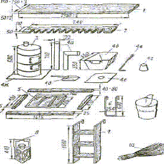
Рис. I. Съемное воинское оборудование крытых вагонов железных дорог СССР:
1 — доска; 2 — ружейная зубчатка; 3 — печь; 4 — печной и кухонной комплекты; а — дымовые трубы; б — ящик для топлива, в — кочерга, г — кухонный железный конус, д — совок, е — лист для заделки люка, ж — поддонный лист; 5 — рама оконная с полозками; 6 — стремянка; 7 — ведро пожарное; 8 — фонари; 9 — лестница деревянная; 10 — метла
Для перевозки вооружения и военной техники
предоставляются платформы. При недостатке платформ по согласованию с органами
военных сообщений под погрузку отдельных видов вооружения и военной техники
могут предоставляться полувагоны. Замена платформ полувагонами производится с
учетом фактической потребности и возможности размещения в них вооружения и
военной техники.
35. Подготовка подвижного состава для перевозки
воинского эшелона выполняется железной дорогой и включает следующие операции:
— осмотр и отбор вагонов, удовлетворяющих
требованиям Правил технической эксплуатации железных дорог Союза ССР[10];
— очистку вагонов от мусора, снега, льда;
остатков ранее перевозившихся грузов, крепежных материалов, а также удаление
посторонних надписей и рисунков;
— промывку горячей водой и дезинфекцию людских
вагонов, вагонов-изоляторов, вагонов-кухонь и вагонов-продскладов, их просушку,
установку съемного воинского оборудования;
— полное или частичное закрытие и закрепление
верхних загрузочных люков в людских вагонах, вагонах-изоляторах, вагонах-кухнях
и вагонах-продскладах;
—
экипировку пассажирских вагонов (обеспечение постельными
принадлежностями, комплектами белья, инвентарем и т. п.);
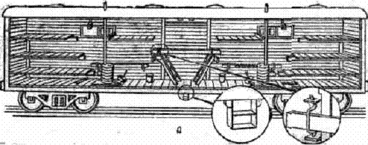
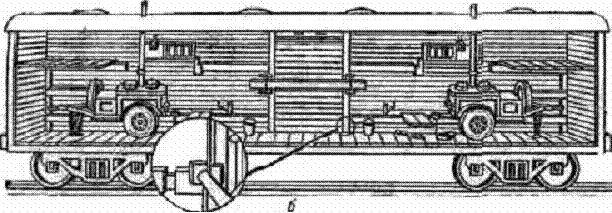
Рис. 2. Оборудование крытых вагонов:
а — вагон с
объемом кузова
— формирование железнодорожного состава по заданной для эшелона схеме:
— контрольный осмотр сформированного железнодорожного состава.
При повторной погрузке, если это необходимо,
пассажирские вагоны дезинфицируются, а людские вагоны, вагоны-изоляторы, вагоны-кухни
и вагоны-продсклады, кроме того, промываются горячей водой.
36. Контрольный осмотр сформированного
железнодорожного состава, предназначенного для перевозки воинского эшелона,
производится комиссией, назначаемой начальником отделения дороги. В состав
комиссии входят:
председатель —
начальник станции или его заместитель, члены комиссии: военный комендант
железнодорожного участка (станции), начальник вагонного депо, санитарный врач
или их представители. Результаты осмотра оформляются актом (приложение 10). Первый экземпляр акта хранится у начальника
станции, а второй — у военного коменданта
железнодорожного участка (станции).
После контрольного осмотра комиссией двери крытых
вагонов закрываются, закрепляются проволочными закрутками и пломбируются.
Сформированный железнодорожный состав подается под
погрузку в установленные сроки.
37. В случае необходимости производится дозиметрический, химический и
бактериологический (биологический) контроль сформированного железнодорожного
состава. Зараженные сверх допустимых норм вагоны заменяются или
дезактивируются, дегазируются и дезинфицируются.
Дозиметрический,
химический и бактериологический (биологический) контроль, а также
дезактивация, дегазация и дезинфекция сформированного железнодорожного состава
осуществляются силами и средствами железной дороги. При необходимости для этого
могут привлекаться силы и средства перевозимых воинских частей.
38. Поезд, в составе которого имеется 10 и более вагонов, занятых воинским эшелоном
(воинским транспортом), считается воинским поездом.
Поезд, в составе которого имеется 10 и более людских вагонов или 7 и более пассажирских вагонов, занятых
личным составом, считается воинским людским поездом.
39. Воинский эшелон формируется по схеме так, чтобы пассажирские, людские
вагоны, вагон-кухня и вагон-продсклад составляли одну группу вагонов и находились
в средней части эшелона, а платформы (полувагоны) с вооружением и военной
техникой и крытые вагоны с материальными средствами размещались группами в его
головной и хвостовой частях.
Изменять
схему сформированного состава, предназначенного для перевозки воинского
эшелона, а также количество и род вагонов в нем разрешается только по
согласованию с органами военных сообщений.
40. В поезде с эшелоном разрешается перевозить принадлежащие воинскому
эшелону материальные средства:
— боеприпасы и грузы других разрядов — в
штатной и табельной технике, в крытых вагонах или на платформах (в полувагонах)
в соответствии с требованиями Правил перевозки разрядных грузов[11];
— горючее и смазочные материалы, специальные жидкости и другие опасные
грузы, находящиеся в таре, специальных емкостях, автотопливозаправщиках, автомаслозаправщиках, прицепах-цистернах и
других средствах заправки и транспортирования горючего, — в крытых вагонах, в полувагонах и на платформах, а также наливом
в
цистернах и специальном подвижном составе.
Разрешается
перевозка горизонтально погруженных колесных и гусеничных машин, следующих в
составе воинских транспортов под охраной караулов, без слива горючего из
топливных баков только при надежном запирании пробками (крышками) заливных горловин.
41. Пассажирские, людские вагоны и вагоны-кухни при формировании состава
для эшелона должны иметь прикрытие от вагонов (цистерн) с разрядными и
опасными грузами (кроме платформ с танками и другими бронированными машинами,
в которых имеются эти грузы).
Вагоны
(цистерны) с разрядными и опасными грузами, как правило, должны размещаться в
хвостовой части поезда. В качестве прикрытия используются вагоны с неопасными
грузами, а в отдельных случаях — порожние.
42. Воинское
погрузочно-выгрузочное место включает следующие основные элементы:
— железнодорожный путь (или несколько путей);
— погрузочно-выгрузочную постоянную (стационарную) воинскую
платформу или воинскую площадку с установленными на ней сборно-разборными
платформами или аппарелями;
— подъезды к погрузочно-выгрузочной платформе
или площадке;
— специальные устройства,
погрузочно-выгрузочные приспособления, материалы и инструменты.
43. К платформам относятся постоянные (стационарные) и сборно-разборные
погрузочно-выгрузочные устройства, имеющие горизонтальные площадки на высоте 1100 —
К
сборно-разборным погрузочно-выгрузочным устройствам относятся металлические
аппарели, а также платформы и аппарели из рельсов и шпал.
Сборно-разборные
платформы и аппарели используются для многократной погрузки (выгрузки) войск и
должны устанавливаться (собираться) на воинских и других площадках с
соблюдением габарита приближения строений. Их количество должно обеспечивать
установленные сроки погрузки эшелона[12].
К
погрузочно-выгрузочным приспособлениям относятся переходные мостки, мостки из
опорных скоб и шпал, въездные трапы и металлические листы (рис. 3 — 5).
44. Погрузочно-выгрузочные
постоянные (стационарные) воинские платформы строятся по типовым
проектам, согласованным с органами военных сообщений, а воинские площадки
устраиваются, как правило, на всю полезную длину погрузочно-выгрузочного пути
и должны иметь твердое покрытие на уровне подошвы рельса.
В
зависимости от расположения относительно железнодорожных путей
погрузочно-выгрузочные платформы делятся:
— на боковые сплошные и секционные, сооружаемые вдоль железнодорожного
пути;
— на торцовые, сооружаемые в тупиках;
— на комбинированные, представляющие собой соединение боковой и торцовой
платформ;
— на островные, сооружаемые между железнодорожными путями.
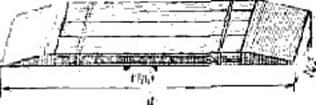
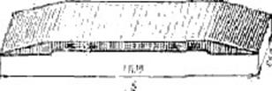
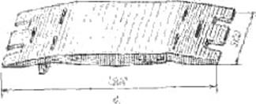
Рис. 3. Переходные мостки:
а — деревянный; 6 —
металлический; в — металлический облегченный.
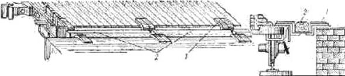
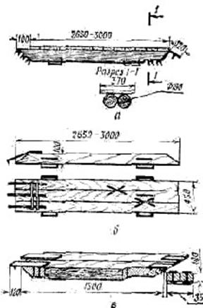
1 — скобы; 2 — шпалы.
Рис. 5. Въездные трапы для
наклонной погрузки грузовых автомобилей своим ходом (варианты):
а — удлиненный из бревен с настилом из досок; б — удлиненный из досок; в — укороченный из досок
45. Тип сборно-разборного
погрузочно-выгрузочного устройства определяется в каждом конкретном случае
военным комендантом железнодорожного участка
по согласованию с начальником отделения железной дороги исходя из
условий предстоящей погрузки (выгрузки) войск.
Все
материалы и инструменты для установки сборно-разборных платформ и аппарелей
предоставляются железной дорогой; сборка производится силами войск (команд) и
специальных бригад, выделяемых железной дорогой.
Порядок
сборки сборно-разборных погрузочно-выгрузочных устройств, потребность в
материалах, состав команд (бригад) и время на установку платформ и аппарелей из
рельсов и шпал, а также нормы обеспечения воинского погрузочно-выгрузочного
места приспособлениями, материалами и инструментами приведены в приложении 11.
46. Для погрузки (выгрузки) вооружения и военной техники могут
использоваться имеющиеся в войсках танковые мостоукладчики и колейные
механизированные мосты на автомобильном ходу, а в случаях крайней необходимости
при погрузке (выгрузке) воинских эшелонов на промежуточных станциях, не имеющих
погрузочно-выгрузочных устройств, и на перегонах (в военное время) — устройства из подручных материалов (бревен,
грунта и др.).
Для
погрузки (выгрузки) материальных средств эшелона должны использоваться
табельные погрузочно-выгрузочные приспособления и средства механизации.
47. К специальным устройствам воинского
погрузочно-выгрузочного места относятся:
— водоразборные краны, колонки;
— туалеты постоянные или полевые;
— стационарное электрическое освещение с
приспособлениями для светомаскировки;
— телефоны для связи с дежурным по станции и военным, комендантом
железнодорожного участка (станции).
В
необходимых случаях по согласованию с железной дорогой силами и средствами
перевозимых войск отрываются укрытия для личного состава.
48. На период погрузки (выгрузки) войск
погрузочно-выгрузочные места обеспечиваются железной дорогой
погрузочно-выгрузочными приспособлениями, которые она доставляет к месту
погрузки (выгрузки) войск (см. приложение 11).
49. Погрузка (выгрузка) народнохозяйственных грузов на воинских
погрузочно-выгрузочных местах допускается в каждом отдельном случае с
разрешения начальника отделения железной дороги после согласования с военным
комендантом железнодорожного участка, при условии обеспечения постоянной
готовности этих мест для погрузки (выгрузки) воинских эшелонов. Хранение
каких-либо грузов на воинских погрузочно-выгрузочных местах не разрешается.
На электрифицированных участках железных
дорог погрузочно-выгрузочные работы производятся только после снятия напряжения
с контактного провода над участком пути, где будет производиться погрузка
(выгрузка) войск, заземления провода и получения письменного разрешения от
начальника станции (дежурного по станции) на производство
погрузочно-выгрузочных работ.
50. Воинский эшелон приступает к погрузке по
команде начальника эшелона и в соответствии с планом погрузки (приложение 12). Погрузка вооружения и военной техники осуществляется,
как правило, на широком фронте с использованием всех имеющихся погрузочно-выгрузочных
устройств, приспособлений и механизмов, скрытно, быстро и организованно.
Старшие по вагонам принимают по описи от представителя (начальника) станции
съемное воинское оборудование (СВО). Во время приемки СВО проверяется его
исправность. Неисправные предметы СВО заменяются, а недостающие — пополняются (приложение 13).
При
невозможности замены или пополнения предметов съемного оборудования в описи
делается запись, которая подписывается представителем (начальником) станции и
заверяется штемпелем станции.
Оформление
транспортных документов на перевозку воинского эшелона производится
одновременно с погрузкой.
Нормы времени на погрузку (выгрузку, перегрузку) воинского эшелона на железнодорожный подвижной состав приведены в приложении
По
окончании крепления и маскировки вооружения и военной техники на железнодорожном
подвижном составе и оформления транспортных документов на перевозку воинского
эшелона погрузка считается законченной.
51. За погрузку подразделения отвечает его
командир. Он руководит погрузкой подразделения и обеспечивает правильное
размещение, крепление и маскировку вооружения и военной техники. Заездом
каждой машины на железнодорожный подвижной состав руководит командир взвода
или соответствующее должностное лицо.
Дальнейшим движением вооружения и военной техники
по железнодорожному подвижному составу руководит командир отделения, расчета
(экипажа).
Вооружение и военная техника и запасы материальных
средств воинского эшелона размещаются с учетом очередности их выгрузки и
максимального использования кузовов и прицепов военной техники. Запасы горючего
и боеприпасов грузятся в разные вагоны.
52. Допускаются заезд и движение по металлическим торцовым бортам
платформ без укладки на них переходных мостков или металлических листов
колесных машин с нагрузкой на ось до 10
т и военных гусеничных машин (ВГМ) с удельным давлением до 0,8 кгс/см2.
Разрешается
в отдельных случаях грузить ВГМ массой до 15
т, не перекрывая переходными мостками зазоры между боковыми
погрузочно-выгрузочными устройствами и платформами. При погрузке (выгрузке)
колесных машин с нагрузкой на ось до 10 т
допускается взамен переходных мостков использование боковых металлических
бортов платформ. Использование при погрузке (выгрузке) металлических бортов
платформ взамен переходных мостков в других случаях, а деревянных бортов
платформ во всех случаях не разрешается.
53. Размещение и крепление вооружения и военной техники воинского эшелона
на железнодорожном подвижном составе должны производиться в соответствии с
требованиями Технических условий размещения и закрепления вооружения и военной
техники на железнодорожном подвижном составе (приложение 15)[13], Правил
перевозок грузов[14],
отдельными указаниями Министерства путей сообщения и Министерства обороны с
учетом максимального использования грузоподъемности и вместимости вагонов.
54. При погрузке вооружения я военной техники на железнодорожный подвижной
состав применяются следующие основные способы уплотненной погрузки:
— погрузка колесных машин на сцепы платформ (полувагонов) или размещение
свесов машин над сцеплением (например, совмещенная погрузка танков и
автомобилей танкового батальона);
— наклонная погрузка порожних грузовых
автомобилей некоторых марок;
— погрузка в два яруса (например, размещение
легковых автомобилей в кузовах грузовых автомобилей);
— размещение вооружения и военной техники с рациональным расположением
выступающих деталей и узлов (навстречу друг другу стволами орудий, стрелами и
др.), под углом к продольной оси платформ и перпендикулярно к ней некоторой
техники (например, одноосных прицепов и др.).
Для
уплотненной погрузки по решению командира воинской части у некоторых видов
вооружения и военной техники может производиться демонтаж выступающих узлов и
деталей.
55. Перевозка вооружения и военной техники, имеющих боковую
негабаритность нулевой и первой степени, в эшелонах, а также воинскими
транспортами под охраной караулов производятся без предъявления органам
транспорта паспорта груза, чертежей (эскизов) погрузки с расчетами крепленая
на железнодорожном подвижном составе и без осмотра комиссиями на станциях
погрузки и в пути следования.
В этом
случае вооружение и военная техника устанавливаются строго симметрично
относительно продольных осей платформ (после установки обязательно проверяется
симметричность свеса гусениц (колес), с
пола платформы, разница свеса не должна превышать
Начальник
станции (его представитель) после погрузки проверяет соответствие фактических
размеров очертания погруженного груза указанной степени негабаритности и
правильность размещения вооружения и военной техники. После чего составляется
акт по форме, указанной в приложении 16.
При передаче эшелона (транспорта) с одной дороги на
другую с грузом, имеющим боковую негабаритность нулевой и первой степени,
дорога, сдающая эшелон (транспорт), уведомляет в установленном порядке дорогу,
на которую поступает этот эшелон (транспорт).
Перевозка
в эшелонах и транспортах, следующих под охраной караулов, вооружения и военной
техники, имеющих негабаритность второй и больших степеней, а также перевозка в
воинских транспортах без охраны караулами вооружения и военной техники, имеющих
негабаритность нулевой и больших степеней, выполняются с соблюдением требований
Инструкции по перевозке грузов негабаритных и погруженных на транспортеры по
железным дорогам СССР колеи
56. После размещения вооружения и военной техники
на железнодорожном подвижном составе необходимо:
— закрепить вооружение и военную технику от возможных продольных и
поперечных смещений;
— включить стояночные тормоза, низшую
передачу (у танков педаль тормоза и рычаг переключения передач после включения
пломбируются);
— выключить передний ведущий мост у автомобилей, установленных над
сцеплением вагонов;
— проверить крепление погруженных вооружения и военной техники,
съемного оборудования (огнетушителей, лопат, лестниц и т.д.) и запасных колес;
— проверить положение стопоров, башен и пушек танков, стопоров и
фиксаторов выступающих и вращающихся частей другой техники и правильность их
пломбирования, включить блокировки. В случае неисправности стопоров и
фиксаторов все вращающиеся, выступающие части вооружения и военной техники
необходимо закрепить в положении по-походному проволочными растяжками;
— проверить соответствие положения вооружения и военной техники
габариту погрузки (рис. 6) или
требованиям к перевозке негабаритных грузов (ст. 55 настоящего Наставления);
— закрыть и опломбировать люки, двери кабин, предварительно подняв
стекла;
— в холодное время слить воду из системы охлаждения;
—
закрыть и закрепить запорами борта платформ; в случаях когда ширина
техники не позволяет закрыть боковые борта платформ, закрепить их в открытом
(опущенном) положении (металлические борта закрепить за кольца на продольных
балках, а при отсутствии колец — увязать
проволокой);
Рис. 6. Габариты погрузки— произвести (при необходимости) маскировку
погруженных вооружения и военной техники.
57. Крепление вооружения и военной техники воинского эшелона на
железнодорожном подвижном составе производится личным составом экипажей
(водителями, расчетами) под руководством командиров подразделений, экипажей
(расчетов). В необходимых случаях в помощь водителям автомобилей выделяется
личный состав из подразделений воинского эшелона.
Для
крепления вооружения, военной техники и других материальных средств воинского
эшелона используются приспособления и соответствующие материалы.
К
приспособлениям для крепления относятся: типовые упорные и боковые деревянные
бруски для закрепления колесных машин, деревянные вкладыши для закрепления
ВГМ, табельные растяжки, металлические шпоры, упорные башмаки, струбцины,
струбцины-растяжки, универсальные многооборотные крепления (УМК). Все
приспособления используются многократно.
В
качестве материалов для крепления используются: мягкая стальная проволока,
деревянные упорные и боковые бруски, подкладки, прокладки, распорные
бруски, стойки, гвозди и строительные
скобы.
58. При перевозках воинских эшелонов железная
дорога предоставляет: деревянные упорные и боковые бруски, прокладки, подкладки,
гвозди и строительные скобы. Воинская часть должна иметь табельные средства
крепления или проволоку, распорные бруски, стойки и деревянные вкладыши, а
также веревки для закрепления тентов и маскировочных средств. Потребность в
приспособлениях и материалах для крепления вооружения и военной техники
определяется заблаговременно при составлении расчета воинской части на
перевозку и уточняется начальником воинского эшелона с военным комендантом железнодорожного
участка (станции) при составлении плана погрузки (см. приложения 2 и 12).
Материалы,
предоставляемые железной дорогой, выделяются по заявке военного коменданта
железнодорожного участка (станции) и доставляются на погрузочно-выгрузочное место
силами железной дороги.
59. Маскировка вооружения и военной техники, погруженных на
железнодорожный подвижной состав, производится личным составом экипажей
(водителями, расчетами) под руководством командиров подразделений, экипажей
(расчетов). При большом объеме маскировочных работ в помощь водителям автомобилей
выделяется личный состав погрузочно-выгрузочных команд или подразделений
воинского эшелона.
Для
маскировки вооружения и военной техники используются табельные брезенты и специальное
маскировочное имущество.
Маскировочное
покрытие не должно выступать за пределы габарита погрузки. Брезенты, щиты,
маты и т. п. должны надежно закрепляться, чтобы их не сорвало во время
движения поезда.
60. Погрузка кухонь в вагоны и их установка производятся
погрузочно-выгрузочной командой эшелона, а оборудование дымоходами — железной дорогой. В вагоне устанавливаются
одна-две кухни прицепные или две — шесть
кухонь переносных (см. рис. 2б и 7).
Перед погрузкой в вагон у кухонь прицепных
снимается верхняя часть дымовой трубы с колпаком. Кухни закатываются в вагон
стрелой вперед.
61. При отсутствии в составе, поданном под
погрузку воинского эшелона, вагонов с тормозными площадками или когда их не
хватает, силами и средствами перевозимой части (подразделения) на платформах
устраиваются ограждения (рис. 8).
62. По окончании погрузки погрузочно-выгрузочные
приспособления и оставшиеся материалы для крепления собираются и укладываются
в указанном работником станции месте. Проверяется, не оставлено ли на
погрузочно-выгрузочном месте (платформе, площадке, междупутье) какое-либо имущество воинского эшелона, а
также документы, письма, газеты и другие предметы.
63. Посадка личного состава
эшелона в вагоны производится по окончании погрузки и крепления вооружения и
военной техники, проверки личного состава, оружия, документов, и она должна
быть закончена не позже чем за 10 мин до
отправления поезда.
Посадка в людские вагоны производится с помощью
выдвижных металлических лестниц или стремянок, устанавливаемых дневальными по
вагонам перед посадкой. После окончания посадки лестницы и стремянки
убираются, а в дверных проемах устанавливаются закладки.
Рис. 7. Размещение кухонь полевых:
1 — кухня полевая; 2 — бак для воды; 3 — стол; 4 — полка
Рис. 8. Ограждение для часовых и наблюдателей
Автоматы
и карабины в людских вагонах размещаются в ружейных зубчатках, а в пассажирских
вагонах — на багажных полках. Другое
стрелковое оружие размещается на полу вагона по указанию командира подразделения.
64. На станции погрузки для заполнения транспортных документов списываются
номера всех вагонов и определяется масса вооружения, военной техники и запасов
материальных средств, погруженных на каждую платформу, в полувагон и в крытый
вагон.
Начальник
воинского эшелона (отправитель воинского транспорта) или его представитель в товарной конторе, а где ее нет — у начальника станции заполняет
железнодорожные накладные и другие документы.
Кроме
того, начальник воинского эшелона в маршрутном листе (приложение 17) и железнодорожной накладной, а
представитель отправителя воинского транспорта в описи, вручаемой начальнику
караула, и в накладной делают запись, заверяя ее своей подписью, о том, что
вооружение и военная техника размещены и закреплены на железнодорожном
подвижном составе правильно, стопорные и фиксирующие устройства исправны и
приведены в положение, исключающее разворот или отклонение отдельных частей и
узлов вооружения и военной техники, и опломбированы.
После
оформления указанных документов начальнику воинского эшелона выдаются квитанции
дорожных ведомостей по числу заполненных накладных и один экземпляр описи
съемного воинского оборудования.
Проверку
правильности размещения, крепления и маскировки вооружения и военной техники
при погрузке производит начальник эшелона или представитель отправителя воинского
транспорта, которые несут ответственность за размещение, крепление и
маскировку вооружения и военной техники воинского эшелона (транспорта).
65. Воинские поезда движутся по железным дорогам
со скоростями, установленными в графиках движения поездов. Они пользуются первоочередностью
движения перед другими поездами, кроме внеочередных (восстановительных,
пожарных, снегоочистителей, локомотивов без вагонов, автомотрис и автодрезин
несъемного типа, назначаемых для восстановления нормального движения и для
тушения пожара), пассажирских и
почтово-багажных поездов. Очередность продвижения воинских поездов
устанавливается органами военных сообщений в соответствии с определенной командованием
последовательностью.
Расписания
движения воинских поездов с эшелонами и изменения маршрутов их следования
органами транспорта должны согласовываться с органами военных сообщений. Если
воинский поезд с эшелоном не может быть отправлен со станции по расписанию, то
время его отправления устанавливается должностными лицами железной дороги
совместно с военным комендантом железнодорожного участка (станции), а где его
нет — согласовывается с начальником
эшелона.
66. К воинскому поезду с эшелоном допускается
прицепка вагонов с попутными грузами при условии:
— обеспечения безопасности следования эшелона;
— сохранения целости состава эшелона (вагоны с попутными грузами могут
ставиться в головную и хвостовую части поезда);
— соблюдения предусмотренной расписанием
стоянки поезда на станциях прицепки и отцепки вагонов с попутными грузами.
Не
разрешается прицепка к воинскому людскому поезду не принадлежащих эшелону вагонов
с негабаритными, радиоактивными и разрядными грузами, цистерн с кислотами,
сжиженными газами, легковоспламеняющимися жидкостями первого разряда,
керосином и дизельным топливом, а также порожних цистерн из-под сжиженных
газов.
67. Разъединение вагонов в
эшелонах (транспортах) в пути следования не разрешается.
При
обнаружении технически неисправных вагонов, принадлежащих эшелону (транспорту),
железная дорога обязана обеспечить их безотцепочный ремонт или срочную замену
исправными вагонами. Если ремонт неисправных вагонов может вызвать задержку
эшелона (транспорта), то эти вагоны по согласованию с военным комендантом
железнодорожного участка (станции) отцепляются от поезда и после ремонта
направляются к месту назначения ближайшим поездом.
Перегрузка
груза эшелона из неисправных вагонов в исправные производится личным составом
эшелона, а груза, перевозимого в составе воинского транспорта, — силами и средствами железной дороги под
руководством специалиста, сопровождающего воинский транспорт, а при его
отсутствии — под руководством
специалиста, вызываемого военным комендантом
железнодорожного участка
(станции). При отцепке вагонов с вооружением и военной техникой с ними
остаются экипажи (водители, расчеты), а с другими материальными средствами — караул. Начальник эшелона (караула)
назначает старшего и вручает ему акт об отцепке вагона, засвидетельствованный
военным комендантом железнодорожного участка (станции) или начальником
станции, и обеспечивает оставшийся личный состав деньгами и питанием по
соответствующим нормам. Для их размещения железная дорога предоставляет
бесплатно людской вагон. В дальнейшем принимаются меры к тому, чтобы в пути
они присоединились к своей части. При невозможности заменить неисправные
людские и пассажирские вагоны личный состав эшелона временно размещается в
других вагонах. В этом случае железная дорога обязана на ближайшей узловой,
сортировочной или участковой станции взамен отцепленного неисправного включить
в состав поезда с эшелоном исправный вагон.
При
обнаружении порчи или повреждений воинского груза по вине железной дороги составляется
коммерческий акт.
68. В пути следования должно вестись постоянное наблюдение за состоянием
крепления вооружения и военной техники. При обнаружении в пути следования
смещения или нарушения крепления груза эшелон (транспорт) должен быть задержан
для устранения неисправностей. Если смещение произошло с вооружением и
военной техникой, имеющими боковую негабаритность нулевой и первой степени,
начальник эшелона (сопровождающий воинский транспорт специалист), военный
комендант железнодорожного участка (станции) и начальник станции делают
соответствующие отметки в акте, приложенном к дорожной ведомости (см.
приложение 16).
69. Маневры на станциях с вагонами, занятыми личным составом эшелонов и
караулами воинских транспортов, должны производиться только после
предупреждения работниками станции начальника эшелона (караула) или дежурного
по эшелону о производстве маневров. В этих случаях по указанию начальника
эшелона (караула) двери людских вагонов закрепляются от самопроизвольного закрывания
(открывания).
Кроме
того, начальник эшелона (караула) предупреждается о маневрах с вагонами на
смежных путях, о приеме или отправлении поездов со смежных путей, о времени
отправления эшелона (транспорта).
Вагоны,
занятые воинским эшелоном, с сортировочных горок не спускаются.
Посадка
личного состава в вагоны и выход из них во время маневров не разрешаются.
На
станциях, где предусмотрена стоянка поезда с эшелоном для снабжения водой, топливом
и для раздачи горячей пищи, он должен приниматься на путь, обеспечивающий наибольшую
безопасность личного состава и удобство снабжения.
70. Запрещается при перевозке
воинских эшелонов использовать жидкое топливо для приготовления пищи в кухнях
полевых и для отопления людских вагонов.
Воинские
поезда (воинские людские поезда) снабжаются средствами пожаротушения по нормам,
утверждаемым Министерством путей сообщения.
71. На участках, не оборудованных поездной
радиосвязью или перегонной телефонной связью, локомотивы, подаваемые для
перевозки воинского поезда (воинского людского поезда), снабжаются железной
дорогой переносными телефонами.
72. Начальник эшелона управляет подразделениями в пути следования по
телефонной связи или радиосвязи, световыми и звуковыми сигналами, а также
используя посыльных. Он, как правило, размещается в середине эшелона, имея
телефонную связь с начальником караула, наблюдательными постами, командирами
расчетов средств противовоздушной обороны, командирами подразделений, а также
с машинистом локомотива. Для поддержания связи с начальником эшелона
разрешается проезд в кабине локомотива
военнослужащего из состава эшелона.
Начальник
эшелона поддерживает связь с военными комендантами на путях сообщения по
маршруту следования, используя средства связи железнодорожного транспорта, а со
старшим начальником — через военных комендантов
на путях сообщения или с использованием радиосредств (при наличии их в эшелоне).
73. Выгрузка эшелона может быть
осуществлена как на станции назначения, так и во временных перегрузочных
районах. Подготовка к выгрузке эшелона должна быть начата во время стоянки на
одной из ближайших к пункту выгрузки станций или на станции назначения до
подачи состава под выгрузку. Топка печей в людских вагонах должна быть прекращена
до прибытия поезда с эшелоном на станцию выгрузки. По прибытии поезда с
эшелоном на станцию выгрузки начальник эшелона получает от военного коменданта
железнодорожного участка (станции), а там, где его нет, от начальника станции
(их представителей) указания о порядке выгрузки.
Выгрузка
начинается по команде начальника эшелона. Личный состав высаживается из
вагонов и следует в составе подразделений к местам выгрузки вооружения и
военной техники. В людских вагонах, в вагоне-кухне, вагоне-продскладе и вагоне-изоляторе
остаются старшие по вагонам для сдачи съемного воинского оборудования.
Выгрузка вооружения и военной техники производится с использованием всех
имеющихся погрузочно-выгрузочных устройств, приспособлений, механизмов и должна
быть закончена в сроки, указанные в приложении
14.
Для
обеспечения быстрой выгрузки воинского эшелона в неподготовленных местах используются
табельные и подручные средства.
74. Старшие по вагонам по указанию начальника эшелона сдают начальнику
станции (его представителю) съемное воинское оборудование по описи,
составленной на станции погрузки (см. приложение
13). После этого оборудование по указанию военного коменданта
железнодорожного участка (станции) или его представителя, а там, где его нет,
начальника станции (его представителя) укладывается личным составом эшелона в
крытые вагоны. В случае утери или повреждения съемного воинского оборудования
его стоимость взыскивается с начальника воинского эшелона в установленном
порядке.
75. После выгрузки эшелона приспособления, применяемые для многократного
закрепления вооружения и военной техники, маскировочное и другое имущество
забираются подразделениями для последующего их использования.
Погрузочно-выгрузочные приспособления и освободившиеся материалы для одноразового
крепления силами погрузочно-выгрузочных команд эшелона собираются и укладываются
в указанном работниками станции месте, вагоны очищаются от посторонних предметов.
Проверяется, не осталось ли на железнодорожном подвижном составе или на
погрузочно-выгрузочном месте какое-либо имущество эшелона, а также документы,
письма, газеты и другие предметы, принадлежащие личному составу эшелона.
Борта платформ и двери (люки) крытых вагонов закрываются.
76. Начальник эшелона после сдачи съемного воинского оборудования
оформляет (раскредитовывает) в товарной конторе, а там, где ее нет, у
начальника станции транспортные документы на эшелон, расписывается в дорожных
ведомостях и оформляет требование-накладную формы 2 за перевозку грузовых вагонов. Начальнику эшелона вручаются накладные
на эшелон с календарным штемпелем станции выгрузки.
Начальник эшелона сдает в штаб воинской части
накладные и другие документы.
77. Перегрузка эшелона из вагонов железных
дорог СССР в вагоны железных дорог сопредельных стран, а также из вагонов на
морские (речные) суда или наоборот представляет собой две одновременные или
последовательные операции — выгрузку и
погрузку.
78. Для перегрузки эшелонов из вагонов одной
колеи в вагоны другой колеи используются воинские и другие перегрузочные места
и устройства.
Воинское перегрузочное место на железной дороге
включает: два пути разной по ширине колеи (1520
и
Щели и укрытия для личного состава при необходимости
готовятся личным составом перевозимых подразделений.
79. Железная дорога, получив информацию о подходе поезда с эшелоном для
перегрузки, формирует в соответствии со схемой идущего для перегрузки эшелона
железнодорожный подвижной состав и до прибытия эшелона подает его на
перегрузочное место.
80. На станции перегрузки военный комендант железнодорожного участка
(станции) и начальник эшелона определяют порядок размещения вооружения и
военной техники на поданном под перегрузку порожнем железнодорожном подвижном
составе и составляют план погрузки эшелона. При необходимости порожний состав
частично переформировывается. На дальнейшую перевозку оформляются новые
перевозочные и транспортные документы в порядке, установленном правилами воинских
перевозок и расчетов за них.
81. Людские вагоны, принадлежащие сопредельным
государствам, могут оборудоваться так же, как людские вагоны железных дорог
СССР. Обеспечение вагонов съемным воинским оборудованием производится железными
дорогами той страны, которой эти вагоны принадлежат.
Порядок приема и сдачи съемного воинского
оборудования вагонов колеи
При следовании эшелона после перегрузки на
расстояние до
82. Вооружение и военная техника, погруженные на железнодорожный
подвижной состав колеи
83. Крепление вооружения и военной техники на железнодорожном подвижном
составе колеи
Материалы
и приспособления для крепления (за исключением проволоки), освободившиеся после
выгрузки эшелона, используются повторно при его погрузке на железнодорожной
подвижной состав другой колеи. Недостающие материалы (деревянные упорные,
распорные и боковые бруски, стойки, прокладки, подкладки, гвозди и
строительные скобы) предоставляются железной дорогой той страны, на территории
которой производится перегрузка. Проволока и деревянные вкладыши должны
иметься в эшелоне.
84. В случаях задержки подачи железнодорожного порожнего состава под
перегрузку или невозможности по каким-либо причинам дальнейшего продвижения
поездов эшелон выгружается и выводится в район ожидания.
Указания
о дальнейших действиях эшелона (ожидание погрузки или следование маршем в
другой район) начальник воинского эшелона получает через военного коменданта
железнодорожного участка (станции).
85. Воинские эшелоны с вооружением и военной техникой, охраняемые
караулами, перегружаются силами и средствами перевалочных баз Министерства
обороны. В отдельных случаях силы и средства перевалочных баз Министерства
обороны могут привлекаться и для перегрузки других эшелонов.
86. Перегрузка эшелонов с железнодорожного подвижного состава на морские
(речные) суда и наоборот может производиться:
— непосредственно в порту (пристани) при
наличии железнодорожных подъездных путей по вариантам: вагон — судно (судно — вагон) или вагон — причал (пристань) — судно; судно — причал (пристань) — вагон;
— путем выгрузки из вагонов (судов) и
следованием своим ходом в порт (на пристань, на станцию) для погрузки на
морские (речные) суда (в вагоны).
Организация перегрузки воинского эшелона в порту (на
пристани) возлагается на военного коменданта на путях сообщения.
87. Перевозки воинских эшелонов морским и речным
транспортом применяются: для переброски частей и подразделений и доставки
материальных средств на изолированные участки побережья и острова; для
эвакуации войск и материальных средств с изолированных участков побережья и
островов; при перегруппировке войск на приморских, а также на других
направлениях при наличии судоходных рек.
88. При организации морских и речных перевозок учитываются: условия
обстановки, объем, сроки и направления перевозок, наличие и транспортные
возможности судов и портов (пунктов) погрузки (выгрузки), возможности войск и
органов морского (речного) транспорта по обеспечению и прикрытию перевозок.
89. В целях сохранения боеспособности перевозимых частей и подразделений
погрузку их на отдельные транспорты и суда необходимо производить в полном
составе со средствами усиления и запасами
материальных средств. Погрузка войск, как правило, должна проводиться в
темное время суток с соблюдением мер маскировки. В тех случаях, когда
обстановка не позволяет осуществить погрузку в темное время суток, должны быть
приняты меры по усилению маскировки.
90. Для перевозки войск морским и речным
транспортом привлекаются самоходные и несамоходные морские (речные) суда.
Основные
характеристики некоторых типов морских (речных) судов, пригодных для перевозки
воинских эшелонов, приведены в приложении 6.
Отбор
морских (речных) судов для перевозки эшелонов производится комиссией, назначаемой
начальником пароходства, в составе представителей пароходства, порта, медицинской
службы, органов военных сообщений и капитана судна. Комиссия определяет пригодность
судна к перевозке воинского эшелона, сроки его подготовки и составляет акт.
Подготовка
судна для перевозки воинского эшелона включает:
—
механическую очистку, дезинфекцию, дератизацию, мойку и сушку судовых
помещений, а при необходимости их дезактивацию и дегазацию. Для проведения
дезактивации и дегазации могут привлекаться перевозимые войска. Нормы времени
на подготовку грузовых помещений судов для перевозки личного состава эшелона
приведены в приложении 18;
—
санитарную обработку судовых помещений, их оборудование для размещения
личного состава эшелона, приготовления пищи и кипячения воды, хранения
продовольствия, с установкой при необходимости в этих помещениях приборов
освещения, отопления, вентиляции;
—
оборудование судовых помещений, отведенных для перевозки личного
состава эшелона, внутренней связью и сигнализацией (выполняется силами и
средствами перевозимых войск);
— установку палубных гальюнов и умывальников;
— оборудование мест для курения личного состава;
—
оборудование верхней палубы и грузовых помещений для размещения
разрядных и опасных грузов (обшивка досками, устройство выгородок и т.п.),
тяжелой гусеничной техники (покрытие палуб деревянным настилом) и крепления ее
(приварка дополнительных рымов и обухов);
—
проверку состояния имеющихся на судне грузоподъемных средств
погрузочно-выгрузочного инвентаря, а также водоотливных, аварийно-спасательных
средств и средств пожаротушения;
—
уборку на речных судах-площадках съемной части палубного грузового
ограждения или временный демонтаж несъемного ограждения для обеспечения
погрузки вооружения и военной техники на грузовую палубу;
—
проверку исправности маскировочного освещения, установленного на судне
для обеспечения погрузочно-выгрузочных работ в темное время суток;
—
снабжение судна индивидуальными спасательными средствами, средствами
пожаротушения, топливом, пресной водой, крепежными и сепарационными
материалами, необходимым погрузочно-выгрузочным инвентарем, а также
приспособлениями на случай погрузки (выгрузки) судна на рейде.
Нормы
времени оборудования морских судов для перевозки эшелона приведены в приложении 19.
91. Съемное воинское оборудование для перевозки личного состава эшелона
устанавливается на морских судах при продолжительности перевозки более двух
суток. Оно состоит из нар, столов, скамеек, ружейных пирамид, бачков для
питьевой воды, трапов с тамбурами, умывальников, палубных гальюнов, приборов
освещения, отопления и вентиляции.
Нормы
площади и объема судовых помещений для размещения личного состава эшелона на
судне приведены в приложении 5.
Количество
столов и скамеек определяется из расчета приема пищи личным составом эшелона не
более чем в три смены. Судовое помещение, отведенное для перевозки личного
состава эшелона, при размещении в нем более 100
человек должно иметь не менее двух трапов с тамбурами. Палубные гальюны устанавливаются
из расчета одно очко на 50 человек,
умывальники — один кран (сосок) на 30 человек. При перевозке на судне воинской
команды численностью до 50 человек
разрешается пользоваться судовыми умывальниками и гальюнами.
Освещение
судовых помещений, как правило, должно быть электрическим. На судах могут
использоваться при соблюдении правил пожарной безопасности фонари или свечи,
Для курения
личного состава эшелона на судне отводятся места на верхней палубе, где
устанавливаются бочки с водой или ящики с песком.
Монтаж (демонтаж) съемного воинского оборудования
(рис. 9) производится силами и средствами
органов транспорта и оплачивается Министерством обороны. В отдельных случаях
для производства этих работ может привлекаться личный состав воинских эшелонов.
При продолжительности перевозки менее двух суток в судовых помещениях,
отведенных для размещения личного состава эшелона, металлическая палуба
покрывается деревянным настилом либо используются лежаки, маты,
брезенты.
Температура
в судовых помещениях, отведенных для размещения личного состава эшелона,
должна быть не ниже +18°С. В холодное время года с этой целью устанавливаются
отопительно-вентиляционные контейнеры, а при их отсутствии — электрические или водяные грелки.
92. При перевозке эшелонов на речных судах-площадках личный состав при
необходимости размещается в палатках, устанавливаемых на палубе судна, а
экипажи (водители, расчеты) — в кабинах,
боевых отделениях и кузовах автомобилей.
Пассажирские
суда, привлекаемые для перевозки личного состава, должны следовать
вместе с судами, загруженными вооружением и военной
техникой эшелона.
93. Для медицинского обеспечения личного состава на судне оборудуются
каюта-изолятор и медицинский пункт. Они должны располагаться в изолированных
помещениях, иметь широкие и удобные входы, хорошее освещение и вентиляцию.
Инвентарь
и имущество для оборудования каюты-изолятора и медицинского пункта выделяются
воинской частью.
94. Для приготовления горячей пищи и кипячения воды на самоходных судах
используются камбузы (судовые кухни). При недостаточной вместимости котлов
камбузов (судовых кухонь) самоходных судов, а также на несамоходных судах
устанавливаются кухни полевые. К кухне полевой должны быть подведены шланги
для подачи пресной (питьевой) воды.
При
перевозках продолжительностью до трех суток кухни полевые не устанавливаются,
а личному составу выдается сухой паек.
Для
хранения продовольствия воинского эшелона на судне отводится помещение, которое
должно быть оборудовано полками, шкафами и иметь освещение и вентиляцию.
Обеспечение
личного состава эшелона кипятком и кипяченой водой в пути следования
осуществляется из расчета
Снабжение
судов пресной водой производится из расчета
95. Подготовленное для перевозки эшелона судно предъявляется комиссии,
которая определяет его готовность к перевозке и составляет акт.
96. Для погрузки (выгрузки) эшелонов на морские
(речные) суда могут использоваться постоянные или временно устраиваемые
погрузочно-выгрузочные места, как воинские, так и предназначенные для общего
пользования.
97. Погрузочно-выгрузочное место состоит:
— из причала;
— из подъездов к причалу со стороны прилегающей
территории (акватории) порта;
— из перегрузочного оборудования и специальных
устройств.
98. Подготовка погрузочно-выгрузочного места
для погрузки (выгрузки) эшелона включает:
—
проверку технического состояния причала, освобождение его от
посторонних предметов;
—
устройство при необходимости временного или плавучего причала;
— подготовку подъездов к причалу;
— осмотр и приведение в рабочее состояние перегрузочного оборудования и
специальных устройств;
— установку средств освещения;
—
организацию связи с военным комендантом на путях сообщения и
диспетчером порта;
—
организацию охраны.
Погрузка (выгрузка) эшелона у необорудованного
берега может производиться с временного или плавучего причала. При необходимости
используются разборные перегрузочные мостки (рис. 10), а также танковые мосто-укладчики и колейные механизированные
мосты.
99. Перегрузочное оборудование включает грузоподъемные средства,
погрузочно-выгрузочный инвентарь и перегрузочные приспособления. К
грузоподъемным средствам относятся: краны плавучие, портальные, мостовые, судовые
и др.
К
погрузочно-выгрузочному инвентарю относятся: грузозахватные устройства,
стропы, подвески, сетки и другие устройства для погрузки и выгрузки.
К
перегрузочным приспособлениям относятся: перегрузочные и переходные мостки,
трапы и сходни (см. приложение 11).
К специальным устройствам относятся:
— водоразборные краны, колонки:
—
туалеты постоянные или полевые;
—
электроосвещение с приспособлениями для светомаскировки;
—
средства связи с военным комендантом на путях сообщения и диспетчером
порта;
—
щели для укрытия личного состава.
100. Строительство временных
причалов и устройство подъездов к ним, сборка и разборка перегрузочных мостков,
устройство щелей для укрытия личного состава выполняются силами и средствами
личного состава эшелона. Материалы и инструменты для устройства временных
причалов предоставляются близлежащим портом по заявке органов военных сообщений
и оплачиваются Министерством обороны.
101. Необходимость погрузки (выгрузки) судов с эшелонами на рейде
определяется органами военных сообщений, а непосредственное место погрузки
(выгрузки) согласовывается ими с начальником пароходства (порта).
Плавсредства для обеспечения погрузки (выгрузки)
эшелонов на рейде и материалы для крепления вооружения и военной техники на них
выделяет пароходство (порт) по заявке органов военных сообщений.
102. Распределение личного состава, вооружения и
военной техники на судне и последовательность погрузки определяются грузовым
планом и планом обеспечения погрузки (выгрузки) воинского эшелона на судно
(приложение 20).
Грузовой
план составляется начальником порта совместно с военным комендантом на путях
сообщения, начальником эшелона или их представителями и согласовывается с капитаном
судна. Основанием для его разработки является расчет воинской части на перевозку
(см. приложение 3).
При
составлении грузового плана размещения эшелона предусматривается:
— рациональное использование полезных площадей грузовых помещений и
верхней палубы судна;
— равномерная загрузка трюмов, твиндеков и верхней палубы для
обеспечения должной остойчивости и сохранения других мореходных качеств судна,
а также прочности палуб и люковых закрытий;
— возможность погрузки (выгрузки) вооружения и военной техники судовыми
кранами (стрелами);
— возможность погрузки через грузовые люки судна вооружения и военной
техники с учетом их габарита;
— погрузка в последнюю очередь того вооружения и военной техники,
которые будут выгружаться в первую очередь;
— обеспечение сохранности и скрытности размещения вооружения и военной
техники;
— возможность надежного крепления вооружения и военной техники и
удобство доступа к ним для осмотра;
— места расположения на верхней палубе
(надстройках) зенитных средств эшелона для обеспечения противовоздушной обороны
судна;
— места
размещения принадлежащих эшелону разрядных и опасных грузов.
103. На одном судне с воинским эшелоном разрешается перевозить
принадлежащие воинскому эшелону материальные средства:
— боеприпасы
и другие разрядные грузы в штатной и табельной технике и в судовых помещениях;
— горючее и смазочные материалы, специальные жидкости и другие
опасные грузы, находящиеся в таре, специальных емкостях,
автотопливозаправщиках, автомаслозаправщиках, прицепах-цистернах и других
средствах заправки и транспортирования горючего.
Совместная
перевозка на одном судне разрядных и опасных грузов, принадлежащих эшелону,
допускается только при размещении этих грузов в несмежных трюмах.
104. На
основании грузового плана размещения разрабатывается план обеспечения погрузки
(выгрузки) воинского эшелона на судно (см. приложение 20).
Погрузочно-выгрузочные команды
выделяются из числа личного состава эшелонов.
Количество этих команд, выделяемых в
смену на погрузку (выгрузку) одного судна, должно соответствовать числу
работающих грузовых ходов.
Состав команд определяется условиями
погрузки (выгрузки). Как правило, в каждую смену на один грузовой ход в состав
погрузочно-выгрузочной команды назначается 12 —
18 человек.
При погрузке (выгрузке) вооружения и
военной техники своим ходом в состав погрузочно-выгрузочной команды выделяются 6 — 8 человек в каждую смену.
В соответствии с планом обеспечения
погрузки (выгрузки) воинского эшелона порт (судно) выделяет необходимое
количество портовых (судовых) специалистов, погрузочно-выгрузочный инвентарь,
перегрузочные приспособления, крепежный и сепарационный материалы.
105. В районе ожидания подразделения воинского эшелона готовят
вооружение и военную технику к перевозке и в соответствии с грузовым планом
размещения воинского эшелона производят ее маркировку согласно установленной
очередности погрузки на судно.
Маркировка
наносится мелом на видных местах. Например,
где: В — наименование судна «Восток»:
Тр-3 — наименование
трюма (грузового помещения), трюм № 3;
6 — очередность
погрузки в данный трюм (грузовое помещение);
10 — масса вооружения и военной техники.
106. По команде начальника эшелона старшие по людским судовым помещениям
принимают по описи съемное воинское оборудование. Во время приемки съемного
воинского оборудования проверяется его исправность. Неисправные предметы
съемного оборудования заменяются, а недостающие — пополняются. При невозможности замены или пополнения предметов
съемного воинского оборудования в описи делается соответствующая запись.
По
окончании приема начальник эшелона расписывается в описи съемного воинского
оборудования и инвентаря судна (приложение 21).
107. Погрузка на судно начинается по команде начальника эшелона после
получения на это разрешения капитана судна.
Во
время погрузки должны соблюдаться Правила поведения и меры безопасности личного
состава воинского эшелона (команды) (см. приложение 1).
Для
погрузки (выгрузки) вооружения и военной техники используются грузоподъемные
средства и другой погрузочно-выгрузочный инвентарь порта (см. приложение 11).
В
местах соприкосновения стропов с острыми частями вооружения и военной техники
используются деревянные прокладки. Для предотвращения раскачивания вооружения
и военной техники и придания им нужного направления при погрузке (выгрузке)
они удерживаются двумя — четырьмя
оттяжками. Подъем, перенос и опускание вооружения и военной техники должны
производиться без рывков, с соблюдением мер безопасности.
Нормы времени на погрузку (выгрузку) вооружения и
военной техники на морские и речные суда приведены в приложении 22.
108. Погрузка вооружения и
военной техники на судно производится под руководством портовых (судовых)
специалистов.
По сигналу командира
подразделения вооружение и военная техника подаются к борту судна, устанавливаются
в определенном месте и готовятся к застропке.
Застройку вооружения и военной техники, удержание их
в нужном положении с помощью оттяжек при подъеме и опускании, отстройку и
размещение на судне осуществляет личный состав погрузочно-выгрузочных команд
под руководством портовых (судовых) специалистов.
Варианты застропки основных видов вооружения и
военной техники показаны в приложении 23.
109. Погрузка на судно вооружения и военной техники, требующих особых
условий обращения, а также разрядных и опасных грузов должна производиться с
соблюдением правил специальных инструкций, которые доводятся начальником
воинского эшелона до портовых (судовых) специалистов,
110. При погрузке вооружения и военной техники своим ходом необходимо
соблюдать следующие правила:
— осуществлять движение по команде командира подразделения, без рывков,
на низшей передаче. Водитель должен быть готовым в любой момент прекратить
движение;
— при въезде на перегрузочный мосток продольные, оси тягача и прицепа
должны совпадать с продольной осью мостка;
— производить развороты гусеничных машин плавно, на небольшой скорости
и по возможности не на одном месте. Разворот на перегрузочных мостках не
разрешается;
— грузить длинномерное вооружение и военную
технику в первую очередь.
Погрузка длинномерного вооружения и военной техники
на речные суда может осуществляться продольным или поперечным способом (рис. 11 и 12)
и требует особого внимания.
111. После размещения вооружения и военной
техники на судне необходимо выполнить следующие операции:
— закрепить вооружение и военную технику от возможных продольных и
поперечных смещений;
— включить стояночные тормоза и низшую передачу (у танков педаль тормоза
и рычаг переключения передач после их включения пломбируются);
— проверить крепление погруженных грузов, съемного оборудования
(огнетушителей, лопат, лестниц и т. п.) и запасных колес;
— проверить положение стопоров башен и пушек танков, стопоров и
фиксаторов выступающих и вращающихся частей другой техники и правильность их
пломбирования; в случае неисправности стопоров и фиксаторов все вращающиеся,
выступающие части вооружения и военной техники необходимо закрепить в
положении «по-походному» проволочными растяжками;
— закрыть и опломбировать все люки, двери кабин, предварительно подняв
стекла;
— в холодное время слить воду из системы охлаждения, снять аккумуляторы
и перенести их в отапливаемые помещения;
— произвести при необходимости маскировку вооружения и военной техники,
размещенных на верхней палубе судна.
112. Крепление техники осуществляется во всех случаях при морских
перевозках, а на речных судах — при
плавании по водохранилищам и озерам. При плавании по рекам без выхода в
водохранилище вооружение и военная техника на судах не закрепляются, за исключением
ракетной техники.
Крепление
вооружения и военной техники производится одновременно с их погрузкой личным
составом экипажей (расчетов), водителями машин и специально выделенным для
этих целей личным составом эшелона под руководством командиров подразделений и
под контролем судовых специалистов.
За
надежное и правильное крепление вооружения и военной техники воинского эшелона
на судне отвечает капитан судна. Во время перевозки командиры подразделений и
судовые специалисты обязаны вести постоянное наблюдение за надежностью
крепления вооружения и военной техники.
113. Для крепления вооружения и военной техники используются: мягкая
стальная проволока, стальные тросы, талрепы, деревянные упорные и боковые
бруски, распорки, доски, гвозди, строительные скобы, а также упорные башмаки,
шпоры, деревянные вкладыши, табельные растяжки и др. Примерные нормы расхода
материалов для крепления вооружения и военной техники на судах приведены в
приложении 24.
114. При погрузке эшелонов в портах перегрузочные приспособления,
крепежные и сепарационные материалы предоставляются этими портами. На погрузку
воинских эшелонов вне порта суда подаются полностью снабженными указанными
приспособлениями и материалами.
Потребность
в приспособлениях и материалах для крепления и сепарации вооружения и военной
техники определяется планом обеспечения погрузки (выгрузки) воинского эшелона
(см. приложение 20).
115. Перед посадкой производится проверка личного состава, объявляются
правила поведения и меры безопасности на судне.
Посадка
личного состава эшелона производится по окончании погрузки и крепления вооружения
и военной техники.
Она
должна производиться по мосткам и трапам, огражденным леерами (поручнями), по
сеткотрапам и штормтрапам и быть закончена не позднее чем за 30 мин до отправления судна. Под трапами
должны навешиваться страховочные сетки. Движение по трапам осуществляется с
соблюдением заданной дистанции и не в ногу. Для наблюдения за состоянием
трапов и мостков выделяются один-два человека.
116. Погрузкой (выгрузкой) на рейде руководит капитан судна, а работой на
берегу — лицо, в ведении которого находятся рейдовые плавсредства.
При
организации погрузки (выгрузки) эшелона на рейде необходимо дополнительно проводить
инструктаж личного состава об особенностях посадки (высадки), работы
погрузочно-выгрузочных команд, погрузки, размещения и крепления техники на
рейдовых плавсредствах.
117. По окончании погрузки эшелона погрузочно-выгрузочные команды собирают
перегрузочные приспособления, оставшиеся крепежные и сепарационные материалы
и складывают их в места, указанные военным комендантом на путях сообщения или
работниками транспорта, а также проверяют, не осталось ли на погрузочном
месте какого-либо имущества эшелона, документов, писем, газет и других предметов.
118. В грузовой конторе или в коммерческом отделе порта погрузки (на
судне) начальник эшелона оформляет транспортные документы. Погрузка эшелона
считается законченной после окончания крепления и маскировки вооружения и
военной техники, посадки личного состава, оформления транспортных документов и
доклада начальника эшелона военному коменданту на путях сообщения (капитану
судна) о готовности эшелона к отправлению.
119. По прибытии эшелона в пункт выгрузки начальник эшелона получает от
военного коменданта на путях сообщения, а там, где его нет, от начальника порта
или их представителей указания о порядке выгрузки.
После
получения разрешения капитана судна по команде начальника эшелона
погрузочно-выгрузочные команды разводятся по рабочим местам. Личный состав,
вооружение и военная техника воинского эшелона по мере выгрузки направляются в
район сбора.
120. Старшие по людским судовым помещениям по указанию начальника эшелона
сдают капитану судна (его представителю) съемное воинское оборудование по
описи, составленной в пункте погрузки.
В
случае утери или повреждения съемного воинского оборудования или внутреннего
оборудования и инвентаря людских судовых помещений их стоимость взыскивается
в порядке, установленном Правилами оформления воинских перевозок и расчетов за
них.
121. По окончании выгрузки начальник эшелона оформляет в грузовой конторе
или в коммерческом отделе порта выгрузки (на судне) воинские перевозочные и
транспортные документы, а погрузочно-выгрузочные команды производят уборку
помещений, которые занимались эшелоном, собирают перегрузочные приспособления,
крепежные и сепарационные материалы и складывают их в места, указанные военным
комендантом на путях сообщения или работниками транспорта, а также проверяют,
не осталось ли на судне и погрузочно-выгрузочном месте какого-либо имущества
воинского эшелона, документов, писем, газет и других предметов.
122. Воинские эшелоны могут переправляться через
судоходные водные преграды (реки, каналы, озера, водохранилища и т.п.) на
транспортных речных судах путем устройства временных паромных переправ.
Временные
паромные переправы развертываются в случае отсутствия мостов и постоянно
действующих паромных переправ, а также при их недостаточной грузоподъемности
или пропускной способности.
123. Временная типовая паромная переправа состоит из причалов,
расположенных по одному на каждом берегу, и судов-паромов (приложение 25).
В
зависимости от состава и численности эшелона, времени, установленного на переправу,
определяется потребное количество рейсов-паромов и принимается решение на
развертывание (использование) одной или нескольких линий временных паромных
переправ.
В
качестве плавучих причалов временной паромной переправы используются стоечные
суда-площадки с разборными перегрузочными мостками (рис. 13 и см. рис. 10).
124. Участок судоходной водной преграды с причалами и подъездами к ним
составляет район переправы.
Район
временной паромной переправы оборудуется в инженерном отношении и должен
обеспечивать скрытную переправу эшелона, размещение сил и средств, необходимых
для ее бесперебойной работы, а также иметь прикрытие от ударов воздушного
противника.
Рис. 13. Плавучий причал из речного
стоечного судна:
1 - стоечное судно; 2 - разборный
перегрузочный мосток; 3 - швартовы; 4 - мертвые якоря (мертвяки); 5 - упорные
стрелы; 6 - якорь; 7 - переходные мостки; 8 - положение судна у причала; 9 –
кнехты.
125. Выбор и оборудование районов временных паромных
переправ производятся, как правило, заблаговременно.
При развертывании временных паромных переправ
необходимо:
—
определить места установки плавучих причалов;
—
произвести инженерную разведку акватории;
—
произвести при необходимости траление акватории, дноуглубительные
работы, установку дополнительных знаков судоходной обстановки;
—
отобрать, оборудовать и в установленные сроки сосредоточить суда в
местах развертывания временных паромных переправ для использования их в
качестве причалов и временных паромов;
—
установить плавучие причалы;
—
доставить и установить перегрузочные мостки;
—
оборудовать подъездные пути к причалам.
126. Суда, материалы и оборудование, необходимые для устройства временных
паромных переправ, выделяются организациями речного транспорта по заявкам
органов военных сообщений.
Отбор
судов для переправы воинских эшелонов производится начальником порта совместно
с военным комендантом водного участка и порта, с участием представителя речного
Регистра.
127. В необходимых случаях оборудование
(строительство) временных причалов, устройство съездов к ним, установка
дорожных знаков и указателей могут осуществляться силами и средствами
перевозимых частей и подразделений.
128. Руководство работой временной паромной
переправы осуществляет комендант переправы. Он определяет очередность
переправы воинских эшелонов, время погрузки, выгрузки и отправления паромов.
Руководство погрузкой (выгрузкой) личного состава,
вооружения и военной техники эшелона на пароме осуществляют командиры подразделений.
Вооружение и военная техника
перед погрузкой на паром в транспортное положение не приводятся, а следуют на
погрузку, как правило, в положении «по-походному». Размещение вооружения и
военной техники на паромах производится в соответствии с указаниями капитанов
судов.
129. Перевозки воинских команд воздушным
транспортом организуются для срочной их переброски на большие расстояния, при
невозможности выполнения таких перевозок другими видами транспорта и при
необходимости в короткие сроки обеспечить доставку в заданный район личного
состава, вооружения, военной техники и запасов материальных средств.
Для осуществления воздушных перевозок могут привлекаться
части и подразделения военно-транспортной авиации, транспортной авиации видов
Вооруженных Сил СССР, отряды и воздушные суда гражданской авиации.
130. Перевозка воинских команд по воздуху осуществляется
на оборудованных и подготовленных для этих целей воздушных судах.
Дополнительные средства обеспечения погрузки (выгрузки)
и перевозки грузов (настилы, подставки, ложементы и т. п.) подготавливает и
доставляет к местам погрузки (выгрузки) воинская часть (отправитель).
131. Предварительная подготовка вооружения и военной
техники к перевозке воздушным транспортом производится в воинской части
(подразделении) в объеме технического обслуживания, предусмотренного
соответствующими руководствами и инструкциями. При этом необходимо проверить:
— надежность работы двигателей, ходовой части и тормозов;
— величину давления воздуха в камерах шин, установленную
для данной марки самоходного шасси;
— исправность запоров на бортах кузовов, дверей кабин
водителей и кабин управления агрегатами спецмашин;
— соответствие габаритов военной техники размерам
грузового люка и грузовой кабины воздушного судна с учетом установленных зазоров;
— надежность крепления навесных агрегатов и запасных
колес;
— правильность и надежность крепления грузов в кузовах
автомобилей;
— наличие отметок, указывающих расположение центра
тяжести и массы вооружения и военной техники, а также правильность их нанесения;
— надежность крепления пробок заливных горловин и
отсутствие подтекания масла и других жидкостей;
— наличие топлива, масла и охлаждающей жидкости в
системах, которое должно быть в пределах нормы, топливом заполняется не менее
1/4 и не более 3/4 заправки баков;
— чтобы все материальные средства массой более
— чтобы транспортирование горючего на самолетах (вертолетах)
производилось в исправной герметичной стандартной таре, с наполнением не более
0,9 объема, с исправными горловинами, пробками и прокладками под ними.
Вооружение и военная техника, перевозимые с войсками,
заблаговременно приводятся в состояние, отвечающее требованиям их
транспортирования воздушным транспортом.
Боеприпасы и другие опасные грузы должны перевозиться
только в стандартной исправной укупорке и таре в соответствии с требованиями
правил перевозки опасных грузов.
132. Штаб перевозимой части составляет на каждое
воздушное судно список личного состава перевозимой воинской команды и опись
груза (приложения 26 и 27). Один экземпляр списка (описи) передается диспетчеру
военного аэродрома, на котором осуществляется погрузка войск, или военному коменданту
аэропорта, другой — командиру воздушного судна, третий — остается у начальника
воинской команды.
Воинская часть (отправитель) обязана обеспечить
своевременное прибытие воинской команды на аэродром погрузки.
133. Для погрузки (выгрузки) воинских команд каждой
воинской части (подразделению) назначаются аэродром (площадки) погрузки
(выгрузки). Аэродромы погрузки выбираются по возможности ближе к районам
сосредоточения (дислокации) перевозимых воинских команд, а аэродромы выгрузки
— к новым районам сосредоточения или вероятным районам выполнения боевых
задач. До погрузки в воздушные суда воинские части (подразделения)
располагаются в районах ожидания.
134. Подготовка аэродрома (площадки) для перевозки войск
включает:
— выбор места стоянки воздушных судов с учетом
безопасного и удобного подъезда к ним военной техники;
— обеспечение средствами механизации
погрузочно-выгрузочных работ;
— обозначение маршрутов передвижения воинских команд и
военной техники к местам погрузки (выгрузки).
135. Выход воинских команд на аэродромы для погрузки
осуществляется по указанию старшего начальника. Погрузка (выгрузка) воинских
команд в воздушные суда производится под руководством командиров воздушных
судов.
Вооружение и военная техника грузятся следующими способами:
— самоходные машины въезжают в грузовую кабину своим
ходом по грузовому трапу (рампе);
— несамоходная техника и другие материальные средства
грузятся с использованием штатного погрузочного оборудования воздушного судна
или наземных средств механизации, при их отсутствии или невозможности
применения погрузка производится вручную.
136. Погрузка и крепление грузов в грузовой кабине
(багажном отделении) воздушного судна производятся в соответствии с требованиями
Инструкции по летной эксплуатации воздушного судна (разрабатывается на каждый
тип воздушного судна), инструкций по воздушной транспортировке отдельных образцов
вооружения и военной техники, а также Правил перевозки опасных грузов воздушным
транспортом[16].
137. Перед погрузкой вооружение и военная техника
устанавливаются у воздушного судна в положении готовности к погрузке. Самоходная
техника въезжает по грузовым трапам (рампе) на низшей передаче, без резких рывков
и торможений до места установки ее в грузовой кабине.
138. Размещение воинских грузов в грузовой кабине
воздушного судна производится в пределах допустимой эксплуатационной нагрузки
и центровки, в соответствии со схемой загрузки. Общая масса полезной загрузки
должна соответствовать грузоподъемности воздушного судна при данном варианте
заправки топливом.
139. После размещения вооружения и военной техники в
грузовой кабине воздушного судна необходимо:
— включить стояночный тормоз и низшую передачу;
— выключить рессоры (торсионы);
—
проверить крепление груза в кузове, съемного оборудования
(огнетушителей, лопат, лестниц и т. д.) и запасных колес;
— слить при необходимости воду из радиаторов;
— застопорить подвижные
агрегаты, закрыть двери и люки.
По окончании погрузки следует
закрепить вооружение и военную технику штатными самолетными средствами.
Погрузочные и швартовочные
работы должны быть закончены не позднее чем за 30 мин до запуска двигателей
воздушного судна.
140. Посадка личного Состава
производится после окончания погрузки воинских грузов и заканчивается за 15 мин
до запуска двигателей. При необходимости по решению командира воздушного
судна посадка может производиться при работающих двигателях. Личное оружие
должно быть разряженным, поставлено на предохранитель и находиться в полете
при военнослужащем или размещаться в воздушном судне по указанию начальника
воинской команды.
141. При полете на больших
высотах в негерметизированной кабине самолета личный состав воинской команды
после посадки должен под наблюдением члена экипажа подогнать кислородные
маски, по его команде их надеть, следить в полете за поступлением кислорода,
осуществляя взаимоконтроль.
142. В зависимости от
обстановки, наличия воздушных судов и состава перевозимых войск их перевозка
может осуществляться одним или несколькими рейсами с посадкой или без посадки
на промежуточных аэродромах для дозаправки топливом. При посадке воздушных
судов на промежуточных аэродромах перевозимые войска выполняют указания старших
авиационных начальников.
143. Порядок и последовательность выгрузки
устанавливает командир воздушного судна. Выгрузка вооружения и военной техники
производится силами и средствами перевозимых войск с соблюдением мер
безопасности.
144. После выгрузки воинские команды сосредоточиваются в назначенном районе. Движение в район сбора начинается по команде старшего начальника по установленным маршрутам в соответствии с полученной задачей.
145. Основные усилия противовоздушной обороны при
перевозке войск сосредоточиваются на прикрытии исходных районов, районов
погрузки, перегрузки, выгрузки и сосредоточения войск, железнодорожных узлов,
мостов и тоннелей. Противовоздушная оборона в исходном районе, в районе
ожидания, погрузки (выгрузки, перегрузки), в пути следования, в районах сбора
и сосредоточения организуется и осуществляется в общей системе противовоздушной
обороны силами и средствами противовоздушной обороны старшего начальника, а
непосредственная — перевозимыми войсками.
Непосредственное прикрытие воинских эшелонов в пути
следования осуществляется средствами противовоздушной обороны и организованным
огнем из стрелкового оружия перевозимых подразделений, а при перевозке морским
(речным) транспортом, кроме того, — и средствами противовоздушной обороны кораблей
(судов).
146. Для прикрытия эшелонов, не имеющих своих средств
противовоздушной обороны, могут привлекаться подразделения противовоздушной
обороны воинских поездов. Командиры этих подразделений во время сопровождения
подчиняются начальнику эшелона.
147. При организации противовоздушной обороны начальник
эшелона обязан:
— организовать и установить наблюдение за воздушной
обстановкой и прилегающей местностью (акваторией);
— распределить средства противовоздушной обороны по
железнодорожному составу (судну), назначить дежурные зенитные и другие огневые
средства и установить им порядок открытия и ведения огня;
— организовать
управление средствами
противовоздушной обороны и их взаимодействие;
— довести до личного состава сигналы о воздушном
нападении и определить порядок действия по ним.
148. В целях обеспечения необходимых условий для
ведения огня по воздушным целям средства противовоздушной обороны, а также
личный состав, выделенные для ведения огня из стрелкового оружия, размещаются
на платформах (на верхних палубах судов) в голове и хвосте эшелона. Для
безопасности ведения огня каждому зенитному орудию (установке, боевой машине)
указываются и устанавливаются запретные секторы и углы возвышения.
149. На
электрифицированных участках
средства ведения огня не должны приближаться к контактному проводу и другим частям
контактной сети, находящимся под напряжением, ближе чем на
150. В пути следования часть средств противовоздушной
обороны эшелона должна находиться в постоянной готовности к открытию и ведению
огня.
С получением сигнала об угрозе воздушного нападения или
при визуальном обнаружении воздушного противника все средства противовоздушной
обороны приводятся в готовность к ведению огня, а личный состав эшелона оповещается
об угрозе воздушного нападения. При этом открытие и ведение огня осуществляются
в соответствии с заблаговременно отданными начальником эшелона распоряжениями,
151. При ведении огня на ходу необходимо соблюдать меры
предосторожности на подходе поезда к тоннелям, мостам и другим искусственным
сооружениям, а на электрифицированных участках, кроме того, не допускать
повреждений контактной сети. При встрече с поездами, идущими по соседнему пути,
не допускать, чтобы изготовившиеся или ведущие огонь зенитные орудия
(установки, боевые машины) выходили за габарит погрузки.
152. Наблюдение за воздушной обстановкой и прилегающей
местностью (акваторией) в эшелоне ведется наблюдательными постами (постами
воздушного наблюдения, наблюдателями) и химическим наблюдательным постом
(наблюдателем), а также часовыми караулов, дежурными расчетами средств противовоздушной
обороны.
153. При следовании эшелона по железной дороге
наблюдательные посты (наблюдатели) выставляются в голове и хвосте поезда,
химический наблюдательный пост (наблюдатель) — в голове поезда. В голове
поезда пост (наблюдатели) размещается на локомотиве (тормозной площадке или на
платформе); в хвосте поезда — на тормозной площадке или на платформе. В состав
головного наблюдательного поста входят наблюдатели за воздушной обстановкой и
химический наблюдатель. Наблюдательный пост, находящийся в хвосте поезда,
обычно включает только наблюдателей за воздушной обстановкой.
При перевозке воинского эшелона морским (речным)
транспортом количество наблюдательных постов, их место и задачи определяются
начальником воинского эшелона совместно с капитаном судна в зависимости от
складывающейся обстановки.
154. Наблюдательные посты обеспечиваются биноклями,
защитными очками, средствами целеуказания, связи и подачи сигналов оповещения.
У химического наблюдателя, кроме того, должны быть приборы радиационной и
химической разведки и средства для подачи сигналов оповещения о радиоактивном,
химическом и бактериологическом (биологическом) заражении. Смена наблюдателей
производится по указанию начальника эшелона.
155. Оповещение о воздушном противнике, радиоактивном,
химическом и бактериологическом (биологическом) заражении осуществляется с
помощью средств связи, звуковых или световых сигналов, установленных в войсках,
а также сигналов, применяемых на транспорте (приложение 28). Значение сигналов,
способы подачи и порядок действий по ним заблаговременно доводятся до личного
состава эшелона.
156. При нападении воздушного противника погрузка
(выгрузка, перегрузка) эшелона временно прекращается и принимаются меры к
рассредоточению и укрытию личного состава, вооружения и военной техники.
Зенитные и другие огневые средства, выделенные для отражения воздушного
противника, открывают огонь по команде начальника эшелона, а при внезапном
нападении — самостоятельно.
Если погрузка (выгрузка, перегрузка) эшелона закончена
или еще не начиналась, то поезд должен быть выведен со станции, а судно
отведено от причала. При невозможности отправления поезда (отвода судна) с эшелоном
личный состав высаживается, рассредоточивается и направляется в укрытие. Для
охраны вооружения и военной техники выставляется караул.
157. Особенностями защиты войск от оружия массового
поражения при их перевозке являются:
— рассредоточение мест погрузки (выгрузки)
подразделений по нескольким станциям (портам, пристаням, аэродромам, площадкам);
— соблюдение мер маскировки и поддержание строгого
порядка при проведении погрузочных и выгрузочных работ;
—
использование средств связи транспорта для оповещения
войск о радиоактивном, химическом, бактериологическом (биологическом)
заражении в районах погрузки (выгрузки, перегрузки) и в пути следования;
— обеспечение безопасности и защиты личного состава при
следовании через районы заражения;
— привлечение сил и средств железнодорожных войск,
специальных формирований и строительных организаций транспортных министерств,
воинских частей (подразделений) и невоенизированных формирований Гражданской
обороны для ликвидации последствий применения противником оружия массового
поражения.
158. При обнаружении радиоактивного заражения старший
поста (наблюдатель) немедленно докладывает начальнику эшелона и по его
указанию подает сигнал «Радиационная опасность».
При обнаружении химического и бактериологического
(биологического) заражения старший поста (наблюдатель) немедленно подает
сигнал «Химическая тревога» и докладывает начальнику эшелона.
159. Информацию о радиационной, химической,
бактериологической (биологической) и метеорологической (гидрометеорологической)
обстановке на маршрутах движения штабы перевозимых воинских частей и начальники
эшелонов получают от штабов военных округов (фронтов, флотов), органов военных
сообщений, органов управления Гражданской обороны, а при следовании морским
(речным) транспортом, кроме того, и от кораблей непосредственного охранения.
160. Предупреждение о непосредственной угрозе и начале
применения противником оружия массового поражения осуществляется начальником
эшелона по указанию (сигналу) старшего начальника, органов управления
Гражданской обороны или органов транспорта. С получением этого предупреждения
подразделения продолжают выполнять поставленную задачу и принимают меры,
обеспечивающие их защиту в случае
применения противником оружия массового поражения. По сигналам оповещения о
радиоактивном, химическом, бактериологическом (биологическом) заражении личный
состав надевает средства индивидуальной защиты и продолжает работу по погрузке
(выгрузке, перегрузке) эшелона.
В случае обнаружения на месте погрузки (выгрузки,
перегрузки) радиоактивного, химического, бактериологического (биологического)
заражения работы по погрузке (перегрузке) эшелона (команды) временно прекращаются,
а личный состав направляется в укрытие. Начальник эшелона (команды) совместно
с представителем военного коменданта на путях сообщения организует разведку и
определяет объем работ по восстановлению, дезактивации, дегазации,
дезинфекции, который необходимо выполнить для продолжения погрузки
(перегрузки), или принимает решение о переносе погрузки (перегрузки)
эшелона (команды) на другую станцию, о чем докладывают старшему
начальнику. Указания старшего начальника о дальнейших действиях передаются
начальнику эшелона (команды) через военного коменданта на путях сообщения.
Подразделения эшелона (команды), транспортные средства,
зараженные радиоактивными веществами выше допустимых норм, подвергаются
частичной или полной специальной обработке. Погрузочно-выгрузочные места и.
подъезды к ним при заражении подвергаются дегазации или дезинфекции.
О зараженных участках железных дорог (акваториях),
обнаруженных в пути следования, начальник эшелона докладывает военному
коменданту ближайшего участка (станции, порта, пристани).
161. Для обеспечения защиты личного состава при
следовании через районы заражения по распоряжению начальника эшелона под
руководством старших по вагонам (судовым помещениям) до подхода поезда (судна)
с воинским эшелоном к зоне заражения проводятся следующие мероприятия:
— плотно закрываются двери, окна (иллюминаторы) и люки
вагонов (судовых помещений); щели по возможности заделываются подручными
средствами (ветошью, бумагой
и
др.);
— прекращается приготовление пищи, а запасы питьевой
воды и продукты питания укрываются брезентами и другими материалами;
— укрываются табельными и подручными средствами
вооружение и военная техника, размещенные на открытом железнодорожном подвижном
составе (на верхней палубе судна);
— приводятся в положение «наготове» средства
индивидуальной защиты личного состава.
При подходе поезда (судна) непосредственно к зоне
заражения подается сигнал оповещения.
Перед пропуском поезда (судна) по участку с высоким
уровнем радиации экипажи танков и других бронированных машин по указанию
начальника эшелона могут размещаться в них.
Стоянки поезда для проведения мероприятий по подготовке
эшелона к преодолению зон заражения по возможности совмещаются со стоянками,
предусмотренными для технических операций.
162. Зоны радиоактивного и химического заражения
эшелоны преодолевают с использованием личным составом средств индивидуальной
защиты. Участки акватории, зараженные радиоактивными веществами, суда обходят
или преодолевают в направлении, обеспечивающем минимальное облучение личного
состава и заражение судов.
163. Воинский эшелон (команда), подвергшийся при
погрузке (перегрузке) или в пути следования воздействию бактериологических
(биологических) средств, продолжает движение к месту назначения, выполняя
обсервационные мероприятия, или направляется в пункт, предназначенный для
карантина. Если во время выгрузки воинский эшелон (команда) подвергся
радиоактивному, химическому или бактериологическому (биологическому) заражению,
то выгрузка его, как правило, не прекращается. При заражении капельножидкими
отравляющими веществами и их аэрозолями в ходе погрузки проводится частичная
специальная обработка личного состава подразделений. Полная специальная
обработка при необходимости проводится в районе сбора.
164. Данные о разрушениях, пожарах, наводнениях,
размывах пути, штормах и других препятствиях, возникших на маршруте следования,
начальник эшелона (команды) получает от органов военных сообщений и должностных
лиц на транспорте. Начальник эшелона (команды) по указанию военного коменданта
на путях сообщения, а в случае отсутствия связи с ним по заявкам должностных
лиц на транспорте оказывает необходимую помощь в восстановлении нарушенного
движения (ликвидации барьерного места). В случае невозможности дальнейшего
продвижения, вызванного применением противником оружия массового поражения
или другими причинами, начальник эшелона (команды) руководствуется указаниями,
полученными от военного коменданта на путях сообщения.
165. Особенностями инженерного обеспечения при
перевозках войск являются:
— распределение подразделений инженерных войск по
воинским эшелонам с учетом их использования для оборудования новых
погрузочно-выгрузочных мест;
— подготовка путей движения к новым местам погрузки;
— оборудование и содержание путей движения и переправ
через водные преграды при переходе от перевозки к совершению марша.
166. Особенностями химического обеспечения при
перевозках войск являются:
— распределение сил и средств радиационной, химической,
бактериологической (биологической) разведки по всем воинским эшелонам
(судам);
— привлечение для проведения полной специальной
обработки воинских частей (подразделений),
перевозимых железнодорожным
транспортом, стационарных и временных пунктов обеззараживания подвижного
состава, изоляционно-пропускных пунктов, банно-прачечно-дезинфекционных и банно-дезинфекционных
поездов, а перевозимых морским (речным) транспортом — сил и средств флота.
167. Химическое обеспечение воинских эшелонов (команд)
организуется и осуществляется в целях создания необходимых условий для
выполнения поставленных перед перевозимыми подразделениями задач в обстановке
радиоактивного, химического и бактериологического (биологического) заражения.
168. Дозиметрический и химический контроль организуется
штабами перевозимых войск в целях определения боеготовности личного состава
перевозимых подразделений и определения объема мероприятий для ликвидации
последствий химического и радиоактивного заражения. Он предусматривает
определение доз облучения, а также характер и степень опасности заражения
личного состава, вооружения и военной техники, воды, продовольствия и других
материальных средств радиоактивными и отравляющими веществами. Обобщенные
данные о дозах облучения личного состава подразделений передаются в штаб,
организующий перевозку.
169. Специальная обработка перевозимых войск может быть
частичной и полной.
Частичная специальная обработка личного состава,
вооружения и военной техники подразделений, вагонов (судовых помещений)
производится после преодоления зараженного участка по указанию начальника
эшелона (команды) силами и средствами перевозимых подразделений во время
движения поезда (судна) или на предусмотренных расписанием движения стоянках.
Полная специальная обработка производится с разрешения
командования, организующего перевозку. Она осуществляется силами и средствами
перевозимых подразделений после выгрузки в районе сбора (сосредоточения) или на
специально выделенных станциях (в портах, на пристанях, в аэропортах).
170. Охрана воинского эшелона при перевозке
железнодорожным (морским, речным) транспортом организуется в соответствии с
требованиями Устава гарнизонной и караульной служб Вооруженных Сил СССР.
Караул воинского эшелона размещается в людском вагоне
(судовом помещении) или в отдельных купе пассажирского вагона, часовые — на
тормозных площадках (в тамбурах) вагонов, а при отсутствии тормозных площадок
(тамбуров) — на платформах.
При следовании эшелона морем охрану его осуществляет
конвой. Она организуется по указанию командира конвоя, а при плавании без
конвоя — по указанию капитана судна.
При следовании эшелона по железной дороге и внутренним
водным путям порядок действий дежурного подразделения и всего личного состава
эшелона в случае нападения наземного противника определяет начальник эшелона.
171. При организации технического обеспечения перевозимых
войск особое внимание обращается на подготовку вооружения и военной техники к
перевозке и последующим действиям, а также на ввод в строй неисправных
вооружения и военной техники до выдвижения эшелонов (команд) на погрузку.
Для обеспечения погрузки (выгрузки, перегрузки), а если
потребует обстановка, и продолжения передвижения маршем в состав каждого
эшелона включаются ремонтные и эвакуационные средства.
172. При подготовке вооружения и военной техники к
перевозке проводятся:
— контрольный осмотр и необходимый ремонт вооружения и
военной техники, в первую очередь систем управления; обеспечение надежности
всех видов тормозов и стопорных устройств, регулирование натяжения гусениц,
проверка и доведение до нормы давления воздуха в шинах колес; заправка
топливных баков до полной вместимости (при перевозке автомобилей наклонным
способом топливные баки заполняются не более чем на 1/3, а при перевозке
воздушным транспортом — в пределах от 1/4 до 3/4 заправки); проверка герметичности
и надежности пробок заливных горловин топливных баков, устранения подтекания
топлива и масла; залив автоцистерн и топливозаправщиков соответствующей
жидкостью или слив жидкости из их емкостей; проверка плавающей военной техники
на герметичность (непотопляемость) при перевозке морским (речным) транспортом;
— приведение вооружения и военной техники в походное
положение (в положение для транспортирования по железной дороге или другим
видам транспорта) в соответствии с инструкциями по эксплуатации; демонтаж узлов
и деталей в целях приведения при необходимости вооружения и военной техники в
габарит погрузки или уменьшения степени негабаритности; надежное закрепление
грузов, дополнительных бочек с топливом, бревен для самовытаскивания, дымовых
шашек, запасных частей и другого оборудования на танках, бронетранспортерах,
БМП и других машинах;
— подготовка приспособлений, материалов и инструмента
для крепления и маскировки вооружения и военной техники на транспортных
средствах и распределение их по подразделениям и машинам; подготовка ручных фонарей,
переносных ламп и других средств освещения рабочих мест при погрузке в темное
время.
173. По прибытии подразделений эшелона на место погрузки
выполняются все требования инструкций по эксплуатации вооружения и военной
техники в части приведения их в походное положение для перевозки, которые не
были выполнены до прибытия техники на место погрузки. Стопорение,
пломбирование и демонтирование деталей и узлов вооружения и военной техники,
которые по техническим условиям не могли быть выполнены до заезда на подвижной
состав, производятся после их погрузки.
174. Увеличивать габариты, снимать или ослаблять
крепления до подачи воинского эшелона на выгрузку не разрешается.
175. В зимних условиях особое внимание уделяется
обеспечению эшелона горячей водой, маслами, средствами обогрева, заправки и
пуска двигателей, резервными аккумуляторными батареями и средствами повышения
проходимости.
176. Тыловое обеспечение перевозимых войск организуется и
осуществляется при подготовке и в ходе перевозок. Оно имеет целью поддержание
соединений и частей в боеготовном состоянии и создание условий для выполнения
поставленных задач и включает материальное и медицинское обеспечение. Материальное
обеспечение эшелона включает обеспечение продовольствием, горячей пищей, водой,
в том числе и кипятком, снабжение вагонов (судовых помещений) топливом,
материалами и приборами для освещения, необходимым инвентарем и другим
имуществом.
В пункте отправления воинская часть должна обеспечить
эшелон продовольствием на весь путь следования, а также выгрузочным запасом на
трое суток, кухнями полевыми для приготовления горячей пищи, инвентарем и
другим имуществом для кухонь полевых, продовольственного склада, людских
вагонов (судовых помещений) по установленным нормам.
При перевозке воздушным транспортом личный состав
воинской команды обеспечивается общевойсковым сухим пайком не менее чем на одни
сутки. Сухие пайки на путь следования могут выдаваться на руки или храниться
отдельно и использоваться решением начальника воинской команды.
Если воинский эшелон на станции погрузки не может быть
обеспечен хлебом, мясом и другими продуктами на весь путь следования, то
недостающие продукты эшелон получает в пути по заявкам начальников эшелонов на
военно-продовольственных пунктах, окружных (флотских, фронтовых)
продовольственных складах или на продовольственных складах воинских частей.
177. Обеспечение личного состава горячей пищей в пути
производится, как правило, из кухонь полевых, а при их отсутствии — по заявкам
начальника эшелона на военно-продовольственных пунктах. При небольшой численности
эшелона, перевозимого морским (речным) транспортом, обеспечение горячей пищей
может производиться из судовых кухонь (камбузов).
178. Питание личного состава воинской команды,
перевозимой воздушным транспортом, организуется по маршруту перевозки по предварительным
заявкам начальников воинских команд, подаваемым через органы военных сообщений,
в столовых военно-продовольственных пунктов или военной торговли, в гражданских
предприятиях общественного питания, а также из кухонь военно-продовольственных
пунктов с доставкой пищи на аэродромы в термосах.
179. Горячая пища для личного состава воинских эшелонов
готовится по единой раскладке и должна выдаваться при питании из кухонь полевых
не менее двух раз в сутки, а на военно-продовольственных пунктах — не менее
одного раза в сутки.
При одноразовом питании через военно-продовольственные
пункты горячая пища должна составлять 50% суточной нормы пайка. Вместо второй
половины пайка в этих случаях личному составу эшелона выдается общеармейский
сухой паек из расчета один паек на двух человек,
О выдаче воинскому эшелону горячей пищи и общеармейских
сухих пайков делается отметка на оборотной стороне аттестата на продовольствие
с указанием количества отпущенных обедов и сухих пайков. Количество отпущенных
общеармейских сухих пайков также указывается в карточке-отчете.
180. Выдача горячей пищи из кухонь полевых и сухого
общевойскового пайка личному составу при следовании эшелона по железной дороге
производится во время стоянки поезда, предусмотренной расписанием. В первую очередь
обеспечиваются пищей суточный наряд и личный состав людских вагонов, наиболее
удаленных от вагона-кухни.
181. Выдача личному составу эшелонов (команд) горячей
пищи военно-продовольственными пунктами может производиться:
— в столовых военно-продовольственных пунктов;
— из кухонь
военно-продовольственный пунктов в емкости воинского эшелона (команды);
— путем доставки к воинскому эшелону в термосах,
принадлежащих военно-продовольственному пункту.
При питании личного состава в столовых
военно-продовольственных пунктов используется посуда (миски, ложки, кружки)
военно-продовольственного пункта. Лицам суточного наряда пища доставляется в
емкостях воинского эшелона.
182. В случае порчи или утраты посуды и инвентаря
военно-продовольственного пункта личным составом начальник военно-продовольственного
пункта записывает в путевую карточку-отчет и в аттестат на продовольствие
воинского эшелона количество и стоимость испорченной или утраченной посуды и
инвентаря, а также совместно с помощником начальника эшелона по снабжению
составляет акт и представляет его по команде.
183. К моменту прибытия эшелона на станцию (в порт, на
пристань), где будет производиться обеспечение горячей пищей (продовольствием),
начальник военно-продовольственного пункта (продовольственного склада) обязан
выслать своего представителя к месту стоянки эшелона для ознакомления помощника
начальника эшелона по снабжению с порядком выдачи горячей пищи (продовольствия).
Горячая пища в термосах и продовольствие доставляются с
военно-продовольственного пункта (продовольственного склада) к месту стоянки
эшелона силами и средствами военно-продовольственного пункта (продовольственного
склада).
184. Начальник эшелона (команды) не имеет права
отказаться от заказанных им горячей пищи или продовольствия, кроме случаев их
явной недоброкачественности или при заблаговременной письменной отмене ранее
поданной заявки. Отмена заявки может быть произведена через военного
коменданта на путях сообщения не позднее чем за 6 ч до прибытия эшелона в пункт
получения горячей пищи (продовольствия).
О недоброкачественности горячей пищи (продовольствия)
врачом военно-продовольственного пункта, начальником и врачом (фельдшером)
эшелона составляется акт. Начальник военно-продовольственного пункта
представляет акт со своим рапортом начальнику отдела продовольственного
снабжения военного округа (флота, фронта) и военному коменданту на путях
сообщения.
185. Горячая пища отпускается личному составу воинской команды военно-продовольственными пунктами по аттестатам на продовольствие, а в столовых военной торговли или в гражданских предприятиях общественного питания — за наличный расчет.
186. При следовании по железной дороге снабжение эшелона
холодной водой и кипятком производится на станциях, где предусмотрена стоянка
поезда не менее 15 мин и имеются водозаборные устройства и кипятильники.
Набирать воду из открытых водоемов и тендеров паровозов для приготовления пищи
и питья не разрешается.
При следовании эшелона морским (речным) транспортом
снабжение холодной водой и кипятком производится из имеющихся на судне
емкостей и кипятильников в порядке, согласованном с капитаном судна.
В людских вагонах и людских судовых помещениях должен
быть запас кипяченой воды для питья в бачках, чайниках, оцинкованных ведрах и
флягах, а в вагоне-кухне — запас воды для приготовления пищи и мытья котлов в
специальных емкостях, выделяемых воинскими частями.
187. Топливо для отопления людских вагонов и
приготовления пищи в кухнях, а также свечи для освещения вагонов отпускаются железной
дорогой по письменным требованиям военных комендантов на путях сообщения на
основании заявок начальников эшелонов и доставляются к месту стоянки поезда работниками
железной дороги, а разносятся по вагонам истопниками или лицами, выделенными
для этого дежурным по эшелону.
Топливо и свечи выдаются по нормам, указанным в
приложении 29, с учетом времени следования воинского эшелона до следующего
пункта обеспечения.
При следовании эшелона морским (речным) транспортом
топливо для приготовления пищи выдается тем же порядком и по тем же нормам, что
и на железнодорожном транспорте.
Использование жидкого топлива для приготовления пищи в
кухнях полевых при перевозке эшелона запрещается.
188. Указания о порядке материального обеспечения
эшелона в пути, сведения о местонахождении военно-продовольственных пунктов,
окружных (фронтовых) продовольственных складов, продовольственных складов флотов,
пунктов набора воды, кипятка, получения топлива, свечей, а также информацию о
времени прибытия и продолжительности стоянки поездов (судов) на станциях (в
портах) начальник эшелона получает от военных комендантов на путях сообщения.
189. Материальное обеспечение эшелона производится по
заявкам начальника эшелона (приложение 30), передаваемым через военных
комендантов на путях сообщения с расчетом получения их в пунктах обеспечения
не позднее чем за 6 ч до прибытия туда эшелона.
190. Медицинское
обеспечение перевозки включает проведение лечебно-эвакуационных
мероприятий, а также санитарный надзор за выполнением санитарно-гигиенических и
санитарно-противоэпидемических правил и норм в районах ожидания (сбора), в
пунктах погрузки (выгрузки, перегрузки) и в пути следования эшелона.
191. Проведение лечебно-эвакуационных мероприятий и
санитарного надзора при погрузке (выгрузке, перегрузке) эшелона (команды) и в
пути следования возлагается:
— на врача (фельдшера) эшелона;
— на учреждения врачебно-санитарной службы на транспорте;
— на военные и гражданские медицинские и
лечебно-профилактические учреждения, расположенные в районах станций (портов,
пристаней, аэропортов), на маршруте перевозки.
При перевозке морским и речным транспортом для оказания
медицинской помощи личному составу воинского эшелона привлекается медицинский
персонал судна.
Санитарно-эпидемиологический контроль на маршрутах перевозки войск
осуществляется санитарно-эпидемиологическими учреждениями Министерства обороны
и транспортных министерств.
Выполнение требовании органов санитарного надзора,
направленных на предотвращение возникновения и распространения инфекционных
заболеваний, является обязательными для всего личного состава эшелона (команды)
и органов транспорта. О результатах санитарного обследования эшелона (команды)
и о мерах, которые должны быть приняты, санитарный врач, проводивший это
обследование, совместно с военным комендантом на путях сообщения производит
записи в маршрутном листе эшелона (команды).
При необходимости по заявке начальника эшелона (команды)
военный комендант на путях сообщения вызывает к воинскому эшелону (команде)
врачей из местных военных или гражданских лечебно-профилактических учреждений.
192. Перед перевозкой в воинской части (подразделении)
производятся помывка личного состава (со сменой белья) в бане и медицинский
осмотр; при необходимости личному составу делаются предохранительные прививки,
а также проводятся другие противоэпидемические мероприятия.
О санитарном состоянии эшелона и проведенных
противоэпидемических мероприятиях врачом воинской части делается запись в
маршрутном листе воинского эшелона (см. приложение 17).
193. При подготовке к перевозке воздушным транспортом
начальник воинской команды докладывает старшим начальникам о состоянии
здоровья личного состава. Военнослужащие, которые по заключению врача не могут
следовать воздушным транспортом, к перевозке не допускаются.
194. При продолжительности перевозки воинского эшелона
железнодорожным транспортом более трех суток, а также при наличии в нем 10 и
более людских вагонов в состав поезда включается вагон-изолятор, который
обеспечивается съемным воинским оборудованием.
При продолжительности перевозки железнодорожным
транспортом менее трех суток и при наличии в поезде менее 10 людских вагонов
распоряжением начальника эшелона в пассажирском вагоне может выделяться
купе-изолятор.
При продолжительности перевозки водным транспортом более
трех суток на судне выделяются помещения для медпункта и изолятора
(каюта-изолятор).
В условиях применения противником бактериологического
(биологического) оружия и при неблагоприятной эпидемической обстановке
вагон-изолятор (каюта-изолятор) выделяется независимо от продолжительности
перевозки и количества личного состава эшелона. Воинский эшелон обеспечивается
воинской частью необходимым медицинским и санитарно-хозяйственным имуществом
по установленным нормам.
195. Начальник эшелона (команды) получает от военных
комендантов на путях сообщения указания о порядке медицинского обеспечения в
пути следования и сведения о местонахождении военных госпиталей, изоляционно-пропускных
и санитарно-пропускных пунктов, банно-прачечно-дезинфекционных,
банно-дезинфекционных поездов и других учреждений, информацию о расположении
туалетов и мест для умывания, а также о времени прибытия и продолжительности
стоянок поездов на станциях или судов в портах (на пристанях), где расположены
эти учреждения.
196. В пути следования по железной дороге и водным путям
санитарная обработка личного состава эшелона производится через 7 — 8 суток, а
в отдельных случаях по требованию врача (фельдшера) эшелона или органов санитарного
надзора и в более короткие сроки.
Для санитарной обработки используются станционные и
портовые изоляционно-пропускные и санитарно-пропускные пункты, банно-прачечно-дезинфекционные
и банно-дезинфекционные поезда, гарнизонные и другие бани, а также имеющиеся на
судах душевые. При необходимости одновременно с санитарной обработкой
проводится дезинфекция или дезинсекция людских вагонов (людских судовых помещений)
и обмундирования.
О необходимости санитарной обработки личного состава
начальник эшелона подает письменную заявку (см. приложение 30) через военного
коменданта на путях сообщения или капитана судна. О проведенной санитарной обработке
делается запись в маршрутном листе воинского эшелона.
197. Больные (раненые), нуждающиеся в стационарном
лечении, с разрешения начальника эшелона направляются с сопровождающими в
ближайшее военное или гражданское лечебное учреждение, о чем начальник эшелона
заблаговременно сообщает военному коменданту на путях сообщения и делает
запись в маршрутном листе. Сопровождающий сдает больного (раненого), его личные
вещи, документы, направление в лечебное учреждение, вещевой, денежный и
продовольственный аттестаты и возвращается в эшелон, а в случае убытия эшелона
действует по указанию военного коменданта на путях сообщения.
198. В случае обнаружения единичных инфекционных
заболеваний, кроме особо опасных (холеры, чумы, натуральной оспы и т. п.),
поезд (судно) с эшелоном продолжает движение к месту назначения.
Одновременно проводятся следующие мероприятия:
— выяснение причин заболеваемости и их устранение;
— усиленное медицинское наблюдение за личным составом и
установление строгого контроля за выполнением санитарно-гигиенических правил;
— выявление инфекционных больных и их изоляция с
последующей эвакуацией при необходимости в соответствующее лечебное
учреждение;
— строгое ограничение общения личного состава с
посторонними лицами, а также между подразделениями, находящимися в разных
людских вагонах (людских судовых помещениях);
— прием поезда с эшелоном на специально отведенные пути
на станциях, а судна — к специальному причалу;
пропуск поезда через узловые станции без остановок;
— сокращение стоянок поезда (судна), с эшелоном и
ограничение выхода личного состава из вагонов (судовых помещений);
— раздача пищи личному составу и заправка водой на
небольших станциях.
199. О появлении массовых инфекционных заболеваний, а
также единичных случаев особо опасных инфекций (холеры, чумы, натуральной оспы
и др.) начальник эшелона обязан немедленно доложить ближайшему военному
коменданту на путях сообщения. О всех случаях инфекционных заболеваний среди
личного состава эшелонов военные коменданты на путях сообщения докладывают по
команде и ставят в известность военные и гражданские органы санитарного надзора
на железнодорожном (морском, речном, воздушном) транспорте в целях
своевременного проведения
противоэпидемических
мероприятий.
200. При выявлении заболеваний чумой, холерой,
натуральной оспой и другими особо опасными инфекционными болезнями распоряжением
командующего войсками военного округа (фронта, флота) воинский эшелон
(команда) направляется в пункт, предназначенный для проведения карантинных
мероприятий.
201. При следовании эшелона по железной дороге
инфекционного больного помещают в вагон (купе) - изолятор. Личный состав, находившийся
до этого в одном вагоне с больным, подвергается обсервации в том же вагоне.
Если в поезде с воинским эшелоном вагона (купе) - изолятора
нет, то больной остается в том же вагоне, а следовавшие вместе с ним
военнослужащие пересаживаются в освобожденный для них отдельный вагон. Личный
состав из освобожденного вагона размещается по другим вагонам за счет
уплотнения. Если инфекционный больной передан в лечебное учреждение, то вагон,
в котором он следовал, заменяется на ближайшей участковой станции другим
вагоном.
202. В случае смерти от инфекционного заболевания
начальник эшелона обязан немедленно доложить военному коменданту на путях
сообщения с указанием воинского звания, фамилии, имени, отчества, пункта
передачи тела умершего. В других случаях тело умершего передается в ближайший
военный госпиталь или гражданскую больницу для определения причин смерти и
погребения. Вместе с телом умершего по описи, составленной в двух экземплярах,
передаются его личные вещи, письма и деньги для отправления семье умершего.
При перевозке морским транспортом о каждом случае
смерти составляется акт за подписью двух свидетелей и врача (фельдшера)
эшелона. К акту о смерти прилагается опись личного имущества умершего. Начальник
эшелона совместно с капитаном судна обязаны принять все меры по доставке тела
умершего в порт для погребения. Если судно будет, находиться длительное время в
открытом море и тело умершего не может быть сохранено, оно предается морю в
соответствии с правилами отдания воинских почестей с составлением
соответствующего акта, а имущество после прибытия судна в порт пересылается
семье умершего.
Личные вещи умерших от инфекционных заболеваний должны,
как правило, уничтожаться в установленном порядке.
203. При вынужденной задержке
отправки воинской команды воздушным транспортом размещение и культурно-бытовое
обслуживание личного состава организуются должностными лицами гарнизона,
органов военных сообщений и администрацией аэропорта.
204. Перевозки граждан, призванных на
действительную военную службу, и уволенных в запас военнослужащих могут
осуществляться всеми видами транспорта по действующим или специально
разработанным графикам движения.
Перевозки граждан, призванных на действительную срочную
военную службу, и уволенных с действительной срочной службы в запас
военнослужащих[17]
осуществляются воинскими эшелонами в специально сформированных для этих целей
пассажирских составах, в графиковых пассажирских поездах, на пассажирских
судах морского и речного флота, а также воинскими командами воздушными судами
гражданской авиации.
205. Для приема и отправления пассажирских поездов с
эшелонами используются специализированные
железнодорожные пути,
обеспечивающие безопасность личного состава, наиболее удобные для снабжения
топливом, водой, продовольствием.
Для
посадки воинских команд в воздушные суда выделяются специальные, удаленные от
аэровокзала стоянки. Стоянки и маршруты движения на посадку согласовываются с
военным комендантом аэропорта. Доставка воинских команд в аэропорт и
перевозка их из аэропорта для пересадки на другие виды транспорта производятся
автотранспортом, выделяемым начальником гарнизона по заявкам военных
комендантов на путях сообщения, а также транспортом общего пользования.
206.
После получения задания на перевозку призывников и уволенных управления железных
дорог (пароходства, управления гражданской авиации) совместно с органами военных
сообщений разрабатывают мероприятия по обеспечению этих перевозок, которые включают:
формирование пассажирских составов, выделение необходимого количества мест и
отдельных вагонов в пассажирских поездах, прицепку отдельных вагонов и
назначение дополнительных поездов, подготовку и выделение воздушных судов;
выделение необходимого количества мест на рейсовых морских (речных,
воздушных) судах. В необходимых случаях для перевозки призывников и уволенных
морским (речным, воздушным) транспортом могут назначаться специальные
(заказные) рейсы.
207. Для перевозки эшелонов по
железной дороге используются подготовленные пассажирские составы из цельнометаллических
вагонов. Каждому пассажирскому составу присваивается постоянный номер.
208. Пассажирские составы,
предназначенные для перевозки призывников и уволенных, перед каждым
отправлением в рейс должны быть осмотрены и подготовлены в техническом и
санитарном отношении, обеспечены топливом, инвентарем, постельными принадлежностями
и заправлены водой. Не допускается включение в эти составы вагонов, срок
периодического ремонта которых истекает ранее чем через три месяца.
209. В каждый пассажирский
состав, сформированный для перевозки эшелона с призывниками и уволенными,
железной дорогой назначается бригада проводников из расчета на два смежных
вагона три проводника, управлением гражданской авиации — на каждый салон
воздушного судна стюардесса.
210. На станции погрузки вагоны,
предназначенные для перевозки призывников и уволенных, должны быть проверены
комиссией. В состав комиссии кроме лиц, перечисленных в ст. 36 настоящего
Наставления, входят также представители вагонного и пассажирского отделов
отделения дороги, начальник эшелона, начальник поезда или механик-бригадир[18].
Обнаруженные при контрольной проверке недостатки и неисправности устраняются железной
дорогой. Результаты контрольной проверки, приема и сдачи пассажирских составов
оформляются актом, составленным в четырех экземплярах. По одному экземпляру
акта вручается начальнику вагонного депо (участка, пункта технического
осмотра), военному коменданту железнодорожного участка (станции), начальнику
эшелона и механику-бригадиру поезда.
С момента подписания акта пассажирский состав считается
принятым начальником эшелона и
механиком-бригадиром поезда.
На станции выгрузки пассажирский состав вновь
принимается комиссией с составлением акта о его сдаче и приеме.
211. Пассажирские вагоны обеспечиваются постельными
принадлежностями по числу перевозимых в вагоне людей, но не менее чем по 80
матрацев, подушек, одеял и 160 комплектов постельного белья на один жесткий
некупейный вагон и 55 матрацев, подушек, одеял и 110 комплектов постельного
белья на один жесткий купейный вагон. Выдача личному составу матрацев, подушек
и одеял без постельного белья не разрешается.
При перевозках морским (речным) транспортом
пассажирские суда обеспечиваются постельными принадлежностями по количеству
имеющихся мест.
212. Прицепка к пассажирскому составу с призывниками и
уволенными каких-либо вагонов, не имеющих отношения к данному воинскому
эшелону, не разрешается.
При наличии свободных мест в поезде с эшелоном военным
комендантам на путях сообщения разрешается подсаживать следующие в попутном
направлении воинские команды до установленных норм вместимости вагонов.
Если после высадки в пути следования части личного
состава эшелона в пассажирском составе останется свободных мест больше 50%
установленной нормы его вместимости, то пассажирский состав освобождается, а оставшийся
личный состав эшелона отправляется к местам назначения пассажирскими поездами.
213. В каждом эшелоне с призывниками и уволенными кроме
начальника эшелона, его заместителя по политической части, помощника по
снабжению и врача назначаются:
— заведующий продовольствием;
— командиры рот, они же старшие по вагонам или людским
судовым помещениям (по одному на пассажирский вагон, людское судовое помещение
или группу пассажирских кают);
— командиры взводов — по два на пассажирский вагон
(людское судовое помещение);
— сигналист;
— вооруженная команда для охраны воинского эшелона;
— повара (при наличии в эшелоне кухонь полевых — из
расчета один повар на кухню, но не более восьми поваров на эшелон).
Для несения внутренней службы начальником эшелона
назначается суточный наряд.
В
каждом пассажирском вагоне (людском судовом помещении) назначаются дежурный по
вагону (роте) или людскому судовому помещению и две смены дневальных. Дневальные
должны нести службу у выхода из вагона (людского судового помещения).
В воинской команде с призывниками и уволенными, если
численность воинской команды более 20 человек, кроме начальника воинской
команды назначаются его помощники. При необходимости назначаются также старшие
по вагонам (людским судовым помещениям).
214. В случае повреждения или утраты личным составом
эшелона внутреннего оборудования и инвентаря пассажирских вагонов (судовых
помещений, салонов воздушных судов) составляется акт за подписями начальника
эшелона (команды) и механика-бригадира поезда (капитана судна, командира воздушного
судна). Стоимость поврежденного или утраченного оборудования и инвентаря взыскивается
с виновных механиком-бригадиром поезда (капитаном судна, командиром воздушного
судна) на месте с выдачей начальнику эшелона (команды) квитанции на полученную
сумму, а при невозможности взыскания ее на месте акт высылается начальнику вагонной
службы (пароходства, командиру объединенного авиационного отряда) и начальнику
военных сообщений на железной дороге (на водном бассейне, на воздушных трассах
управления гражданской авиации) выгрузки воинского эшелона (команды) для
возмещения причиненного ущерба.
215. Материальное и медицинское обеспечение
организуются в соответствии с требованиями главы V настоящего Наставления и с
учетом следующих особенностей:
—
воинские эшелоны с призывниками и уволенными выгрузочным запасом продовольствия
не обеспечиваются;
— снабжение пассажирских составов топливом и водой
производится по заявке начальника эшелона и механика-бригадира поезда;
— пополнение запасов продовольствия в пути следования на
военно-продовольственных пунктах (складах) оформляется актом с обязательной
записью в карточке-отчете количества выданного продовольствия. При пополнении
запасов не по отдельным видам продуктов, а в целом по всем видам продовольствия,
исчисляемым в суточных дачах, кроме составления акта и записи в карточке-отчете
заменяется и продовольственный аттестат;
— при перевозке воинских команд заказными воздушными
судами гражданской авиации на путь следования выдается сухой паек;
— для изоляции заболевших в пути следования выделяется
купе-изолятор рядом с купе для врача эшелона, которое обеспечивается
соответствующим имуществом;
— при направлении в военное или гражданское лечебное
учреждение заболевшего в пути следования призывника с ним сдаются его личные
вещи, военный билет, учетно-послужная карточка, вкладные листы к карте
амбулаторного больного и направление в лечебное учреждение с обязательным
указанием в нем, куда должен быть направлен призывник после выздоровления; с
заболевшим уволенным сдаются его личные вещи, все документы по увольнению и
воинское требование (форма 1) для проезда после выздоровления к месту
жительства.
Начальник эшелона (команды) с призывниками по прибытии
к месту назначения по именному списку и учетно-послужным карточкам сдает
призывников начальнику пункта приема молодого пополнения или представителям
воинских частей. При этом он информирует их о состоянии воинской дисциплины и
о всех других случаях, имевших место в пути следования. Начальник эшелона
(команды) с уволенными по прибытию на станцию назначения (на станцию высадки)
выдает каждому уволенному необходимые документы, в том числе воинские
перевозочные документы, указывая в них станцию отправления.
216. Для поддержания воинской дисциплины и порядка на станциях (в портах, аэропортах) и в поездах начальниками гарнизонов выделяются патрульные наряды во главе с офицерами.
Проезд патрульного наряда в
пассажирских поездах производится по разовым удостоверениям, выдаваемым
военным комендантом железнодорожного участка
(станции), без права занятия мест.
217. Начальник воинского эшелона (команды)
отвечает: за постоянную боевую готовность, своевременную погрузку, перегрузку
и выгрузку эшелона (команды); за дисциплину, порядок и соблюдение личным
составом эшелона (команды) установленных правил перевозок; за организацию
всестороннего обеспечения, противопожарных мероприятий, сохранность
перевозимого вооружения и военной техники, а также подвижного состава и его
оборудования.
Начальник воинского эшелона (команды) подчиняется
командиру воинской части или лицу, формировавшему эшелон (команду), и военным
комендантам на путях сообщения.
Он имеет право бесплатно пользоваться средствами связи
органов транспорта (телеграфом, телефоном, радио) для ведения переговоров по
вопросам, касающимся перевозки и обеспечения воинского эшелона. Все вопросы,
связанные с перевозками, начальник воинского эшелона решает с военными комендантами
на путях сообщения, а там, где их нет, — с начальниками станций (портов).
При следовании в одном поезде (на одном судне)
нескольких воинских эшелонов (команд) начальник одного из них, назначенный
военным комендантом на путях сообщения (лицом, формировавшим эшелоны, команды),
является старшим по отношению к другим начальникам эшелонов (команд). Он имеет
право давать указания другим начальникам эшелонов (команд) по вопросам
поддержания порядка и дисциплины, а также организации охраны, обороны и
обеспечения, не вмешиваясь в вопросы внутренней организации этих эшелонов
(команд).
О назначении одного из начальников эшелона (команды)
старшим военный комендант на путях сообщения делает соответствующие записи в
маршрутных листах эшелонов (команд).
Начальник воинского эшелона (команды) кроме
обязанностей, изложенных в Уставе внутренней службы Вооруженных Сил СССР,
должен руководствоваться требованиями настоящего Наставления.
218. При подготовке к перевозке начальник эшелона
обязан:
— изучить приказ на перевозку, получить маршрутный лист
воинского эшелона (см. приложение 17), необходимое количество требований формы
2, постовых ведомостей, табель постам и инструкцию начальнику караула;
— уяснить воздушную, радиационную, химическую и
бактериологическую (биологическую) обстановку в районе погрузки;
— дать предварительные указания командирам
подразделений и другим должностным лицам эшелона о подготовке к перевозке;
— лично или через командиров подразделений проверить
знание личным составом правил погрузки (выгрузки) вооружения и военной техники,
порядка движения через железнодорожные переезды. Правил поведения и мер
безопасности личного состава, готовность вооружения и военной техники к погрузке,
наличие и потребность крепежных материалов и погрузочно-выгрузочных приспособлений,
а также знание сигналов и специальных указателей, применяемых на железнодорожном,
морском и речном транспорте (см. приложение 28), при необходимости провести
дополнительный инструктаж;
— за сутки до погрузки прибыть к военному коменданту
станции (порта, пристани) погрузки, имея при себе выписку из расчета на
перевозку (см. приложения 2, 3) и маршрутный лист;
— по указанию военного коменданта на путях сообщения
направить на станцию (в порт, на пристань) погрузки необходимое количество
военнослужащих для заблаговременной установки сборно-разборных
погрузочно-выгрузочных устройств.
219. На станции (в порту, на пристани) погрузки
начальник воинского эшелона совместно с военным комендантом на путях сообщения
или его представители производят рекогносцировку погрузочно-выгрузочного места
и подходов к нему из района ожидания (исходного района), составляет план
погрузки воинского эшелона или грузовой план размещения воинского эшелона (см.
приложения 12 и 20) и уточняет неясные вопросы по предстоящей перевозке. В
составлении грузового плана размещения воинского эшелона участвуют начальник
порта и капитан судна.
220. При следовании на станцию (в порт, на пристань)
погрузки и обратно начальник эшелона производит рекогносцировку маршрута
движения к месту погрузки, выясняет возможные пути обхода, уточняет места
расположения подразделений в районе ожидания (исходном районе), намечает
мероприятия по обеспечению безопасности движения эшелона через железнодорожные
переезды, а также меры по противовоздушной обороне, защите от оружия массового
поражения, организации связи и охране эшелона при погрузке. В зимнее время он
определяет участки дорог, подвергающиеся снежным заносам, намечает порядок
выполнения работ по очистке этих участков, а также погрузочно-выгрузочных мест
и подходов к ним. В необходимых случаях предусматривает развертывание пунктов
обогрева личного состава.
По окончании рекогносцировки начальник эшелона дает
указания по маскировке, а также определяет последовательность выхода
подразделений на погрузочно-выгрузочные места и докладывает командиру части
свои предложения по организации перевозки эшелона.
221. После рассмотрения командиром части плана погрузки
(грузового плана размещения) начальник эшелона сообщает командирам
подразделений и другим должностным лицам эшелона:
— дополнительные сведения о противнике (если они
имеются);
— номер воинского эшелона;
— должностных лиц воинского эшелона;
— распределение по вагонам (судовым помещениям) личного
состава, вооружения и военной техники подразделений согласно плану погрузки
эшелона (грузовому плану размещения воинского эшелона);
— основные и запасные станции (порты, пристани)
погрузки, район ожидания (исходный район), маршрут движения, места пересечения
железнодорожных путей, время выхода подразделений из района ожидания (исходного
района);
— время выхода и последовательность погрузки
подразделений, время начала (окончания) погрузки и отправления поезда (судна)
с эшелоном; какие приспособления, материалы и инструменты необходимы для
крепления и маскировки вооружения и военной техники и порядок установки
ограждения для часовых и наблюдателей на платформах;
— места размещения зенитных огневых средств и задачи на
прикрытие эшелона при погрузке, в пути следования и при выгрузке;
— состав команд эшелона и от каких подразделений они
выделяются;
— суточный наряд эшелона и наблюдателей на первые сутки
пути;
— организацию связи, сигналы и порядок действий по ним;
— порядок боевого обеспечения при погрузке и в пути
следования, мероприятия по скрытому управлению войсками;
— мероприятия по организации политической работы во
время перевозки.
Начальник эшелона должен лично контролировать ход
подготовки к перевозке, инструктировать должностных лиц эшелона и проверять
знание ими своих обязанностей.
222. Непосредственно перед погрузкой и при погрузке
начальник воинского эшелона обязан:
— прибыть на станцию (в порт, на пристань) за 2 ч до
начала погрузки с должностными лицами эшелона, караулом, первой сменой
дневальных, погрузочно-выгрузочными командами, а в зимнее время — с истопниками;
— установить связь с военным комендантом на путях
сообщения, с командирами подразделений в районе ожидания (исходном районе), а
также с командиром части;
— перед погрузкой (выгрузкой) на электрифицированных
участках железных дорог произвести у дежурного по станции в Журнале осмотра
путей, стрелочных переводов, устройств СЦБ, связи и контактной сети запись о
необходимости снятия напряжения и заземления контактного провода над участком,
где будет производиться погрузка (выгрузка) эшелона; указать время окончания
погрузки (выгрузки) и получить от начальника станции (дежурного по станции)
письменное разрешение на производство погрузочно-выгрузочных работ;
— уточнить расположение вагонов в составе поезда или
судовых помещений на судне, осмотреть их, при необходимости откорректировать
план погрузки эшелона (грузовой план размещения воинского эшелона) и довести
изменения до командиров подразделений по прибытии их на погрузочно-выгрузочное
место;
— принять съемное воинское оборудование, проверить его
исправность и расписаться в описи съемного воинского оборудования;
— дать указания командирам подразделений и личному
составу погрузочно-выгрузочных команд о порядке погрузки и крепления вооружения
и военной техники и соблюдении при этом мер безопасности;
— организовать открытие бортов платформ и торцовых
дверей полувагонов, укладку переходных мостков, получение и распределение по
подразделениям выделенных железной дорогой материалов для крепления вооружения
и военной техники, подготовку грузозахватных устройств или установку
перегрузочных мостков на судне;
— доложить военному коменданту на путях сообщения или
его представителю о готовности эшелона к погрузке и с его разрешения подать
команду (сигнал) о начале погрузки;
— проверять в ходе погрузки лично и через командиров
подразделений правильность размещения, крепления, маскировки вооружения и
военной техники на железнодорожном подвижном составе (судне) и выполнение
других мероприятий по маскировке;
— не допускать скопления личного состава, вооружения и
военной техники на погрузочно-выгрузочном месте;
— убедившись в правильности размещения и закрепления
вооружения и военной техники на железнодорожном подвижном составе, сделать в
маршрутном листе и накладной необходимые записи в соответствии со ст. 64 настоящего
Наставления и заверить их своей подписью;
— своевременно оформить в товарной конторе, а где ее
нет, у начальника станции (порта, пристани) транспортные документы на эшелон;
— после окончания погрузки (выгрузки) эшелона на электрифицированном
участке железной дороги, убедившись в том, что личный состав и выступающие
части вооружения и военной техники находятся на расстоянии не менее
— закончить посадку личного состава в вагоны не позже
чем за 10 мин до отправления поезда (на суда — за 30 мин до отхода);
— при перевозке эшелона морским (речным) транспортом до
выхода судна согласовать с капитаном судна действия личного состава эшелона
по общесудовым тревогам, а также порядок пользования лазаретом, камбузом,
хлебопекарней, кипятильниками, провизионными кладовыми, гальюнами и другими
судовыми хозяйственно-бытовыми устройствами и помещениями;
— доложить военному коменданту на путях сообщения или
его представителю, а также командиру части о готовности воинского эшелона.
223. В пути следования начальник эшелона обязан:
— поддерживать связь со старшими начальниками через
военных комендантов на путях сообщения;
— проверять решение вопросов боевого обеспечения, при
необходимости уточнять задачи наблюдателям и командам;
— организовывать во время стоянок поезда проверку
крепления вооружения и военной техники и состояния маскировки;
— контролировать несение службы должностными лицами и лицами
суточного наряда воинского эшелона, а также наблюдателями;
— при необходимости представлять военным комендантам на
путях сообщения заявки на материальное и медицинское обеспечение (см.
приложение 30);
— сообщать дежурному по эшелону станции (порта,
пристани), на которых будет производиться материальное и медицинское обеспечение
эшелона, и порядок выхода личного состава из вагонов;
— сообщать об отставших военнослужащих военному
коменданту на путях сообщения, а где его нет — начальнику станции (порта,
пристани);
— при заболевании или смерти кого-либо из личного
состава воинского эшелона действовать порядком, указанным в ст. 197 — 202
настоящего Наставления;
— в случаях длительного перерыва в движении поездов в
результате нападения противника, при крушениях, авариях и стихийных бедствиях
действовать в соответствии со ст. 164 настоящего Наставления;
— на подходе к району выгрузки уточнить у ближайшего
военного коменданта станцию выгрузки, время прибытия, условия выгрузки и
обстановку в районе выгрузки; в соответствии с полученными указаниями
организовать подготовку эшелона к выгрузке.
224. На станции (в порту, на пристани) выгрузки
начальник эшелона обязан:
— установить связь с военным комендантом на путях
сообщения, а при необходимости — и со старшим начальником;
— получить от военного коменданта на путях сообщения
или его представителя необходимые указания и обеспечить своевременную выгрузку
эшелона;
— организовать противовоздушную оборону, защиту от
оружия массового поражения и охрану подразделений на станции (в порту)
выгрузки, на маршруте следования, в районах сбора и сосредоточения;
— не допускать при выгрузке скопления личного состава,
вооружения и военной техники;
— сдать в установленном порядке съемное воинское
оборудование;
— оформить документы на выгрузку эшелона;
— после выгрузки произвести уборку освобожденных
вагонов (судовых помещений) и погрузочно-выгрузочного места (ст. 62 и 117
настоящего Наставления).
Выполнение обязанностей начальника эшелона
заканчивается после доклада командиру воинской части об окончании перевозки и
сдачи в штаб воинской части маршрутного листа и других документов на
перевозку.
225. На станции (в порту, на пристани) перегрузки
начальник воинского эшелона обязан:
— получить от военного коменданта на путях сообщения или
его представителя указания по перегрузке, совместно с ним составить план
перегрузки эшелона (грузовой план размещения воинского эшелона) и обеспечить
его выполнение;
— дать указания командирам подразделений о порядке
размещения и крепления вооружения и военной техники на транспортные средства;
— до начала перегрузки сдать освободившееся и принять
предоставляемое для погрузки съемное воинское оборудование;
— оформить транспортные документы на эшелон.
226. При перевозке призывников и уволенных начальник
эшелона обязан:
— за сутки до отправления эшелона вместе со своим
помощником по снабжению и врачом прибыть к военному коменданту на путях
сообщения, имея при себе маршрутный лист и данные о численности эшелона; определить
совместно с военным комендантом порядок размещения личного состава в вагонах
(людских судовых помещениях, в каютах), исходя из норм, указанных в приложении
5, согласовать с ним другие вопросы, связанные с предстоящей перевозкой;
— заблаговременно провести инструктаж должностных лиц
эшелона и суточного наряда, назначенного на первые сутки пути, получить
документы на эшелон (именной список на призывников в двух экземплярах,
учетно-послужные карточки, списки личного состава рот и взводов, маршрутный
лист, воинские перевозочные документы — требования формы 1 или требования формы
2);
— прибыть на станцию погрузки не позднее чем за 4 ч до
начала посадки личного состава вместе с помощником по снабжению, врачом
(фельдшером) и начальником вооруженной команды для охраны эшелона и принять участие
в работе комиссии по приему-сдаче пассажирского состава, получить акт о
готовности состава, провести инструктаж бригады проводников и
механика-бригадира о внутреннем распорядке эшелона;
— организовать посадку личного состава и погрузку
имущества в вагоны (на суда) и проверить правильность размещения личного
состава;
— организовать высадку личного состава и выгрузку
имущества по прибытии эшелона к месту назначения, принять участие в работе
комиссии по сдаче-приему пассажирского состава, в установленном порядке
оформить передачу документов на призывников;
— по возвращении представить по команде рапорт командиру
воинской части о выполнении задачи по перевозке, приложив к нему маршрутный
лист, расписки, акты о приеме и сдаче состава, инвентаря и другого имущества,
а также другие документы.
227. Начальник воинской команды в пути следования
решает вопросы организации перевозки с военными комендантами на путях сообщения,
а там, где их нет, — с начальниками станций, пристаней, аэропортов (старшим
авиационным начальником).
Для ведения переговоров по вопросам перевозки и ее
обеспечения он имеет право бесплатно пользоваться средствами связи транспортных
министерств (телеграфом, телефоном, радио) с соблюдением установленных правил.
228. При подготовке к перевозке начальник воинской
команды обязан:
— изучить приказ на перевозку, получить списки личного
состава воинской команды, опись перевозимого груза, а также другие необходимые
документы;
— ознакомиться с радиационной, химической и
бактериологической (биологической) обстановкой в районе погрузки;
— уточнить маршрут движения, условия и способы погрузки;
— проверить знание личным составом воинской команды
правил посадки и погрузки вооружения и военной техники в транспортные средства;
— в районе ожидания проверить готовность вооружения и
военной техники к погрузке;
— уточнить фамилию командира и бортовой номер
воздушного судна, на котором должна следовать воинская команда, порядок
движения по аэродрому;
— оформить воинские перевозочные документы.
229. При погрузке в воздушное судно начальник воинской
команды обязан:
— доложить командиру воздушного судна о готовности
воинской команды к погрузке, представить список личного состава, опись
перевозимого груза и другие документы;
— обеспечить непрерывность и безопасность погрузочных
работ в соответствии с указаниями руководителя погрузки;
— проверить, чтобы на месте погрузки не осталось
имущество воинской команды.
230. В полете начальник воинской команды обязан:
— организовать наблюдение за положением вооружения и
военной техники в грузовой кабине воздушного судна и состоянием их крепления;
— следить за выполнением личным составом правил
пользования кислородным оборудованием;
— докладывать командиру воздушного судна о нарушениях
крепления вооружения и военной техники.
231. При выгрузке начальник воинской команды обязан:
— организовать высадку личного состава и выгрузку
вооружения и военной техники в соответствии с указаниями командира воздушного
судна;
— проверить, чтобы после окончания выгрузки в грузовой
кабине воздушного судна и на погрузочно-выгрузочном месте не осталось
принадлежащего воинской команде имущества, навести порядок в грузовой кабине;
— доложить военному коменданту на путях сообщения или
старшему начальнику об окончании перевозки;
— вывести воинскую команду в район сбора и действовать
по указанию старшего начальника.
232. Заместитель
начальника воинского эшелона по
политической части выполняет обязанности, определенные Уставом внутренней
службы Вооруженных Сил СССР.
Кроме того, при перевозке призывников и уволенных
заместитель начальника воинского эшелона обязан:
— изучать и знать политико-моральное состояние личного
состава воинского эшелона;
— заблаговременно составить план политической и
культурно-массовой работы на период перевозки, учитывая особенности личного
состава и маршрут следования воинского эшелона; установить распорядок работы
радиоузла поезда (судна); подобрать, получить и распределить по вагонам
(людским судовым помещениям, группам кают) литературу, получить деньги на
приобретение газет и журналов в пути следования;
— назначить в каждом вагоне (людском судовом помещении,
в группах кают) агитаторов и редакторов боевых листков, инструктировать их и
оказывать им необходимую практическую помощь;
— в пути следования систематически проводить среди
личного состава политическую работу, направленную на поддержание высокой
воинской дисциплины, порядка, бдительности и сохранение военной тайны; широко
использовать радиоузел для трансляции центральных и местных передач,
выступлений должностных лиц воинского эшелона;
— проявлять заботу о материальном обеспечении личного
состава эшелона, знать его нужды и принимать меры к их удовлетворению.
233. Помощник начальника воинского эшелона по
боевому обеспечению отвечает за состояние охраны и обороны эшелона.
Ему подчиняются начальники команд связи, аварийно-спасательной,
наблюдательных постов, командиры расчетов и подразделений, выделенных для
боевого обеспечения эшелонов, а также дежурное подразделение.
Он
обязан:
— разработать и доложить начальнику эшелона мероприятия
по боевому обеспечению на период перевозки и обеспечить их выполнение;
— знать обстановку и постоянно следить за ее изменением;
— организовать регулирование движения и маскировку
подразделений эшелона в районах погрузки и выгрузки;
— наметить порядок использования имеющихся укрытий для
личного состава, вооружения и военной техники в районах ожидания, сбора и на
погрузочно-выгрузочных местах, а если необходимо, организовать подготовку новых
укрытий;
— дать указания об организации радиационной, химической
и бактериологической (биологической) разведки, о порядке проведения в случае
необходимости частичной дезактивации и дегазации боевой техники, оружия, вагонов
или судовых помещений, занятых личным составом;
— следить за обеспечением эшелона средствами
индивидуальной защиты;
— организовать и контролировать несение боевого
дежурства средств ПВО, караульной службы в эшелоне;
— обеспечить выполнение противопожарных мероприятий в
эшелоне;
— предусмотреть мероприятия боевого обеспечения на
случай перехода к совершению марша.
234. Помощник начальника воинского эшелона по
снабжению обязан:
— получить в штабе воинской части все необходимые
документы на обеспечение продовольствием и его учет на время перевозки;
— обеспечить получение в пункте отправления и перевозку
в эшелоне положенного по нормам продовольствия, а также пополнение, его в пути
следования;
— назначить старших по вагону-кухне и вагону-продскладу;
— обеспечить кухни полевые, продовольственный склад,
людские вагоны (людские судовые помещения) инвентарем и имуществом согласно
установленным нормам, а также водой и топливом, проверить правильность установки
и готовность кухонь для приготовления пищи;
— вести учет полученного и расходуемого продовольствия;
— докладывать начальнику эшелона о необходимости
пополнения запасов продовольствия, топлива и воды, составлять заявки на
материальное обеспечение эшелона;
— устанавливать порядок раздачи личному составу горячей
пищи и сухого пайка, руководствуясь указаниями начальника эшелона;
— контролировать правильность отпуска продуктов для
приготовления горячей пищи и ее доброкачественность;
— обеспечивать выполнение санитарно-гигиенических
требований при хранении и обработке продуктов, приготовлении и раздаче горячей
пищи, а также организовать обеспечение личного состава кипяченой водой.
235. Начальник связи воинского эшелона отвечает за организацию и работу связи, а также за соблюдение правил ведения переговоров по техническим средствам связи воинского эшелона. Он подчиняется начальнику эшелона и обязан:
— знать наличие и техническое состояние средств связи и
организовать их правильное использование;
— устанавливать режим работы и порядок использования
средств связи в эшелоне;
— обеспечивать поддержание непрерывной связи с
командиром части, подразделениями, находящимися в исходном районе (районе
ожидания, сбора), а также с военным комендантом на путях сообщения;
— при погрузке (выгрузке) на рейде совместно с капитаном
судна обеспечивать связь с берегом, используя средства связи судна и эшелона.
236. Врач (фельдшер) воинского эшелона отвечает
за медицинское обеспечение эшелона. Он обязан:
— проверить проведение необходимых
санитарно-гигиенических и противоэпидемических мероприятий, а также
медицинского осмотра личного состава эшелона перед перевозкой;
— по специальным вопросам выполнять указания медицинской
службы воинской части, формировавшей эшелон, и начальников
санитарно-контрольных пунктов на путях сообщения;
— получить необходимые медикаменты, дезинфекционные
средства, санитарное и хозяйственное имущество и развернуть в эшелоне
медицинский пункт и изолятор;
— контролировать санитарное состояние людских вагонов
(людских судовых помещений) перед погрузкой и в пути следования:
— осуществлять систематический медицинский контроль за
качеством приготовления пищи и питания личного состава;
— контролировать выполнение санитарно-гигиенических
правил хранения продуктов и посуды, приготовления и раздачи пищи, а также
снабжение личного состава кипяченой водой;
— ежедневно обходить пассажирские и людские вагоны
(людские судовые помещения), выявлять заболевших и оказывать им необходимую
медицинскую помощь; контролировать соблюдение личным составом правил личной
гигиены;
— помещать заболевших в вагон (купе) - изолятор
(каюту-изолятор), а больных, которые нуждаются в стационарном лечении, направлять
с разрешения начальника эшелона в ближайшие военные госпитали или гражданские
лечебные учреждения;
—сообщать на санитарно-контрольный пункт на путях
сообщений о наличии инфекционных заболеваний в эшелоне;
— осуществлять медицинский контроль за санитарной
обработкой личного состава в пути следования;
— проводить во взаимодействии с местными органами
здравоохранения необходимые медицинские мероприятия в эшелоне, подвергнутом
обсервации или карантину;
— совместно с начальником химического наблюдательного
поста (наблюдателями) проводить
бактериологическую (биологическую) разведку в районах погрузки и в пути
следования;
— в случае обнаружения заражения района погрузки
(выгрузки) или эшелона бактериологическими (биологическими) средствами
немедленно доложить об этом начальнику эшелона, организовать забор проб и
передачу их для анализа в ближайшие по пути следования санитарно-эпидемиологические
станции (отряды);
— проводить в пути следования санитарно-просветительную
работу среди личного состава;
— по прибытии к месту назначения доложить старшему
медицинскому начальнику или его представителю о санитарном состоянии эшелона, о
заболеваниях среди личного состава, количестве больных, переданных в лечебное
учреждение в пути следования.
Во время перевозки водным транспортом врач (фельдшер)
воинского эшелона взаимодействует с судовым врачом (фельдшером).
237. Командир перевозимого подразделения (роты,
батареи, взвода), следуя в составе эшелона (команды), подчиняется своим прямым
начальникам и начальнику эшелона (команды).
Кроме выполнения своих прямых обязанностей, изложенных
в Уставе внутренней службы Вооруженных Сил СССР, командир подразделения обязан:
— подготовить вооружение, военную технику и имущество к
перевозке;
—
распределить вооружение и военную технику, а также личный состав подразделения
по транспортным средствам в соответствии с указаниями начальника эшелона (команды);
— инструктировать личный состав подразделения о
правилах погрузки (выгрузки) и следования в пути, объявить номер эшелона
(воздушного судна), воинские звания и фамилии начальника эшелона и его
заместителей;
— назначить старших по вагонам или судовым помещениям, а
в зимнее время и истопников;
— выделять личный состав в специальные команды и в наряд
по указанию начальника эшелона;
— по указанию начальника эшелона получить, подготовить
и распределить приспособления и материалы для крепления вооружения и военной
техники на железнодорожном подвижном составе или судне;
— руководить погрузкой своего подразделения и
обеспечить быстрое и правильное размещение и крепление вооружения и военной
техники в ходе погрузки;
— в необходимых случаях обеспечивать маскировку
вооружения и военной техники подразделения;
— следить за дисциплиной и соблюдением личным составом
подразделения установленных правил перевозки, а также за сохранностью
транспортных средств;
— периодически находиться в вагонах или судовых
помещениях, занятых личным составом подразделения, организовывать и проводить
с ним в пути следования занятия и политическую работу;
— на стоянках лично и через дежурного по роте проверять
состояние крепления и маскировку вооружения и военной техники на подвижном
составе;
— перед выгрузкой по указанию начальника эшелона
подготовить вооружение и военную технику к выгрузке;
— руководить выгрузкой подразделения;
— вооружение, военную технику, имущество и личный состав
после выгрузки без задержки направлять в район сбора.
238. Старший по вагону или людскому судовому
помещению подчиняется командиру своего подразделения и дежурному по эшелону.
Он
обязан:
— иметь список личного состава, следующего в вагоне или
судовом помещении, и знать количество имеющегося в нем оружия, боеприпасов и
имущества;
— проверить перед погрузкой эшелона наличие и
исправность съемного воинского оборудования, находящегося в вагоне или судовом
помещении, и доложить результаты проверки начальнику эшелона и командиру подразделения;
— руководить посадкой в вагон или судовое помещение,
размещением в нем и высадкой личного состава;
— назначать дневальных по вагону или судовому помещению, следить за несением ими службы и за их сменой, а также назначать солдат для получения горячей пищи, продовольствия, доставки воды, топлива и других работ по указанию командира подразделения или дежурного по эшелону;
— следить за сохранением военной тайны и соблюдением
личным составом дисциплины и внутреннего распорядка;
— не допускать выхода личного состава из вагона или
судового помещения и выноса оружия, боеприпасов и имущества без разрешения;
— следить, чтобы при выходе из вагона или судового
помещения личный состав не нарушал формы одежды;
— проверять перед отправлением поезда или судна наличие
людей в вагоне или судовом помещении;
— докладывать командиру подразделения и дежурному по
эшелону о заболевших или отставших военнослужащих, а также о повреждении или
утрате оружия и имущества и других происшествиях;
— не допускать проезда в вагоне или судовом помещении
лиц, не принадлежащих к составу эшелона, и провоза посторонних грузов;
— следить за сохранностью съемного воинского
оборудования и инвентаря вагона или судового помещения;
— назначить на каждую печь по два истопника на весь
путь следования и следить за поддержанием ими нормальной температуры в вагоне
или судовом помещении и соблюдением правил пожарной безопасности;
— принять все меры к тушению пожара при возникновении его
в вагоне и подать сигнал остановки поезда; на судне, принимая все меры к
тушению пожара, немедленно доложить командиру подразделения или дежурному по
эшелону;
— съемное воинское оборудование вагона или судового
помещения после высадки личного состава сдать по указанию начальника эшелона
(командира подразделения);
— проверить, потушена ли печь и все ли имущество,
принадлежащее эшелону, взято из вагона или судового помещения.
239. Начальник
погрузочно-выгрузочной команды подчиняется начальнику эшелона и работает
во взаимодействии с командирами подразделений, для обеспечения погрузки
(выгрузки) которых выделена команда.
Начальник погрузочно-выгрузочной команды обязан знать
особенности погрузки вооружения и военной техники и обеспечить:
— выдачу личному составу команды необходимого
инструмента и рабочего обмундирования;
— открытие (закрытие), бортов платформ, а при
необходимости и увязку их;
— установку (переноску) переходных мостков и других
погрузочно-выгрузочных приспособлений при погрузке (выгрузке) техники на
железнодорожный подвижной состав (речные суда);
— погрузку (выгрузку) несамоходной техники и иных
материальных средств;
— застропку вооружения и военной техники по указанию
руководителя погрузки при погрузке (выгрузке) краном;
— установку ограждений на платформах для обеспечения
безопасности часовых (наблюдателей) и снятие их;
— оказание помощи экипажам (водителям, расчетам) в
креплении и маскировке вооружения и военной техники на транспортных средствах;
— соблюдение личным составом погрузочно-выгрузочной
команды мер безопасности при погрузке и выгрузке вооружения и военной техники
(см. приложение 1);
— приведение в порядок погрузочно-выгрузочного места по
окончании погрузки (выгрузки).
Количество погрузочно-выгрузочных команд, их состав и
объем работ определяет начальник эшелона, а при перевозке воздушным
транспортом — командир воинской части, исходя из конкретных условий.
240. Начальник вооруженной команды для охраны
эшелона с призывниками и уволенными назначается из сержантов и подчиняется
начальнику эшелона, дежурному по эшелону и его помощнику. Он обязан организовать
охрану эшелона и патрулирование во время стоянок на станциях (в портах, па
причалах).
Во время движения поезда (судна) личный состав
вооруженной команды размещается и действует по указанию начальника эшелона.
241. Дежурный по воинскому эшелону назначается
из офицеров и подчиняется начальнику воинского эшелона и командиру перевозимой
части. Ему подчиняются суточный наряд и старшие по вагонам (людским судовым
помещениям).
Дежурный по воинскому эшелону несет службу применительно
к обязанностям дежурного по полку, изложенным в Уставе внутренней службы
Вооруженных Сил СССР. Кроме того, он обязан:
— проверить при приеме дежурства, произведена ли смена
суточного наряда и караула, готовность дежурного подразделения, наличие
личного состава (через старших по загонам или людским судовым помещениям),
состояние крепления и маскировки вооружения и военной техники на
железнодорожном подвижном составе (судне);
— следить за сдачей командирами подразделений
вооружения в военной техники под охрану караула;
— проверять наличие личного состава, несение службы
суточным нарядом, готовность дежурного подразделения, а также следить за
соблюдением личным составом правил пожарной безопасности;
— следить за порядком и дисциплиной в воинском эшелоне,
соблюдением правил перевозок, сохранностью военного и транспортного
имущества;
— объявлять по указанию начальника воинского эшелона
командирам подразделений, старшим по вагонам (людским судовым помещениям)
остановки, на которых разрешен выход личному составу;
— обеспечивать в пути следования организованное
получение и раздачу горячей пищи, воды, топлива и средств освещения;
— не допускать к воинскому эшелону посторонних лиц,
кроме работников транспорта, связанных с выполнением погрузочно-выгрузочных
работ и обслуживанием поезда (судна).
242. Помощник дежурного по воинскому эшелону
подчиняется дежурному по воинскому эшелону и выполняет все его указания. Ему
подчиняются все лица суточного наряда воинского эшелона.
Помощник дежурного по воинскому эшелону обязан
проверять несение службы суточным нарядом и выполнять все указания дежурного
по воинскому эшелону.
243. Дежурный по роте (соответствующему
подразделению) подчиняется дежурному по воинскому эшелону и его помощнику, а в
порядке внутренней службы в роте — командиру и старшине роты. Ему подчиняются
дневальные по вагонам (людским судовым помещениям), в которых следует личный
состав роты.
Дежурный по роте кроме выполнения своих обязанностей,
изложенных в Уставе внутренней службы Вооруженных Сил СССР, по указанию
командира роты и с разрешения дежурного по воинскому эшелону должен проверять
на остановках состояние крепления и маскировку вооружения и военной техники,
устранять неисправности и докладывать об этом командиру роты и дежурному по
воинскому эшелону.
244. Дневальный по вагону (людскому судовому
помещению, кабине воздушного судна) подчиняется дежурному по роте, старшему по
вагону (людскому судовому помещению), а там где их нет, — начальнику воинской
команды. Кроме выполнения своих обязанностей, изложенных в Уставе внутренней
службы Вооруженных Сил СССР, он обязан:
— перед посадкой в людской вагон или высадкой из него
личного состава установить стремянку (выдвижную лестницу) и убрать дверную
закладку, а по окончании посадки или высадки убрать стремянку (выдвижную
лестницу) и установить на место дверную закладку;
— проверить наличие людей после посадки и доложить
старшему по вагону (людскому судовому помещению) или начальнику воинской
команды;
— не разрешать личному составу выход из вагона (людского
судового помещения) до подачи установленной команды или сигнала и не по форме
одетому;
— следить за топкой печей и соблюдением правил пожарной
безопасности, а также за наличием воды в бачках и ведрах; перед выгрузкой
прекратить топку печей и погасить в них огонь;
— производить уборку вагона (людского судового помещения, кабины
воздушного судна);
— следить за сохранностью оборудования и инвентаря;
— следить за сигналами и командами начальника воинского
эшелона (команды) и дежурного по воинскому эшелону;
— не разрешать высовываться из вагона, опираться на
дверную закладку и находиться с наружной ее стороны в дверном проеме, сидеть
или стоять в дверных проемах вагона;
— следить, чтобы в вагоне открывались те двери, которые
указаны начальником воинского эшелона;
— не допускать выбрасывания из вагона (людского судового
помещения) мусора, остатков пищи и т. п. в не установленных местах.
245. Начальник караула подчиняется начальнику
воинского эшелона, дежурному по воинскому эшелону и его помощнику. Состав
караула определяется командиром перевозимой воинской части в зависимости от
состава воинского эшелона и условий обстановки.
Обязанности начальника караула, разводящего (если он
назначается), часовых изложены в Уставе гарнизонной и караульной служб Вооруженных Сил СССР. Для
караульного помещения отводятся отдельные купе в пассажирском вагоне (каюты
на судне) или половина крытого вагона (часть судового помещения), занятого
людьми. В зависимости от времени года и особенностей несения службы часовыми
караул обеспечивается соответствующей постовой одеждой, защитными очками,
сигнальными красными флажками и фонарями.
246. Дежурное подразделение в воинском эшелоне
подчиняется дежурному по воинскому эшелону и несет службу применительно к
Уставу внутренней службы Вооруженных Сил СССР. Численность и особые задачи
дежурного подразделения определяются начальником воинского эшелона.
247. К должностным лицам линейных органов
военных сообщений относятся:
— на
железнодорожном транспорте: начальники военных сообщений на железных
дорогах (условное телеграфное наименование 3), военные коменданты железнодорожных
участков и станций (условное телеграфное наименование ЗКУ), военные коменданты
станций (условное телеграфное наименование ЗК);
— на морском
транспорте: начальники военных сообщений на морских бассейнах (условное
телеграфное наименование Змор), военные коменданты водных участков и портов
(условное телеграфное наименование ЗКУмор);
— на
речном транспорте: начальники военных сообщений на речных
бассейнах (условное телеграфное наименование Звод), военные коменданты водных
участков и портов (условное телеграфное наименование ЗКУвод);
— на воздушном транспорте:
начальники военных сообщений на воздушных трассах управления гражданской
авиации (условное телеграфное наименование Звозд), военные коменданты
аэропортов (условное телеграфное наименование ЗКа).
Указанные должностные лица и другие офицеры линейных
органов военных сообщений являются представителями. Министерства обороны,
которые вправе решать с представителями перевозимых войск (командирами воинских
частей, подразделений, начальниками эшелонов) и органов транспорта в пределах
своих полномочий все вопросы, касающиеся воинских перевозок.
Должностными лицами линейных органов военных сообщений,
непосредственно организующими и контролирующими воинские перевозки, а также
осуществляющими взаимодействие с представителями перевозимых войск (командирами
воинских частей, подразделений) и органами транспорта, являются военные
коменданты железнодорожных (водных)
участков и станций (портов, аэропортов)[19]
и их помощники.
248. Военный комендант подчиняется начальнику военных
сообщений на соответствующем виде транспорта.
Военный комендант обязан постоянно следить за
соблюдением воинской дисциплины и правил ношения установленной формы одежды
военнослужащими, находящимися на территории железнодорожного (водного) участка
(аэропорта).
В необходимых случаях для поддержания воинской
дисциплины среди военнослужащих и обеспечения порядка на станциях (в портах,
аэропортах) по заявкам военных комендантов начальники гарнизонов выделяют наряд
патрулей.
Права и обязанности военного коменданта по поддержанию высокой
воинской дисциплины среди военнослужащих в пределах территории своего участка
и станции (порта, аэропорта), а также в отношении караулов, сопровождающих
транспорты с воинскими грузами, установлены общевоинскими уставами Вооруженных
Сил СССР.
249. Для обеспечения своевременной погрузки эшелонов
(команд) военный комендант обязан:
— уточнять совместно с командирами воинских частей
(подразделений) и начальниками эшелонов (команд) расчеты на перевозку по
каждому эшелону (команде) и проверять готовность эшелонов (команд) к погрузке;
— инструктировать начальников эшелонов (команд) о
порядке и правилах перевозки, обращая особое внимание на своевременную и
правильную погрузку и крепление вооружения и военной техники, рациональное
использование транспортных средств, на порядок пересечения подразделениями
эшелонов (команд) железнодорожных переездов и движения по территории станции
(порта, аэропорта, аэродрома), соблюдение дисциплины и мер безопасности;
— разрабатывать совместно с начальниками эшелонов планы
погрузки эшелонов (грузовые планы размещения воинских эшелонов) с учетом
рационального использования транспортных средств;
— указывать начальникам эшелонов (команд) возможные
районы ожидания, пути подхода к погрузочно-выгрузочным местам, расположение
погрузочно-выгрузочных мест и пути подхода к ним, а также имеющиеся вблизи
укрытия;
— следить за состоянием воинских погрузочно-выгрузочных
мест;
— контролировать подготовку транспортных средств и
своевременность подачи их под погрузку;
— предъявлять органам транспорта заявки на выделение
необходимых материалов для крепления вооружения и военной техники, а также
погрузочно-выгрузочных приспособлений;
— следить за соблюдением перевозимыми войсками
установленных сроков погрузки, правильным размещением, креплением и маскировкой
вооружения и военной техники на транспортных средствах, выполнением мероприятий
по противовоздушной обороне, защите войск от оружия массового поражения,
охране и своевременным оформлением начальниками эшелонов (команд) транспортных
документов;
— осуществлять контроль за выполнением требований
скрытности погрузки и маскировки в эшелоне;
— проверять по окончании погрузки готовность эшелонов
(команд) к отправлению:
— следить за приведением в порядок погрузочно-выгрузочных
мест по окончании погрузки.
250. Для обеспечения своевременного продвижения
эшелонов (команд) военный комендант обязан:
— организовать взаимодействие с ближайшими военными
комендантами по маршруту следования эшелона (команды), а в необходимых случаях
сообщать им и о состоянии воинской дисциплины в эшелонах (командах);
— контролировать продвижение эшелонов (команд) по
железнодорожному (водному) участку, воздушным трассам, согласовывая с органами
транспорта порядок пропуска и время нахождения эшелонов (команд) на станциях (в
портах, на пристанях, в аэропортах);
— проверять готовность пунктов материального и
медицинского обеспечения к обслуживанию эшелонов (команд);
— встречать поезда (суда, воздушные суда) с эшелонами
(командами) в пункте дислокации комендатуры военных сообщений и проверять
состояние дисциплины, обеспеченность продуктами питания, водой, топливом и
свечами, надежность крепления и маскировку техники, санитарно-эпидемическое
состояние эшелонов (команд); о результатах проверок делать запись в маршрутных
листах эшелонов;
— проверять обоснованность заявок, получаемых от
начальников эшелонов (команд), на материальное и медицинское обеспечение и
своевременно передавать их соответствующим военным комендантам и начальникам
военно-продовольственных пунктов
(продовольственных складов, изоляционно-пропускных пунктов и т. д.),
которые будут обеспечивать эшелон (команду);
— организовать материальное и медицинское обеспечение
эшелонов (команд) в соответствии с полученными заявками;
— информировать начальников эшелонов (команд) о
воздушной, радиационной, химической и бактериологической (биологической)
обстановке на маршруте следования, порядке материального и медицинского
обеспечения и сообщать им расписание движения по железнодорожному (водному)
участку.
О возникших нарушениях в движении поездов (морских,
речных и воздушных судов) с эшелонами (командами) военный комендант обязан
доложить по команде и принять необходимые меры по своевременному прибытию
эшелонов (команд), в пункты назначения.
При длительном перерыве движения поездов (морских,
речных и воздушных судов) на маршруте военный комендант информирует начальников
эшелонов (команд) об обстановке и принятом решении старших начальников,
направляет эшелоны (команды) в обход разрушенных участков или организует
выгрузку эшелонов (команд) и указывает им маршрут следования на повторную
погрузку в назначенный район.
251. Для организации выгрузки эшелонов (команд) военный
комендант обязан:
— встречать эшелоны (команды), указывать им погрузочно-выгрузочные
места, условия и порядок выгрузки, следить за ходом выгрузки и окончанием ее в
срок;
— контролировать сдачу начальниками эшелонов съемного
воинского оборудования и своевременное раскредитование транспортных документов;
— указывать начальникам эшелонов (команд) порядок
следования через железнодорожные переезды и движения по территории станции
(порта, аэропорта, аэродрома) при выходе в район сбора;
— следить за приведением в порядок
погрузочно-выгрузочных мест по окончании выгрузки.
252. В случае перегрузки эшелонов (команд) на другие
виды транспорта военный комендант обязан своевременно информировать органы
военных сообщений на этих видах транспорта о подходе эшелонов (команд) к
пунктам перегрузки.
253. Отставшего от эшелона (команды) военнослужащего
военный комендант отправляет попутным железнодорожным или водным транспортом.
Для проезда отставшему вручается акт (приложение 31), который подписывается
военным комендантом, заверяется гербовой печатью и компостируется в билетной
кассе.
Акт оформляется на проезд до пункта, где имеется
возможность догнать эшелон (команду), и является документом для бесплатного
проезда железнодорожным (водным) транспортом без предоставления отдельного
места в вагоне (каюте). Если военному коменданту не известен точный маршрут
следования эшелона (команды), акт выдается до местонахождения ближайшего
военного коменданта, где оформляется новый акт.
254. К должностным лицам на транспорте,
отвечающим за обеспечение выполнения перевозок войск в установленные сроки,
относятся:
— на
железнодорожном транспорте: начальники железных дорог (условное телеграфное
наименование Н), начальники отделений железных дорог (условное телеграфное
наименование НОД), начальники станций (условное телеграфное наименование ДС);
— на
морском и речном транспорте: начальники пароходств
(условное телеграфное наименование ЧМ, ЧР), начальники служб перевозок и
движения флота пароходства (условное телеграфное наименование ЧЭМ, ЧДР), начальники портов, пристаней
(условное телеграфное наименование ПМ, ЛР), капитаны судов (условное
телеграфное наименование КМ, КС);
— на
воздушном транспорте: старшие авиационные начальники аэродромов,
начальники управления гражданской авиации (условное телеграфное наименование
ДД), командиры объединенных авиаотрядов и подразделений (условное телеграфное
наименование КО), командиры экипажей воздушных судов.
255. Начальник
отделения железной дороги (НОД) обязан:
— обеспечивать воинские эшелоны годным для перевозки и
оборудованным железнодорожным подвижным составом;
— своевременно подавать на станции погрузки воинских
эшелонов сформированные по заданным схемам железнодорожные порожние составы, а
также предоставляемые железной дорогой материалы для крепления вооружения и
военной техники;
— содержать в исправном техническом состоянии и
постоянной готовности для погрузки (выгрузки) войск воинские
погрузочно-выгрузочные места и подъезды к ним в полосе отвода;
— обеспечить погрузочно-выгрузочные места необходимым
количеством погрузочно-выгрузочных
приспособлений, материалов и инструментов для устройства сборно-разборных
платформ (аппарелей);
— содержать в технически исправном состоянии и
готовности к открытию в установленные сроки железнодорожные сооружения и
устройства, предназначенные для материального и медицинского обеспечения воинских
эшелонов;
— принимать меры к сохранению в тайне, сведений,
касающихся воинских перевозок;
— организовать обеспечение воинских эшелонов топливом,
водой и свечами;
— выделять маневровые средства для перестановки
железнодорожного подвижного состава в ходе погрузки (выгрузки, перегрузки)
эшелонов;
— планировать совместно с военным комендантом время
стоянок поездов на станциях, где будет производиться материальное и
медицинское обеспечение эшелонов;
— обеспечивать проследование поездов с эшелонами согласно
графикам движения;
— организовывать специальную подготовку работников
отделения (станций), связанных с обеспечением воинских перевозок;
— обеспечивать в соответствии со ст. 13 учебные и
опытные погрузки вооружения и военной техники, привлекая для этих целей
работников отделения (станций), непосредственно связанных с перевозками войск;
— сообщать военному коменданту о происшествиях с
поездами, в которых следуют эшелоны, и о перерывах в движении поездов;
— при обнаружении в поезде с эшелоном неисправных
вагонов руководствоваться требованиями ст. 67.
256. Начальник
станции (ДС) обязан:
— содержать в постоянной готовности воинские
погрузочно-выгрузочные места и подъезды к ним в пределах полосы отвода;
— организовывать работу комиссий по приемке
подготовленных железнодорожных составов;
— обеспечивать своевременную подготовку железнодорожного
подвижного состава, формирование его по заданным схемам и подачу к местам
погрузки воинских эшелонов;
— после снятия напряжения с контактного провода над
погрузочно-выгрузочным путем и заземления провода дать письменное разрешение
начальнику воинского эшелона на погрузку (выгрузку)[20];
— сосредоточивать по заявкам военного коменданта на погрузочно-выгрузочных
местах необходимое количество погрузочно-выгрузочных приспособлений и
материалов для погрузки, крепления вооружения и военной техники эшелонов на
железнодорожном подвижном составе;
— контролировать лично или через своего представителя
правильность погрузки, размещения и крепления вооружения и военной техники
эшелонов на железнодорожном подвижном составе и обеспечивать своевременное их
отправление;
— принимать меры к сохранению в тайне сведений, касающихся
воинских перевозок;
— своевременно сообщать военному коменданту необходимые
сведения о погрузке (выгрузке, движении) поездов с эшелонами;
— своевременно предоставлять маневровые средства для
работы во время погрузки (выгрузки) эшелонов;
— сдавать начальникам эшелонов при погрузке (принимать
от них при выгрузке) по описи съемное воинское оборудование;
— следить за приведением в порядок
погрузочно-выгрузочных мест после погрузки (выгрузки) эшелона;
— обеспечивать воинские эшелоны водой, топливом и
свечами по нормам, установленным приложением 29;
— обеспечивать железнодорожным подвижным составом,
погрузочно-выгрузочными приспособлениями и устройствами учебные и опытные
погрузки вооружения и военной техники;
— направлять к ближайшему военному коменданту
военнослужащих, отставших от эшелонов (команд), оформляя при необходимости акт
на их проезд.
257. Начальник
службы перевозок и движения флота обязан:
— составлять совместно с начальником военных сообщений
на морском бассейне график перевозки и план ее материально-технического
обеспечения;
— обеспечивать своевременную подготовку и подачу судов
под погрузку, продвижение судов с воинскими эшелонами по графику и выгрузку их
в сроки, предусмотренные планом перевозок;
— сообщать начальнику военных сообщений на морском
бассейне сведения о ходе выполнения воинских перевозок, о дислокации
подведомственного пароходству флота, об авариях и случаях гибели судов;
— принимать меры к сохранению в тайне сведений,
касающихся воинских перевозок;
— обеспечивать учебные и опытные погрузки вооружения и
военной техники, привлекая для этих целей работников, непосредственно связанных
с обеспечением перевозок войск.
258. Начальник
порта обязан:
— содержать в постоянной готовности
погрузочно-выгрузочные места и подъезды к ним, находящиеся в границах порта,
перегрузочное и съемное воинское оборудование, а также материалы для крепления
и сепарации, как для обеспечения воинских перевозок, так и для работы переправ;
— своевременно сосредоточивать на погрузочно-выгрузочных
местах необходимое по плану обеспечения погрузки эшелона количество
грузозахватных устройств, перегрузочных приспособлений, материалов для
крепления и сепарации вооружения и военной техники на судах;
— предусматривать выполнение санитарных,
противопожарных мероприятий в местах погрузки (выгрузки) воинских эшелонов;
— составлять совместно с военным комендантом планы
обеспечения погрузки (выгрузки) воинских эшелонов на суда и грузовые планы их
размещения;
— для погрузки (выгрузки) вооружения и военной техники
эшелона выделять по согласованию с военным комендантом необходимое количество
портовых специалистов;
— обеспечивать своевременную погрузку и отправление
судов с эшелонами; не допускать простоев транзитных судов с эшелонами в порту
сверх времени, установленного графиком их движения;
— принимать меры к сохранению в тайне сведений,
касающихся воинских перевозок;
— обеспечивать эшелоны пресной водой и топливом для
кухонь полевых;
— информировать военного коменданта о ходе выполнения
воинских перевозок, дислокации флота в пределах порта и о техническом
состоянии портовых средств;
— направлять к ближайшему военному коменданту
военнослужащих, отставших от эшелонов (команд), оформляя при необходимости
акт на их проезд.
259. Капитан
судна обязан:
— подготовить судно к перевозке эшелонов;
— принять участие в работе комиссии по проверке
готовности судна к перевозке;
— согласовать с военным комендантом план обеспечения
погрузки (выгрузки) и грузовой план размещения эшелона на судне (см.
приложение 20);
— сдавать начальникам эшелонов при погрузке (принимать
от них при выгрузке) по описи съемное воинское оборудование и инвентарь судна
(см. приложение 21);
— выделять из состава экипажа сигнальщиков, лебедчиков
и других специалистов для обеспечения непрерывной погрузки (выгрузки) эшелона;
— контролировать погрузку (выгрузку), размещение и крепление вооружения
и военной техники на судне в соответствии с грузовым планом;
— принимать меры к сохранению в тайне сведений,
касающихся воинских перевозок;
— инструктировать начальника эшелона о порядке действий
личного состава при объявлении общесудовых тревог;
— знакомить начальника эшелона с Правилами поведения и
мерами безопасности личного состава воинского эшелона (команды) (см.
приложение 1), а также с судовыми спасательными средствами и правилами пользования
ими (приложение 32);
— выполнять обязанности, возложенные на начальника
порта, во время погрузки (выгрузки) воинского эшелона на рейде и в необорудованных
пунктах при отсутствии портовой администрации.
260. Старший авиационный
начальник аэродрома обязан:
— обеспечивать своевременный прием и выпуск воздушных
судов (независимо от принадлежности), выполняющих воинские перевозки, их
аэродромно-техническое обслуживание, а также питание и размещение экипажей на
отдых;
— проводить инструктаж о правилах движения по
территории аэродрома личного состава, автотранспорта в военной техники при их
погрузке (выгрузке);
— предоставлять имеющиеся средства связи командирам
(старшим) авиационных групп (подразделений), выполняющих воинские перевозки, а
также командирам перевозимых войск для доклада командованию о ходе выполнения
задания;
— осуществлять контроль за подготовкой экипажей к
полету;
— организовывать по указанию вышестоящего командования
пункты приема и отправки личного состава при систематическом выполнении
воинских воздушных перевозок.
261. Командир
военно-транспортной (транспортной) авиационной части (подразделения),
объединенного авиаотряда (подразделения) гражданской авиации обязан:
— организовывать подготовку экипажей и материальной
части воздушных судов к выполнению перевозок воинских команд;
— разрабатывать и осуществлять совместно с военным комендантом аэропорта (старшим авиационным начальником) мероприятия по обеспечению перевозок воинских команд;
— взаимодействовать с органами военных сообщений и
штабами перевозимых войск по вопросам организации перевозки воинских команд;
— организовывать выполнение полетного задания в
соответствии с планом перевозки,
— сообщать военному коменданту о месте нахождения
воздушных судов с воинскими командами на борту;
— принимать меры к сохранению в тайне сведений,
касающихся воинских перевозок;
— совместно с органами военных сообщений принимать меры
к размещению личного состава воинских команд при вынужденных посадках воздушных
судов или задержках их с вылетом;
— сообщать военному коменданту о стихийных бедствиях, а
также о других происшествиях в аэропорту, на аэродроме, влияющих на ход
выполнения воинских перевозок;
— принимать меры к отправке отставших от воинских команд
военнослужащих, оформляя при необходимости соответствующие документы.
262. Командир
воздушного судна обязан:
— проверить готовность воздушного судна к перевозке и
определить порядок размещения личного состава, вооружения и военной техники в
нем;
— знать особенности и правила безопасности при
обращении с вооружением и военной техникой при погрузке, в полете и при выгрузке;
— инструктировать личный состав воинской команды о
правилах перевозки, а экипажи (водителей, расчеты) и погрузчно-выгрузочную
команду о порядке и последовательности погрузки и швартовки вооружения и
военной техники;
— лично или через членов экипажа руководить посадкой
(высадкой) личного состава, погрузкой (выгрузкой) вооружения и военной техники
и следить за соблюдением Правил поведения и мер безопасности личного состава
воинского эшелона (команды) (см. приложение 1);
— проверять правильность размещения личного состава и
швартовку вооружения и военной техники согласно схемам загрузки;
— предотвращать в полете возникновение опасных ситуаций,
связанных с особенностями перевозимых вооружения и военной техники;
— сообщать начальнику воинской команды о вынужденном
изменении маршрута перевозки, аэродрома посадки или других условий полета;
— принимать меры к сохранению в тайне сведений, касающихся
воинских перевозок.
НАЧАЛЬНИК ВОЕННЫХ СООБЩЕНИИ ВООРУЖЕННЫХ СИЛ СССР
ГЕНЕРАЛ-ПОЛКОВНИК КЛЕМИН
К ст. 11, 107, 239, 259, 262
Наставления
ПРАВИЛА ПОВЕДЕНИЯ И МЕРЫ БЕЗОПАСНОСТИ ЛИЧНОГО СОСТАВА
ВОИНСКОГО ЭШЕЛОНА (КОМАНДЫ)
1. ОБЩИЕ ПОЛОЖЕНИЯ
Личный состав эшелона (команды) обязан соблюдать высокую воинскую дисциплину, требования воинских уставов, настоящего Наставления и распоряжения командиров и начальников, знать и выполнять правила поведения и меры безопасности при перевозке.
Личный состав, следующий в составе эшелона (команды), должен знать его номер, воинское звание и фамилию начальника эшелона (команды).
Военнослужащий, отставший от эшелона (команды), обязан немедленно прибыть к военному коменданту, а там, где его нет, к начальнику станции (порта, аэропорта), доложить (сообщить) причину отставания, назвать номер эшелона (команды) и в дальнейшем действовать по его указанию.
Личному составу эшелона (команды) запрещается:
— вмешиваться в работу должностных лиц органов военных сообщений и транспорта;
— задерживать поезд (судно, воздушное судно);
— производить посадку и высадку (оставлять свои места в воздушном судне) до подачи установленной команды или сигнала, прыгать в вагоны (на палубу судна) или выскакивать из них на ходу поезда (судна);
— останавливать поезд стоп-краном, кроме случаев, при которых может возникнуть угроза безопасности движения поезда или жизни людей;
— открывать двери, верхние люки вагонов во время движения поезда и аварийные люки в воздушных судах;
— делать на вагонах (судах) надписи, наклеивать и вывешивать плакаты, лозунги, флажки и т. п.;
— указывать на конвертах, в письмах и телеграммах, отправляемых в пути следования, наименование воинской части, упоминать о перевозке и вести об этом разговоры с посторонними лицами; оставлять на местах погрузки (выгрузки, перегрузки) и в вагонах (судовых помещениях, воздушных судах) письма, газеты, бумагу и т. п.;
— находиться на крышах и в тамбурах вагонов, на платформах, тормозных площадках, в кабинах, боевых отделениях и кузовах автомобилей, башнях танков и других бронированных машин, кроме случаев, указанных в ст. 157;
— высовываться из дверей и люков вагонов, сидеть или стоять в дверных проемах вагонов, на борту судна и судовых устройствах, опираться на закладные доски в дверных проемах вагонов;
— применять в вагонах (на судах) не установленные виды освещения и отопления;
— находиться в служебных помещениях судна, местах работы судовой команды, спасательных шлюпках;
вылезать на стенки шлюзов;
— купаться в реках и других водоемах во время остановки поезда, в портах, нырять с бортов судна;
— курить на морских судах вне отведенных для этого мест (на воздушных судах курение запрещено);
— пользоваться в воздушном судне кислородным прибором без команды;
— ходить без надобности по железнодорожным путям (территории порта, аэропорта); засорять территории и разводить костры в пределах станций (портов, аэродромов); без разрешения брать не принадлежащее эшелону (команде) имущество и пользоваться гидравлическими колонками (кранами) для набора воды;
— выбрасывать во время движения и стоянок что-либо яз вагонов (судов), а также оправлять естественные надобности в не установленных местах.
2. МЕРЫ БЕЗОПАСНОСТИ ПРИ ПОГРУЗКЕ (ВЫГРУЗКЕ) НА
ЖЕЛЕЗНОДОРОЖНЫЙ ПОДВИЖНОЙ СОСТАВ И ПРИ ВЫПОЛНЕНИИ ДРУГИХ ЗАДАНИИ
Погрузочно-выгрузочное место должно быть освещено (с учетом светомаскировки) и свободно от предметов, мешающих погрузке (выгрузке). Перед погрузкой пол платформ очищается от грязи, снега и льда, а зимой при необходимости посыпается песком.
Открывая борт платформы, следует стоять так, чтобы борт, падая, не задел открывающего.
При заезде (съезде) самоходной машины на подвижной состав запрещается кому-либо, кроме водителя, находиться в машине.
Руководитель погрузки (командир подразделения, расчета, экипажа, старший машины) должен находиться на таком месте, откуда он мог бы видеть положение колес или гусениц машины во время движения, а его сигналы были хорошо видны водителю. Ночью в помощь руководителю погрузки назначается наблюдатель, который должен следить за положением колес или гусениц при разворотах машин в ходе погрузки и при необходимости сигнализировать руководителю погрузки об остановке машин. Руководитель погрузки обязан следить, чтобы стволы орудий, стрелы кранов и другие выступающие части вооружения и военной техники при разворотах на железнодорожном подвижном составе не нарушали безопасности движения по смежным путям.
Водитель обязан:
— убедиться в отсутствии грязи, снега и обледенений на гусеницах и колесах машин;
— заводить двигатель, начинать движение и выходить из кабины машины только по сигналу руководителя погрузки;
—до начала заезда на Погрузочно-выгрузочное устройство включить низшую передачу; у автомобилей с двумя ведущими мостами включить передний мост и демультипликатор; у танков, оборудованных гидропневматическим приводом управления главным фрикционом, отключить его от педали главного фрикциона;
— выбрать правильное направление движения (при погрузке с бокового погрузочно-выгрузочного устройства заезд на подвижной состав производится под углом около 30° к оси пути), чтобы избежать лишних поворотов при заезде;
— двигаться по погрузочно-выгрузочному устройству и железнодорожным платформам на низшей передаче, плавно, не делая резких рывков и поворотов (на сборно-разборных платформах и аппарелях повороты гусеничных машин не допускаются);
— внимательно следить за сигналами руководителя погрузки и быть готовым немедленно остановить машину;
— в момент перехода колес или гусениц машин с погрузочно-выгрузочного устройства на железнодорожную платформу уменьшить подачу топлива, стремясь сохранить плавность хода;
— поворот гусеничной машины на железнодорожной платформе начинать только после того, как первый опорный каток внутренней гусеницы окажется на полу железнодорожной платформы, не допуская при этом выхода оси первого катка забегающей гусеницы за пределы пола железнодорожной платформы;
— для выравнивания гусеничной машины относительно продольной оси железнодорожной платформы использовать движение вдоль по составу или добиваться этого несколькими последовательными поворотами на небольшие углы при движении (вперед и назад) в пределах одной железнодорожной платформы.
При погрузке краном подъем груза и движение крана должны осуществляться только после подачи соответствующих сигналов.
При перемещениях на станциях следует остерегаться движущихся по путям локомотивов и вагонов. Необходимо быть особенно внимательным при выходе на пути из-за вагонов или строений; при приближении поезда — отходить на безопасное расстояние.
Переходить пути следует по пешеходным мостам и тоннелям, а там, где их нет, — поперек железнодорожных путей, минуя стрелочные переводы, или по тормозным площадкам вагонов.
Обходить стоящий поезд с локомотивом или группу вагонов
следует на расстоянии не менее
Личному составу воинского эшелона запрещается:
— укладывать переходные мостки
под движущимися вооружением и военной техникой и находиться между размещенной
на платформе машиной и другой, приближающейся к ней, не ближе
— находиться на расстоянии менее
— находиться под грузом и стрелами работающих кранов;
— закреплять (раскреплять) вооружение и военную технику на подвижном составе во время движения поезда и при маневрах;
— сливать воду из системы охлаждения машин зимой на пол;
— перебегать пути перед движущимися локомотивами и вагонами;
— подлезать под вагоны и перелезать через автосцепку вагонов; сидеть на рельсах и на краю погрузочно-выгрузочных и пассажирских платформ.
Часовым и наблюдателям, кроме того, запрещается:
— во время движения поезда отходить от ограждения, сидеть на бортах платформ, на краю и ступеньках тормозных площадок;
— при маневрах на станциях находиться на подножках, предназначенных для составителей поездов, на раме и буксах платформ, держась за борт;
— на стоянках ходить по соседнему
пути, На электрифицированных участках железных дорог запрещается становиться на
башни танков, находиться на крышах кабин и будок специальных автомобилей,
погруженных на платформы, и на крышах вагонов, раскручивать мотки проволоки вблизи
закрепляемых на подвижном составе машин и выдвигать антенные устройства, если
концы их при этом могут приблизиться к контактному проводу ближе чем на
3. МЕРЫ БЕЗОПАСНОСТИ ПРИ ПОГРУЗКЕ (ВЫГРУЗКЕ) НА СУДАХ
У ПРИЧАЛОВ
Погрузочно-выгрузочное место должно быть освещено (с учетом светомаскировки) и свободно от предметов, мешающих погрузке (выгрузке). Снег и лед убираются, скользкие места посыпаются песком.
Застропка наиболее важного и сложного вооружения и военной техники производится в присутствии и по указанию специалистов, знающих их конструктивные особенности. Вооружение и военную технику поднимают на 10—20 см, убеждаются в надежности их застропки, после чего подъем продолжается. Поворот и остановка раскачивающего вооружения и военной техники производятся только с помощью оттяжек.
Грузозахватные устройства,
материалы для крепления и сепарации, инструменты массой до
Водитель обязан заводить автомобиль, начинать движение и передвигаться по палубе только по команде руководителя погрузки. Руководствоваться чьими-либо сигналами, кроме сигналов руководителя погрузки, запрещается.
Въезд (съезд) по перегрузочным мосткам и проезд по переходным мосткам, передвижение по палубам судна при погрузке (выгрузке) самоходной техники производятся на низшей передаче, без рывков.
Личному составу воинского эшелона запрещается:
— пользоваться стропами и другими грузозахватными устройствами, не имеющими бирок, колец и клейм с указанием допустимой грузоподъемности, а также тросами, сильно коррозированными, деформированными или с перебитыми прядями;
— выдергивать груз с использованием стрелы (крана), если он зажат другим грузом или примерз;
— останавливать руками качающийся или вращающийся груз, а также наклоняться через комингс люка для захвата оттяжек;
— работать с тросами, стропами и другими грузозахватными устройствами и перегрузочными приспособлениями без рукавиц;
— производить работы в грузовых помещениях, если они плохо освещены, а также под частично снятыми и незакрепленными бимсами и лючинами;
— оставлять груз или Грузозахватные устройства в подвешенном состоянии при перерывах работ;
— подходить к опускаемому грузу, пока он не
будет находиться на высоте не более
— укладывать переходные мостки под движущиеся вооружение и военную технику, находиться между стоящей и приближающейся машиной;
— находиться на линии перемещения грузов, натяжения тросов, а также под просветами люков в грузовых помещениях судна при опускании и подъеме груза;
— находиться в грузовых помещениях судна после закрытия люков, за исключением водителей и личного состава погрузочно-выгрузочной команды, занятых креплением вооружения и военной техники;
— останавливаться на трапах при посадке (высадке), двигаться по ним встречными потоками, без
соблюдения заданной дистанции и в ногу.
4. МЕРЫ БЕЗОПАСНОСТИ ПРИ ПОГРУЗКЕ (ВЫГРУЗКЕ) НА РЕЙДЕ
Погрузка (выгрузка) воинского эшелона на судно на рейде допускается при волнении, не превышающем установленную для рейдовых плавсредств мореходность.
Одновременная перевозка вооружения и военной техники и личного состава в трюмах рейдовых плавсредств не допускается.
Каждая единица вооружения и военной техники после погрузки на рейдовое плавсредство должна быть закреплена.
При подъеме или опускании вооружения и военной техники место для застропки или отстропки на рейдовом плавсредстве выбирается с таким расчетом, чтобы можно было уклониться от раскачивающегося груза.
Личный состав погрузочно-выгрузочной команды на рейдовых плавсредствах работает с надетыми спасательными жилетами (нагрудниками),
Личному составу запрещается:
— подниматься или опускаться по штормтрапу на судно у того люка, где одновременно производится перегрузка груза с судна на рейдовое плавсредство;
— держать что-либо в руках при подъеме или спуске по штормтрапу;
— пользоваться штормтрапом, если у него не хватает балясин, перебиты пряди троса и если трап по длине не достигает палубы рейдового плавсредства.
5. МЕРЫ БЕЗОПАСНОСТИ ПРИ ПОГРУЗКЕ (ВЫГРУЗКЕ) И ПРАВИЛА
ПОВЕДЕНИЯ ЛИЧНОГО СОСТАВА НА БОРТУ ВОЗДУШНОГО СУДНА
При погрузке (выгрузке) в воздушное судно водитель самоходной техники обязан:
— заводить двигатель, начинать движение и выходить из кабины только по сигналу руководителя погрузки;
— внимательно следить за сигналами руководителя погрузки; осуществлять движение по грузовому трапу на низшей передаче и не въезжать в грузовую кабину с разгона; допускать работу двигателя в грузовой кабине корабля только при открытом грузовом люке;
— после размещения вооружения и военной техники на месте швартовки закрепить ее, поставить на ручной тормоз;
— проверить отсутствие течи в жидкостных системах после швартовки техники в грузовой кабине корабля, по указанию руководителя погрузки слить воду из радиатора, снизить давление в колесах и произвести выключение рессор.
Личному составу команды запрещается:
— грузить своим ходом вооружение и военную технику с неисправными управлением и тормозами, с подтеканием масла, топлива, кислот и т. д.;
— оставлять зазор между выступающими частями загруженного вооружения и военной техники и бортами грузовой кабины воздушного судна менее допустимого;
— производить разворот техники на трапах и в грузовой кабине;
— находиться у бортов грузовой кабины, сзади (в створе) техники или между тросами электролебедок;
— грузить в воздушное судно материальные средства в неисправной или нестандартной таре, а также если они по весу, габаритам или условиям перевозки не отвечают требованиям транспортирования воздушным транспортом;
— раскреплять вооружение и военную технику перед выгрузкой без указания командира экипажа;
— находиться без необходимости вблизи воздушного судна, приближаться к его работающим винтам (турбинам), касаться узлов и агрегатов, выходить на рулежные дорожки и перемещаться по территории аэропорта (аэродрома) вне установленных маршрутов движения;
— провозить при себе взрывчатые вещества и другие опасные грузы;
— входить в пилотскую кабину и вмешиваться в работу экипажа;
— покидать свои места без разрешения командира (начальника команды);
— курить и распивать спиртные напитки.
НАЧАЛЬНИК ВОЕННЫХ СООБЩЕНИИ
ВООРУЖЕННЫХ СИЛ СССР
ГЕНЕРАЛ-ПОЛКОВНИК КЛЁМИН
«УТВЕРЖДАЮ»
К ст. 15, 58,
218 Наставления
КОМАНДИР ВОЙСКОВОЙ ЧАСТИ——— Гриф
секретности
_______________________________________ Экз. №
(воинское звание и подпись)
«_______»_______________________________19____г.
РАСЧЕТ
НА
ПЕРЕВОЗКУ______________________________________________________________ЖЕЛЕЗНОДОРОЖНЫМ
ТРАНСПОРТОМ
(наименование войсковой части)
(вариант 1 — расчетные масса поезда 1500 т, длинна 40 условных вагонов,
часть перевозится в полном составе)
|
Номера воинских эшелонов |
Наименование, подразделений, входящих в состав воинского эшелона |
Личный состав |
Вооружение и военная техника |
|||||||||||||||
|
Офицеры, прапорщики и мичманы |
Старшины, сержанты и рядовые |
Всего |
Автомобили УАЗ-469 |
Автомобили ГАЗ-66 |
Автомобили ЗИЛ—131 |
Автомобили МАЗ-500 |
Прицепы 2-ПН-2 |
Прицепы 2-ПН-4 |
Прицепы ЗПТ-40 |
Плавающий транспортер ПТС-2 |
Тягачи МТ-Т |
Кухни-авто-прицепы КП-125 |
Автокраны КС-3572 |
|
|
|
||
|
1 |
2 |
3 |
4 |
5 |
6 |
7 |
8 |
9 |
10 |
11 |
12 |
13 |
14 |
15 |
16 |
17 |
18 |
19 |
|
|
Подразделение 1 |
14 |
52 |
66 |
1 |
3 |
8 |
7 |
1 |
2 |
1 |
- |
1 |
1 |
- |
|
|
|
|
|
Подразделение 2 |
14 |
52 |
66 |
1 |
2 |
6 |
6 |
- |
2 |
- |
1 |
- |
1 |
- |
|
|
|
|
|
Подразделение 3 |
7 |
33 |
40 |
1 |
1 |
3 |
2 |
- |
2 |
- |
- |
- |
- |
1 |
|
|
|
|
|
Итого. . . |
35 |
137 |
172 |
3 |
6 |
17 |
15 |
1 |
6 |
1 |
1 |
1 |
2 |
1 |
|
|
|
|
|
Подразделение 1 |
|
|
|
|
|
|
|
|
|
|
|
|
|
|
|
|
|
|
|
Подразделение 2 |
|
|
|
|
|
|
|
|
|
|
|
|
|
|
|
|
|
|
|
и т.д. |
|
|
|
|
|
|
|
|
|
|
|
|
|
|
|
|
|
|
|
Итого. . . |
|
|
|
|
|
|
|
|
|
|
|
|
|
|
|
|
|
|
|
Всего. . . |
|
|
|
|
|
|
|
|
|
|
|
|
|
|
|
|
|
|
материальные средства, т |
Общая масса вооружения военной техники и иных
материаль-ных средств, т. |
Потребность в вагонах |
Длина поезда с воинским эшелоном в условных вагонах |
масса поезда с воинским эшелоном, т. |
станция
погрузки |
примечание |
||||||||||
|
боеприпасы |
ГСМ |
Прочие |
пассажирских |
людских (в том числе вагонов- изоляторов) |
крытых
для кухонь |
крытых
для имущества |
платформ |
изотермических |
прочих |
всего
вагонов |
||||||
|
20 |
21 |
22 |
23 |
24 |
25 |
26 |
27 |
28 |
29 |
30 |
31 |
32 |
33 |
34 |
35 |
|
|
|
|
- |
|
|
|
|
|
|
|
|
|
|
|
|
|
|
|
|
|
- |
|
|
|
|
|
|
|
|
|
|
|
|
|
|
|
|
|
30 |
|
|
|
|
|
|
|
|
|
|
|
|
|
|
|
|
|
30 |
430 |
3 |
- |
1 |
1 |
31 |
- |
- |
38 |
40 |
1434 |
|
|
|
|
|
|
|
|
|
|
|
|
|
|
|
|
|
|
|
|
|
|
|
|
|
|
|
|
|
|
|
|
|
|
|
|
|
|
|
|
|
|
|
|
|
|
|
|
|
|
|
|
|
|
|
|
|
|
|
|
|
|
|
|
|
|
|
|
|
|
|
|
|
|
|
|
|
|
|
|
|
|
|
|
|
|
|
|
|
|
|
|
|
Приложение. Потребность в погрузочно-выгрузочных приспособлениях и материалах для крепления вооружения и военной техники воинских эшелонов на железнодорожном подвижном составе.
«____»___________19___г. Начальник штаба войсковой части__________________________
(воинское звание и подпись)
Примечания: 1. Заполнение граф настоящего расчета условное. Расчет с фактическими данными о составе воинских эшелонов должен иметь соответствующий
гриф секретности.
2. Графы 1 и 34 заполняются после согласования с органами военных сообщений.
3. В графах 6—19 проставляются действительное наименование вооружения и военной техники и количество единиц.
4. Количество граф может быть увеличено.
Приложение к расчету на перевозку
железнодорожным транспортом
ПОТРЕБНОСТЬ В ПОГРУЗОЧНО-ВЫГРУЗОЧНЫХ
ПРИСПОСОБЛЕНИЯХ
И МАТЕРИАЛАХ ДЛЯ КРЕПЛЕНИЯ ВООРУЖЕНИЯ И
ВОЕННОЙ ТЕХНИКИ
ВОИНСКИХ ЭШЕЛОНОВ НА ЖЕЛЕЗНОДОРОЖНОМ
ПОДВИЖНОМ СОСТАВЕ
|
Номера воинских
эшелонов |
Предоставляет |
|||||||||||||||||||
|
железная дорога |
отправитель (воинская часть, учреждение) |
|||||||||||||||||||
|
деревянные упорные и боковые бруски, мм |
Распределительные
прокладки |
гвозди 200мм, кг |
строительные скобы,
шт. |
|
табельные крепления, комплект |
вкладыши, шт. |
типовые деревянные бруски, шт. |
проволока диаметром
6мм, кг |
||||||||||||
|
75´75´400 |
75´120´300 |
100´100´1000 |
100´160´400 |
100´160´600 |
135´200´600 |
150´150´2700 |
|
шпоры |
УМК |
металлические
упорные башмаки |
растяжки |
упорные |
боковые |
|||||||
|
|
24 |
68 |
4 |
170 |
32 |
8 |
4 |
|
0.5 |
100 |
- |
|
2 |
- |
- |
- |
4 |
64 |
32 |
450 |
|
|
|
|
|
|
|
|
|
|
|
|
|
|
|
|
|
|
|
|
|
|
|
|
|
|
|
|
|
|
|
|
|
|
|
|
|
|
|
|
|
|
|
|
|
|
|
|
|
|
|
|
|
|
|
|
|
|
|
|
|
|
|
|
|
|
|
|
|
|
|
|
|
|
|
|
|
|
|
|
|
|
|
|
|
|
|
|
|
|
|
|
|
|
|
|
|
|
|
|
|
|
|
|
|
|
|
|
|
|
|
|
|
|
|
|
|
|
|
|
|
|
|
|
|
|
|
|
|
|
|
|
|
|
|
|
|
|
|
|
|
|
|
|
|
|
|
|
|
|
|
|
|
|
|
|
|
|
|
|
|
|
|
|
|
|
|
|
|
|
|
|
|
|
|
|
|
|
|
|
|
|
|
|
|
|
|
|
|
|
|
|
|
|
|
|
|
|
|
|
|
|
|
|
|
|
|
|
|
|
|
|
|
|
|
|
|
|
|
|
Заместитель
командира войсковой части__________________________________
(воинское звание и подпись)
«____»________________19____г.
Примечание.
Заполнение граф условное.
«УТВЕРЖДАЮ»
КОМАНДИР ВОЙСКОВОЙ
ЧАСТИ_______________
_______________________________________________
(воинское звание и подпись)
«_______»______________________________19_____г.
К ст. 15, 102, 218
Наставления
Гриф секретности
Экз. №
РАСЧЕТ
НА
ПЕРЕВОЗКУ______________________________________________________________МОРСКИМ
(РЕЧНЫМ) ТРАНСПОРТОМ
(наименование войсковой
части)
(Вариант)
|
Наименование судна и срок
его готовности к погрузке |
Номера
воинских эшелонов |
Наименование подразделений,
входящих в состав воинского эшелона |
Личный состав |
Вооружение, военная техника
и другие материальные средства |
Время
готовности воинского эшелона к погрузке |
примечание |
||||||||||||
|
Офицеры,
прапорщики и мичманы |
старшины,
сержанты и рядовые |
всего |
наименование |
количество
единиц |
масса
одной единицы, т. |
общая
масса, т |
длинна,
м |
ширина,
м |
высота,
м |
площадь
одной единицы, м2 |
КНР |
потребная
площадь на единицу, м2 |
общая
потребность площади, м2 |
|||||
|
1 |
2 |
3 |
4 |
5 |
6 |
7 |
8 |
9 |
10 |
11 |
12 |
13 |
14 |
15 |
16 |
17 |
18 |
19 |
|
|
|
Подразделение |
12 |
86 |
98 |
|
|
|
|
|
|
|
|
|
1,3 |
127 |
|
|
|
|
|
|
|
|
|
Автомобили ЗИЛ-131 груженые |
8 |
10,5 |
84 |
6,7 |
2,3 |
2,9 |
15,4 |
1,2 |
18,5 |
148 |
15,6 |
|
|
|
|
|
|
|
|
Арттягачи АТС |
10 |
15 |
150 |
5,9 |
2,6 |
2,6 |
15,3 |
1,2 |
18,4 |
184 |
10 |
|
|
|
|
|
|
|
|
Орудия |
10 |
3,5 |
35 |
9,3 |
2,1 |
1,2 |
19,5 |
0,8 |
15,6 |
156 |
- |
|
|
|
|
|
|
|
|
Боеприпасы |
- |
- |
25 |
- |
- |
- |
- |
- |
- |
- |
- |
|
|
|
|
|
|
|
|
Продовольствие |
- |
- |
30 |
- |
- |
- |
- |
- |
- |
- |
- |
|
|
|
Итого . . . |
12 |
86 |
98 |
|
28 |
- |
324 |
- |
- |
- |
- |
- |
- |
615 |
- |
|
|
|
Наименование судна и срок
его готовности к погрузке |
Номера
воинских эшелонов |
Наименование подразделений,
входящих в состав воинского эшелона |
Личный состав |
Вооружение, военная техника
и другие материальные средства |
Время
готовности воинского эшелона к погрузке |
примечание |
||||||||||||
|
Офицеры,
прапорщики и мичманы |
старшины,
сержанты и рядовые |
всего |
наименование |
количество
единиц |
масса
одной единицы, т |
общая
масса, т |
длинна,
м |
ширина,
м |
высота,
м |
площадь
одной единицы, м2 |
КНР |
потребная
площадь на единицу, м2 |
общая
потребность площади, м2 |
|||||
|
1 |
2 |
3 |
4 |
5 |
6 |
7 |
8 |
9 |
10 |
11 |
12 |
13 |
14 |
15 |
16 |
17 |
18 |
19 |
|
|
|
Подразделение II и т.д. |
|
|
|
|
|
|
|
|
|
|
|
|
|
|
|
|
|
|
|
|
|
|
|
|
|
|
|
|
|
|
|
|
|
|
|
|
«_____»__________________19___г. Начальник
штаба войсковой части _______________________________
(Воинское
звание и подпись)
Примечания
1.
Заполнение
граф настоящего расчета условное, Расчет с фактическими данными о составе
эшелонов должен иметь соответствующий гриф
секретности.
2.
В
графе масса машины указывается общая, с учетом массы груза.
3.
Габаритные
размеры вооружения и военной техники указываются с учетом приведения их в
транспортное положение и с точностью до
4.
Графы
1 и 2 заполняются органами военных сообщений. Если эшелоны прибывают в порт
погрузки по железной дороге, то в графе 2 проставляются номера эшелонов,
присвоенные на станции погрузки.
5.
5.
Графы 11-14 и 16 заполняются данными с точностью до
6.
Площадь
потребная для размещения вооружения и военной техники (Sn), определяется по формуле S=l ×
b × КНР,
где l - длинна
единицы вооружения и военной техники;
b -
ширина единицы вооружения и военной техники;
КНР -
коэффициент на неудобство размещения вооружения и военной техники, выбираемый
из приведенных ниже данных:
КНР
Артиллерия всех систем (кроме
артиллерии большой мощности и зенитной) ………………………………………... 0,8
Остальное вооружение и
военная техника площадью:
до 10 м2………………………………………………………………………………………………………………………. 1,1
от 11 до 15 м2………………………………………………………………………………………………………………... 1,2
от 16 до 20 м2………………………………………………………………………………………………………………... 1,3
от 21 до 30 м2………………………………………………………………………………………………………………... 1,4
от
К ст. 15, 218 Наставления
Гриф секретности
Экз. №
КОМАНДИР ВОЙСКОВОЙ ЧАСТИ_______________
_______________________________________________
(воинское звание и подпись)
«_______»______________________________19_____г.
РАСЧЕТ
НА
ПЕРЕВОЗКУ______________________________________________________________ВОЗДУШНЫМ
ТРАНСПОРТОМ
(наименование войсковой части)
|
Номера воинских команд |
Наименование подразделений |
Личный состав |
Вооружение и военная техника |
Материальные средства, т |
Общая масса вооружения, военной техники и иных материальных средств |
Потребность в самолетах |
Аэродром погрузки |
примечание |
||||||||||||||||||||
|
офицеры, прапорщики и мичманы |
старшины, сержанты и рядовые |
всего |
автомобили УАЗ-469 |
автомобили ГАЗ -66 |
автомобили ЗИЛ -131 |
автомобили МАЗ-500 |
прицепы ПН - 2 |
прицепы 2 - ПН - 4 |
прицепы 2П - 4 |
транспортер ГТ-С |
тягачи МТ |
кухни - КП-125 |
автокраны КС-3572 |
|
боеприпасы |
ГСМ |
прочие |
ВТА |
МГА |
всего самолетов |
||||||||
|
Ан-12 |
Ил-76 |
Ил-62 |
Ту-154 |
|
||||||||||||||||||||||||
|
1 |
2 |
3 |
4 |
5 |
6 |
7 |
8 |
9 |
10 |
11 |
12 |
13 |
14 |
15 |
16 |
17 |
18 |
19 |
20 |
21 |
22 |
23 |
24 |
25 |
26 |
27 |
28 |
29 |
|
|
Подразделение 1 |
14 |
52 |
66 |
1 |
3 |
8 |
7 |
1 |
2 |
1 |
- |
1 |
1 |
- |
|
|
|
- |
163 |
2 |
12 |
- |
- |
|
14 |
|
|
|
|
Подразделение 2 |
14 |
52 |
66 |
1 |
2 |
8 |
6 |
- |
2 |
- |
1 |
- |
1 |
- |
|
|
|
- |
121 |
2 |
10 |
- |
- |
|
12 |
|
|
|
|
Подразделение 3 |
7 |
33 |
40 |
1 |
2 |
3 |
2 |
- |
2 |
- |
- |
- |
- |
1 |
|
|
|
30 |
81,9 |
3 |
2 |
- |
- |
|
5 |
|
|
|
|
Итого . . . |
35 |
137 |
172 |
3 |
7 |
19 |
15 |
1 |
6 |
1 |
1 |
1 |
2 |
1 |
|
|
|
30 |
365,9 |
7 |
24 |
- |
- |
|
31 |
|
|
|
|
Подразделение 1 |
|
|
|
|
|
|
|
|
|
|
|
|
|
|
|
|
|
|
|
|
|
|
|
|
|
|
|
|
|
Подразделение 2 |
|
|
|
|
|
|
|
|
|
|
|
|
|
|
|
|
|
|
|
|
|
|
|
|
|
|
|
|
|
Подразделение 3 |
|
|
|
|
|
|
|
|
|
|
|
|
|
|
|
|
|
|
|
|
|
|
|
|
|
|
|
|
|
и т.д. |
|
|
|
|
|
|
|
|
|
|
|
|
|
|
|
|
|
|
|
|
|
|
|
|
|
|
|
|
|
Итого . . . |
|
|
|
|
|
|
|
|
|
|
|
|
|
|
|
|
|
|
|
|
|
|
|
|
|
|
|
|
|
Всего . . . |
|
|
|
|
|
|
|
|
|
|
|
|
|
|
|
|
|
|
|
|
|
|
|
|
|
|
|
«_______»______________________________19_____г. Начальник штаба войсковой части _______________________________
(Воинское звание и подпись)
Примечания
1. 1. Заполнение граф настоящего расчета условное. Расчет с фактическими данными о составе воинских команд должен иметь соответствующий гриф
секретности.
2. Графы 1 и 28 заполняются после согласования с органами военных сообщений.
3. В графах 6-17 проставляются действительное наименование перевозимых вооружения и военной техники и количество единиц.
4. Количество граф может быть увеличено в зависимости от наличия в части типов вооружения и военной техники.
К ст. 16, 91, 226 Наставления
НОРМЫ
РАЗМЕЩЕНИЯ ЛИЧНОГО СОСТАВА ВОИНСКОГО ЭШЕЛОНА В ВАГОНАХ И НА СУДАХ
1.
Нормы размещения личного состава воинского эшелона в вагонах (на мирное время)
|
№ по пор. |
Личный состав |
Вагоны |
||
|
четырёхосный крытый оборудованный (людской) |
жесткий некупейный со спальными местами |
жесткий купейный |
||
|
1 |
Офицеры,
прапорщики и мичманы |
– |
По количеству спальных мест |
|
|
2 |
Старшины,
сержанты и рядовые при продолжительности перевозки до трех суток |
64 |
87 |
56 |
|
3 |
То
же, свыше трех суток |
56 |
77 |
45 |
2.
Расчетные нормы площади и объема судовых помещений для размещения личного
состава воинского эшелона на судне
|
№ по пор. |
Тип оборудования |
Площадь палубы на 1 человека, м2 |
Объем помещения на
1 человека, м3 |
минимальная высота помещения,
м |
|
|
1 |
Двухъярусные
нары |
0,9 |
2,5 |
2,2 |
|
|
2 |
Трехъярусные
нары |
0,7 |
2,5 |
2,7 |
|
|
3 |
Без
оборудования |
Не менее 1,3 |
- |
- |
НАЧАЛЬНИК ВОЕННЫХ СООБЩЕНИЙ
ВООРУЖЕННЫХ СИЛ СССР ГЕНЕРАЛ-ПОЛКОВНИК КЛЕМИН
К ст. 20 Наставления
Для служебного пользования
ВОЕННОМУ КОМЕНДАНТУ Ж-Д.
УЧАСТКА И СТАНЦИИ КОТОВСК НАЧАЛЬНИКУ СТ. МИРСКАЯ ВОСТОЧНОЙ Ж.Д.
ЗАЯВКА
НА ПОГРУЗКУ ВОИНСКОГО ЭШЕЛОНА
Прошу
обеспечить погрузку:
|
Дата и время начала
погрузки |
Номер воинского эшелона
|
Потребный подвижной состав |
Количество единиц негабаритной
техники и степень её негабаритности |
Звание и фамилия начальника воинского
эшелона |
|||||||||
|
пассажирских вагонов |
крытых вагонов |
платформ |
полувагонов |
изотермических вагонов |
|
всего |
|||||||
|
людских |
под кухни |
под прод-склад |
под имущество |
||||||||||
|
1 |
2 |
3 |
4 |
5 |
6 |
7 |
8 |
9 |
10 |
11 |
12 |
13 |
14 |
|
7 марта 8:00 |
13124 |
1 |
3 |
1 |
1 |
- |
22 |
- |
- |
|
28 |
3 ед. 0 ст. бок |
Подполковник Абрамов |
|
7 марта 12:00 |
13125 |
1 |
5 (в т.ч. 1 изолятор) |
1 |
1 |
1 |
29 |
- |
- |
|
38 |
1 ед. 1 ст. верх. |
Майор Кузнецов |
|
8 марта 8:00 |
13126 |
1 |
1 |
1 |
1 |
- |
34 |
- |
- |
|
38 |
- |
Майор Орлов |
|
8 марта 12:00 |
13127 |
- |
1 |
- |
- |
- |
12 |
- |
- |
|
13 |
- |
Капитан Назаров |
Отправитель
войсковая часть 00000
м.п.
Примечание.
Заполнение граф условное. "______"__________________19__г. ______________
(подпись)
К ст. 20 Наставления
ПЛАН ПОГРУЗКИ
_________________ в самолеты _______________________ на
аэродроме ______________________
(войсковая
часть) авиация
ВС СССР (МГА) (наименование)
|
СХЕМА АЭРОДРОМА |
№ по пор. |
Тип и номер самолета |
Фамилия командира корабля |
Номер воинской команды |
Звание и фамилия начальника воинской команды |
Количество и какого подразделения |
Общая масса, кг |
|
|
Личный состав |
Вооружение и военная техника |
|||||||
|
|
|
|
|
|
|
|
|
|
ВСЕГО перевозится личного
состава __________________________
вооружения
и военной техники_____________________________
Расчет времени:
1. Посадка самолетов на аэродром
___________________
2. Готовность к погрузке ___________________
3. Начало погрузки ___________________
4. Конец погрузки ___________________
5. Выруливание самолётов ___________________
Условные обозначения
- границы аэродрома
- пост регулирования движения
- комендантский пост
Перевозчик
Командир
______________________________
(должность, воинское звание
и подпись)
Сигналы:
начало погрузки
__________________
конец погрузки
__________________
Отправитель
Командир____________________________
(должность, воинское звание
и подпись)
Военный комендант аэропорта
__________________________
(воинское звание и подпись)
К ст. 34 Наставления
НОРМЫ СЪЁМНОГО ВОИНСКОГО ОБОРУДОВАНИЯ
|
№ по пор. |
Наименование деталей съёмного воинского
оборудования |
Количество деталей съёмного воинского
оборудования в вагоне, шт. |
Стоимость одной детали съёмного воинского
оборудования, руб. -коп. |
||||
|
людском |
изоляторе |
кухне |
продскладе |
при перевозке караула |
|||
|
1 |
2 |
3 |
4 |
5 |
6 |
7 |
8 |
|
1 |
Доски |
72-80 |
18 |
18 |
20 |
10 или 18 |
3-00 |
|
|
Из них для: |
|
|
|
|
|
|
|
|
нар |
64-72 |
16 |
8 |
- |
8 или 16 |
|
|
|
полок |
- |
- |
8 |
19 |
- |
|
|
|
опор лестниц |
2 |
- |
- |
- |
- |
|
|
|
закладок оружия |
4 |
- |
- |
- |
- |
|
|
|
закладок дверных проёмов |
2 |
2 |
2 |
1 |
2 |
|
|
2 |
Ружейные зубчатки |
4 |
- |
- |
- |
1 |
3-00 |
|
3 |
Печи |
2 |
2 |
1 |
- |
1 или 2 |
16-50 |
|
4 |
Печной и кухонный комплекты: |
|
|
|
|
|
|
|
|
дымовые трубы |
2 |
2 |
2 |
- |
1 или 2 |
3-00 |
|
|
поддонный лист |
2 |
2 |
1 |
- |
1 или 2 |
|
|
|
ящик для топлива |
2 |
2 |
2 |
- |
1 или 2 |
3-00 |
|
|
совок |
2 |
2 |
2 |
- |
1 или 2 |
0-60 |
|
|
кочерга |
2 |
2 |
2 |
- |
1 или 2 |
0-40 |
|
|
кухонный переходной конус |
- |
- |
1-2 |
- |
- |
- |
|
|
лист для заделки люка |
- |
- |
1-2 |
- |
- |
- |
|
5 |
Рамы оконные с полозками |
4 |
4 |
4 |
2 |
4 |
4-00 |
|
6 |
Стремянки |
2 |
2 |
2 |
1 |
1 |
2-00 |
|
7 |
Ведра пожарные |
2 |
2 |
- |
- |
1 |
1-40 |
|
8 |
Фонари |
4 |
4 |
4 |
2 |
1 |
1-50 |
|
9 |
Лестницы деревянные |
2 |
- |
1 |
- |
- |
3-00 |
|
10 |
Метлы |
2 |
2 |
2 |
2 |
2 |
- |
НАЧАЛЬНИК ВОЕННЫХ СООБЩЕНИЙ
ВООРУЖЕННЫХ СИЛ СССР
ГЕНЕРАЛ-ПОЛКОВНИК
КЛЕМИН
К ст. 36 Наставления
АКТ
О
ПРИЕМЕ ПОДВИЖНОГО СОСТАВА
Мы, нижеподписавшиеся, после
контрольного осмотра железнодорожного состава для воинского эшелона №_________
составили настоящий акт в том, что:
1.
Крытые вагоны № _______________________________________________________________________
________________________________________________________________________________________
________________________________________________________________________________________
______ пригодны для перевозки личного состава,
кухонь полевых, продовольствия. Все вагоны продезинфицированы, промыты,
просушены и обеспечены по норме съемным
воинским оборудованием.
2. Пассажирские вагоны
№_____________________________________________________________
__________________________________________________________________________
обеспечены
постельными принадлежностями ____ компл. белья, инвентарем и снабжены топливом.
3. Вагоны (_____кр. ______пл. _______пв.
________изотерм.) пригодны для перевозки
вооружения, военной техники и других
материальных средств воинского эшелона.
4.
Все вагоны исправны и пригодны для следования в поезде с воинским
эшелоном.
5. __________________________________________________________________________________
__________________________________________________________________________________
Председатель
комиссии
Начальник
станции
Члены:
Военный
комендант железнодорожного участка (станции)
Начальник
вагонного депо
Санитарный врач
“____”__________________19___г.
К ст. 45, 48, 99, 107 Наставления
ПОГРУЗОЧНО-ВЫГРУЗОЧНЫЕ
УСТРОЙСТВА,
ПРИСПОСОБЛЕНИЯ, СРЕДСТВА МЕХАНИЗАЦИИ
И ИНВЕНТАРЬ
К сборно-разборным
погрузочно-выгрузочным устройствам относятся сборно-разборные металлические
аппарели, а также платформы и аппарели из рельсов и шпал.
Сборно-разборные
металлические аппарели (СРМА) образцов
Торцовая СРМА
собирается из одной
секции (см. рис. 11.1 и 11.3),
боковая — из нескольких секций в зависимости от длины фронта погрузки (выгрузки).
При сборке торцовой СРМА1 необходимо:
— уложить
основание из шпал под опоры (две ленты из шпал — с наружной стороны рельсов и
одну ленту из шпал — с внутренней стороны вплотную к рельсам), скрепить шпалы
между собой и с путевыми шпалами строительными скобами;
— установить опоры
на собранное основание из шпал;
— уложить
поперечные балки концами в зазоры опор и закрепить их с помощью штырей,
имеющихся на передних и средних опорах (СРМА образца
— прибить
костылями к основанию из шпал опорные плиты передних опор;
— проверить
положение средних и нижних опор по отношению к передней опоре путем укладки
крайних
прогонов, после
чего прибить их костылями к шпалам основания;
— уложить все
остальные прогоны аппарели и вставить соединительные трубы в опорные трубы
прогонов 2;
— установить и
закрепить на концах поперечных балок и нижней опоры соединительные звенья;
— устроить из трех
шпал упор для подвижного состава так, чтобы расстояние от внешней боковой стороны
первой нижней шпалы до оси передних опор аппарели было равно
— уложить съезд из
шпал с аппарели и железнодорожного пути.
После подачи
подвижного состава под погрузку (выгрузку) уложить переходные мостки (для СРМА
образца
Для укладки
основания торцовой аппарели требуется до 28 шпал и до 50 шпал — для устройства
съезда.
Время сборки
торцовой аппарели бригадой (командой) в составе 12 чел. — 35—50 мин.
При сборке боковой
СРМА следует:
— подготовить
(спланировать) горизонтальную площадку в местах укладки основания из шпал;
— уложить
основание из шпал, при этом под передние и средние опоры параллельно
железнодорожному пути укладываются ленты из трех шпал каждая, верхние
поверхности (постели) которых должны быть на уровне головки рельсов, а под
нижние опоры — по две шпалы, заглубленные в грунт (если площадка с твердым
покрытием, то шпалы под нижние опоры не укладываются), между собой шпалы
скрепить строительными скобами;
— установить опоры
первой секции аппарели так, чтобы расстояние от внутренней грани головки ближайшего
рельса до оси передних опор было
1. Некоторые
различия в конструкции элементов СРМА образцов
2. Торцовая аппарель может собираться не со
сплошным съездом, а с колейным—с укладкой 12 прогонов по краям (шириной по 3
прогона с каждой стороны).
Монтажная схема
3230 3230
a
Рис.
11.1. Металлическая аппарель образца
a —торцовая аппарель;
б — боковая аппарель из
четырех секций
Сборочные единицы и детали
(в шт.)
|
Позиции |
Наименование |
Торцовая аппарель |
Боковая аппарель из 4 секций |
|
1 |
Передняя опора |
2 |
8 |
|
2 |
Средняя опора |
2 |
8 |
|
3 |
Нижняя опора |
1 |
4 |
|
4 |
Поперечная балка |
3 |
12 |
|
5 |
Прогон |
22 |
88 |
|
6 |
Соединительная
труба |
4 |
16 |
|
7 |
Верхнее соединительное звено для торцовой и боковой
аппарелей |
6 |
6 |
|
8 |
Верхнее
соединительное звено для боковой
аппарели |
— |
9 |
|
9 |
Нижнее
соединительное звено |
2 |
5 |
|
10 |
Торцовый
переходной мосток |
2 |
— |
|
11 |
Боковой
переходной мосток |
— |
44 |
Сборочные единицы и детали
(в шт.)
|
Позиции |
Наименование |
Торцовая аппарель |
Боковая аппарель из 4 секций |
|
1 |
Передняя опора |
2 |
8 |
|
2 |
Средняя опора |
2 |
8 |
|
3 |
Нижняя опора |
1 |
4 |
|
4 |
Поперечная балка |
3 |
12 |
|
5 |
Прогон |
24 |
96 |
|
6 |
Соединительная
труба |
4 |
16 |
|
7 |
Соединительное звено |
8 |
20 |
|
8 |
Замок-шарнир |
6 |
24 |
|
9 |
Штырь-ограничитель |
4 |
16 |
|
10 |
Переходной мосток |
4 |
16 |
Рис. 11.2. Элементы
сборно-разборной металлической
аппарели образца
1 — передняя
опора; 2 — средняя опора;
3 — нижняя опора; 4 — поперечная балка-
5 — прогон; 6 - соединительная
труба; 7, 8 -
верхние соединительное звенья;
9 - нижнее
соединительное звено; 10 — торцовый
переходной мосток; 11 —боковой переходной мосток
Рис. 11.3. Металлическая аппарель образца
а — торцовая аппарель; б — боковая аппарель из четырех секций
Рис. 11.4. Элементы сборно-разборной металлической аппарели образца
1 — передняя опора; 2 — средняя опора;
3 — нижняя опора; 4 — поперечная балка;
5 — прогон;
6 — соединительная труба; 7
—соединительное звено; 8 — замок-шарнир;
9 — штырь-ограничитель; 10 — переходной мосток
— последовательно
собрать остальные секции аппарели, скрепляя концы поперечных балок и нижних
опор смежных секций с помощью соединительных звеньев;
— у нижних опор
аппарелей для облегчения въезда (съезда) техники уложить настил из ленты шпал;
шпалы настила скрепить между собой с основанием из шпал строительными скобами;
— после подачи
подвижного состава под погрузку (выгрузку) уложить переходные мостки (для СРМА
образца
Для установки
каждой секции боковой аппарели требуется 9—15 шпал. Время сборки боковой
аппарели из четырех секций бригадой (командой) в составе 12 чел.— 2—2,5 ч,
Рис. 11.5. Боковая платформа из
рельсов со сплошным съездом, уложенным перпендикулярно пути
Сборно-разборные
платформы и аппарели из рельсов и шпал могут быть различных типов. Наиболее часто
устанавливаются (собираются):
— боковые
платформы или аппарели длиной в четыре — шесть шпал со сплошным съездом,
собранным перпендикулярно железнодорожному пути (рис. 11.5);
—
боковые платформы длиной
в три-четыре шпалы с одним или двумя сплошными съездами шириной в две шпалы
каждый, собранными вдоль железнодорожного пути или под углом 30° к нему (рис.
11.6 и 11.7):
Рис. 11.6. Боковая
платформа из рельсов
и шпал со съездом, уложенным
вдоль пути
Рис. 11.7.
Боковая платформа из
рельсов и шпал с двумя съездами,
уложенными под углом
30° к пути
— торцовые платформы шириной в одну (рис. 11.8)
или две шпалы.
Для погрузки
(выгрузки) громоздкого и тяжелого вооружения и военной техники (тяжелые и
средние танки, некоторые специальные машины, артиллерия крупных калибров и т.
п.) используются торцовые платформы шириной в две шпалы, боковые платформы
длиной в пять-шесть шпал со сплошными съездами, собранными перпендикулярно
железнодорожному пути, или боковые платформы со сплошными съездами, собранными
под углом 30° к железнодорожному пути.
Рис.
11.8. Торцовая платформа из рельсов и шпал шириной в одну шпалу
Порядок сборки
платформ и аппарелей из рельсов и шпал:
— подготавливается площадка;
— укладываются и собираются клетки из шпал (в
каждом ряду по три шпалы) горизонтальной части или основания аппарели;
— собирается опорная часть съезда (съездов), на
которую укладываются рельсы;
— на рельсы укладывается настил из шпал горизонтальной
части и съезда (съездов) платформы или настил из шпал аппарели;
— укладывается настил из шпал, предохраняющий от
повреждения железнодорожный путь и облегчающий заезд вооружения и военной
техники.
Нижний ряд шпал в клетках горизонтальной части и
в опорных клетках съезда при сборке торцовых платформ укладывается вдоль
железнодорожного пути, а при сборке боковых платформ и аппарелей — перпендикулярно
или параллельно железнодорожному пути.
Дальнейшую сборку
клеток продолжают, чередуя раскладку шпал перпендикулярно и параллельно
железнодорожному пути. Количество рядов в клетках из шпал укладывается с таким
расчетом, чтобы высота платформы с настилом соответствовала высоте подвижного
состава (1100 — 1200мм от уровня верха головки рельса).
Для соблюдения
габарита приближения строений расстояние между передним краем боковой
платформы или аппарели и наружной гранью головки путевого рельса должно быть
равно
Между собой шпалы
в клетках скрепляются строительными скобами. После чего на клетки из шпал укладываются
рельсы, под которые плотно подбиваются опорные шпалы. Опорные шпалы скрепляются
со шпалами клеток строительными скобами, а с рельсами — костылями.
Укладка настила из
шпал платформы и аппарели производится снизу вверх. Настил крепится:
— строительными
скобами (горизонтальные площадки и сплошные съезды платформ);
— рельсами,
прибиваемыми к шпалам настила костылями и строительными скобами (съезды
торцовых и боковых платформ, уложенные вдоль или под углом 30° к железнодорожному
пути);
— досками,
прибиваемыми к шпалам настила гвоздями (боковые аппарели).
Во всех случаях
при сборке платформ и аппарелей шпалы укладываются широкой стороной вниз. Если
используются шпалы различных размеров (типов), то в каждом ряду клеток
укладываются шпалы одинаковой толщины, причем более тяжелые — в нижние ряды клеток.
Переноска и
укладка рельсов во время сборки платформ и аппарелей производятся бригадой
(командой) в составе 12 — 14 чел. с использованием специальных клещей или на
руках с соблюдением мер личной безопасности.
2.
ПОТРЕБНОСТЬ В МАТЕРИАЛАХ, СОСТАВ КОМАНД И ВРЕМЯ НА УСТАНОВКУ ПЛАТФОРМ И
АППАРЕЛЕЙ ИЗ РЕЛЬСОВ И ШПАЛ
|
№
по пор. |
Тип платформы (аппарели) |
Схема платформы (аппарели) в плане |
Потребность в материалах, шт. |
Состав
команды (бригады) для сборки, чел. |
Время
на сборку, ч. мин |
||||
|
шпал
толщиной 15см |
рельсов
длиной 7- |
строительных
скоб |
костылей |
1
кольев длиной |
|||||
|
1 |
Торцовая платформа
шириной в 1 шпалу |
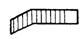 |
140 |
4 |
200 |
60 |
3 |
20 |
2.30 |
|
2 |
Торцовая платформа
шириной в 2 шпалы |
|
300 |
10 |
350 |
160 |
— |
25—30 |
3.30 |
|
3 |
Боковая
платформа длиной в 4 шпалы со сплошным съездом,
собранным перпендикулярно железнодорожному пути |
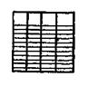 |
416 |
8 |
750 |
96 |
8 |
25—30 |
4.30 |
|
4 |
Боковая
платформа длиной в 5 шпал со сплошным съездом, собранным перпендикулярно железнодорожному пути |
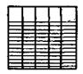 |
520 |
10 |
950 |
120 |
10 |
25—30 |
5.00 |
|
5 |
Боковая платформа длиной
в 3 шпалы с одним сплошным съездом, собранным вдоль железнодорожного пути |
|
300 |
8 |
400 |
100 |
6 |
25—30 |
3.30 |
|
6 |
Боковая платформа длиной
в 4 шпалы с одним сплошным съездом, собранным
под углом 30° к железнодорожному пути |
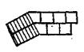 |
310 |
15 |
250 |
180 |
6 |
25—30 |
3.30 |
|
7 |
Боковая платформа длиной
в 4 шпалы с двумя сплошными съездами, собранными под углом
30° к железнодорожному пути |
|
420 |
25 |
300 |
320 |
12 |
25—30 |
5.00 |
|
8 |
Боковая аппарель длиной
в 4 шпалы |
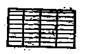 |
204 |
8 |
384 |
64 |
8 |
25—30 |
3.00 |
|
9 |
Боковая аппарель длиной
в 5 шпал |
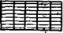 |
255 |
10 |
480 |
80 |
10 |
25—30 |
3.30 |
3. НОРМЫ ОБЕСПЕЧЕНИЯ ВОИНСКОГО
ПОГРУЗОЧНО-ВЫГРУЗОЧНОГО МЕСТА
ПРИСПОСОБЛЕНИЯМИ, МАТЕРИАЛАМИ
И ИНСТРУМЕНТАМИ
|
№ по пор. |
Наименование |
Количество, шт. |
|
|
Воинская платформа |
Воинская площадка |
||
|
1 |
Переходные
мостки |
30 |
40 |
|
2 |
Рельсы
длиной 7—8 м |
— |
12 |
|
3 |
Шпалы |
— |
344 |
|
4 |
Строительные
скобы |
— |
584 |
|
5 |
Костыли |
— |
124 |
|
6 |
Колья
длиной |
— |
8 |
|
7 |
Ломы
лапчатые |
— |
3 |
|
8 |
Лопаты
деревянные |
— |
4 |
|
9 |
Лопаты
железные |
— |
2 |
|
10 |
Костыльный
молоток |
— |
1 |
|
11 |
Пила
двуручная |
— |
1 |
|
12 |
Топоры |
— |
2 |
Примечания:
1. Нормы
материалов на воинской площадке приведены из расчета установки торцовой
платформы шириной в одну шпалу и боковой аппарели из рельсов и шпал длиной в 4
шпалы. При установке погрузочно-выгрузочных устройств других типов нормы
материалов по указанию начальника железной дороги и начальника военных
сообщений на железной дороге могут быть изменены.
2, Указанные
приспособления, материалы и инструменты сосредоточиваются на
погрузочно-выгрузочных местах на период погрузки (выгрузки).
4.
МОРСКИЕ ПЛАВУЧИЕ ПРИЧАЛЫ
|
Основные характеристики |
Типы плавучих причалов |
|||
|
ПРП-52М (ПРП-52) |
АМ-61М (ПМ-61) |
ПЖ-61 |
ПЖТ-66 |
|
|
Длина,
м |
93,8 |
108,9 |
108,8 |
151,9 |
|
Ширина,
м |
8,2 |
8,2 |
9.0 |
13,5 |
|
Осадка,
м |
0,6 |
0,6 |
1,3 |
2 |
|
Допускаемая
нагрузка: равномерно распределенная,
т/м2 |
0,7 |
0,7 |
0,5 |
0,7 |
|
гусеничная,
т |
60 |
60 |
60 |
80 |
|
колесная
на ось, т |
7,2 |
40 |
26,5 |
36,2 |
5.
ТИПОВЫЕ РАЗБОРНЫЕ ПЕРЕГРУЗОЧНЫЕ И
ПЕРЕХОДНЫЕ МОСТКИ
|
Основные характеристики |
Разборные перегрузочные мостки |
Трехсекционный
переходной мосток (см. рис. 11.9) |
||||||
|
Днепровского
бассейна (проект 564) |
Днепровского
бассейна (проект 811) |
Московского
бассейна |
Волжского
бассейна (проект 657) |
Амурского
бассейна |
Среднеазиатского
бассейна |
Дунайского
бассейна |
||
|
Основные элементы |
|
7 балок, брусья настила |
|
|
8 балок, брусья настила |
3 трапа |
||
|
Длина, м |
7 |
8 |
7 |
9 |
7 |
6 |
7 |
2,4 |
|
Ширина габаритная, м |
3,9 |
4,0 |
4,0 |
3,8 |
3,7 |
3,8 |
4,0 |
3,9 |
|
Ширина проезжей
части, м |
3,6 |
3,8 |
3,6 |
3,6 |
3,6 |
3,6 |
3,8 |
3,9 |
|
Масса комплекта
мостка, т |
4.7 |
5,7 |
4,6 |
5,2 |
3,8 |
4,3 |
4,7 |
0,6 |
|
Масса наиболее
тяжелого элемента, кг |
312 |
448 |
278 |
306 |
390 |
260 |
195 |
190 |
|
Допускаемая нагрузка, т,
при: |
|
|
|
|
|
|
|
|
|
8 балках |
— |
— |
— |
— |
— |
— |
60 |
— |
|
7 балках |
60 |
60 |
60 |
36 |
60 |
60 |
— |
— |
|
5 балках |
35 |
40 |
35 |
24 |
35 |
— |
— |
— |
|
3 балках |
15 |
20 |
15 |
10 |
15 |
15 |
— |
60 |
|
Состав команды, чел. |
15 |
20 |
15 |
15 |
10—15 |
10—15 |
15 |
6—8 |
|
Время сборки, ч |
0,7 |
1 |
0,7 |
0,8 |
0,7 |
0,7 |
0,8 |
0,3 |
|
Количество автомобилей ЗИЛ- 157, потребное для перевозки одного комплекта мостка |
2 |
2 |
2 |
2 и прицеп |
1 |
1 |
2 |
1 |
Разборный
перегрузочный мосток (см. рис. 10) предназначается для погрузки (выгрузки) на
речные суда гусеничных и колесных машин. Допустимые нагрузки на перегрузочный
мосток зависят от типа мостка и варианта установки его балок.
Применяются три
варианта установки балок при сборке мостка:
|
Количество балок |
Допустимая нагрузка , т |
Схема установки балок (вид с торца) |
|
|
гусеничных машин |
колесных машин на ось |
||
|
7 |
60 |
11 |
1 2 3
4 5 6 7 |
|
5 |
35 |
8 |
|
|
3 |
15 |
4,5 |
|
Переходной мосток (см. рис. 11.9) используется
при разной высоте причала и судна для перехода боевой техники с временного
причала на судно (и обратно). Применяются специальные металлические переходные
мостки (разность уровней до 0,7—0,8 м) или мостки и трамплины, изготовленные из
бревен и других подручных материалов.
Рис. 11.9. Трехсекционный
переходной мосток
6. КОЛЕЙНЫЕ МЕХАНИЗИРОВАННЫЕ МОСТЫ
И МОСТОУКЛАДЧИКИ
|
№ по пор. |
Основные характеристики |
Тяжелый механизированный мост (ТЛШ) |
Мостоукладчик танковый универсальный (МТУ, МТУ-20, МТ-55) |
|
1 |
Состав комплекта |
Четыре машины с мостовыми блоками
(один блок промежуточной опоры не имеет) |
Одна
машина с мостом |
|
2 |
Грузоподъемность, т |
60 |
50 |
|
3 |
Длина одного мостового блока, м |
10,5 |
12,2; 20 |
|
4 |
Ширина колеи, м |
1,5 |
1,2 |
|
5 |
Ширина межколейного просвета, м |
0.8 |
0,8 |
|
6 |
Пределы изменения опоры по высоте, м |
1,7—3,2 |
— |
|
7 |
Максимально возможное
удаление стоечного судна, м |
40 |
11; 18 |
Мостоукладчики и
механизированные мосты
устанавливаются по схемам:
— для погрузки
(выгрузки) вооружения и военной техники непосредственно на транспортное судно;
— для погрузки
(выгрузки) вооружения и военной техники через стоечное судно (плавучий причал)
у приглубокого берега;
— для погрузки
(выгрузки) вооружения и военной техники через стоечное судно (плавучий причал) у
мелководного берега.
Один блок
механизированных мостов может быть использован в качестве временного причала
при скорости течения реки до 0,4 м/с.
7
ПОГРУЗОЧНО-ВЫГРУЗОЧНЫИ
ИНВЕНТАРЬ, ИСПОЛЬЗУЕМЫЙ ПРИ ПОГРУЗКЕ ТЕХНИКИ НА СУДА
|
№ по пор. |
Инвентарь |
Назначение |
Способ застропки |
Допустимая максимальная масса техники, т |
|
1 |
Строп |
Для застропки
техники всех видов |
За крюки,
под раму, под гусеницы |
60 |
|
2 |
Сетка |
Для
застропки автомобилей, артиллерийских орудий
и другой легкой колесной техники |
Под колеса |
6 |
|
3 |
Траверсы |
Для
застропки автомобилей |
Под раму |
20 |
|
4 |
Универсальные колесные
захваты |
Для застропки
колесной техники |
Под колеса |
25 |
|
5 |
Подвеска |
Для подвешивания сеток, рам, универсальных площадок |
— |
С гаками — до 6 т, со скобами
— до 10 т |
|
6 |
Распорка |
Для
предохранения техники от сжатия
с боков |
— |
— |
|
7 |
Рама |
Для
подвешивания стропов и предохранения техники от сжатия с боков |
— |
15 |
|
8 |
Балансир |
Используется
при погрузке двумя
кранами (стрелами) |
— |
До 20 |
8. ХАРАКТЕРИСТИКА
СТРОПОВ, ИСПОЛЬЗУЕМЫХ ДЛЯ ПОГРУЗКИ
ТЕХНИКИ
|
№ по пор. |
Виды техники |
Масса, т |
Количество и длина стропов |
Диаметр стропа, мм |
|
1 |
Средние танки,
техника на их базе
и другие машины |
30—40 |
2 по |
30—36 |
|
2 |
Тягачи и другие машины |
15—30 |
2 по |
26—30 |
|
3 |
Бронетранспортеры и специальные машины |
10—15 |
2 по |
21—26 |
|
4 |
Грузовые автомобили |
5—10 |
Один |
15,5—21 |
|
5 |
Артиллерийские орудия, грузовые и легковые
автомобили |
1—5 |
Один 12 м
и 2 по |
10,5—15,5 |
9. ХАРАКТЕРИСТИКА
АЭРОДРОМНЫХ СРЕДСТВ НАЗЕМНОЙ МЕХАНИЗАЦИИ ПОГРУЗКИ (ВЫГРУЗКИ) ГРУЗОВ В БАГАЖНЫЕ
(ГРУЗОВЫЕ) ПОМЕЩЕНИЯ ПАССАЖИРСКИХ САМОЛЕТОВ
а) Автомашины с подъемным кузовом (АПК)
Предназначаются
для перевозки грузов по аэродрому и подъема их на требуемую высоту для
загрузки в багажные (грузовые) помещения самолетов.
АПК-10 АПК-12 АПК-К
Автомашины
. . .
. . . .
ЗИЛ-130Г ГАЗ-53-А ЗИЛ-130Г
Габаритные размеры, мм:
длина
. . .
. . .
. . 8150 7190 9000
ширина
. . .
. . .
. . 2600 2380 2500
высота
. . .
. . .
. . 3350 2510 2850
Высота
платформы от
уровня земли, мм .
. . . . 1680 1390
1680
Максимальная
высота
подъема платформы, мм . . 4100 3720
3500
Грузоподъемность, кг . .
. 5100 3000 5100
Время
подъема платформы
на максимальную высоту, с . 25 25 25
Время опускания платформы
с грузом, с
. . .
. . .
. . 30 30
30
б) Автолифты
Предназначаются для перевозки по аэродрому
бортпитания и других грузов, а также для их подъема на требуемую высоту для
загрузки в самолеты.
АЛ-З АЛ-ЗА
Автомобиль
. . .
. . .
. . .
. . .
. КАЗ-608 ЗИЛ-130Г
Габаритные
размеры в транспортном
положении, мм:
длина
. . .
. . .
. . .
. . .
. . . 7950 8650
ширина
. . .
. . . .
. . . . .
. . 2450
2450
высота
. . .
. . .
. . .
. . .
. . . 3400
3580
Размеры кузова
(внутренние),
мм:
длина .
. . .
. . .
. . .
. . .
. . . 4440 4440
ширина .
. . .
. . .
. . .
. . .
. . 2340 2340
высота .
. . .
. . .
. . .
. . .
. . 1835 1800
Грузоподъемность,
кг .
. . .
. . .
. . . 3000 2500
Диапазон высот
загрузки с передней
площадки, мм .
. . .
. . .
. . .
. . 2600—4200 2500—4000
Максимальная
нагрузка:
на переднюю
площадку, кг .
. . .
. 300 300
на заднюю
площадку, кг . .
. . . . . . 300 300
Время подъема кузова на максимальную
высоту, с .
. . .
. . .
. . .
. . .
. . . 45 45
в) Автотранспортер универсальный АТ-6
Предназначен для
погрузки и разгрузки грузов через грузовые люки самолетов из кузовов автомашин
и других транспортных средств. Смонтирован на шасси УАЗ-452Д.
Максимально допустимая
скорость движения, км/ч . .
. . . . 40
Максимальная
высота погрузки или выгрузки, мм:
спереди .
. . .
. . .
. . .
. . .
. . .
. . .
. . .
. . 4100
сзади .
. . .
. . .
. . .
. . .
. . .
. . .
. . .
. . . 1700
Максимальный угол
подъема транспорта . .
. . . . .
. . .
. 22°
Допустимая общая
нагрузка полотна ленты, кг . .
. . . . .
. . не более 400
Наибольшая
скорость ленты транспорта, м/с . .
. . . . .
. . . 1,0
Время установки в
рабочее положение, с . .
. . . . .
. . .
. . не более 60
Время складывания
в транспортное положение, с .
. . .
. . . . 30
К ст. 50, 58, 219 Наставления
ПЛАН ПОГРУЗКИ
воинского эшелона №________________
(вариант)
Порядок заполнения
Схема заполняется начальником воинского эшелона совместно с
военным комендантом. В прямоугольниках проставляется наименование вагонов
(пасс — пассажирский, лд — людской, изо — вагон-изолятор, кх — вагон-кухня, кр
— крытый под груз и вагон-продсклад, пв — полувагон, ледн — изотермический, цс
— цистерна), а под прямоугольниками — наименование вооружения или военной
техники (груза). Сцепы обозначаются путем соединения двух (или нескольких)
прямоугольников двумя черточками. Вместо действительного наименования
секретного вооружения или военной техники проставляется их несекретное
наименование. На схеме показывается организация связи, противовоздушной
обороны, охраны воинского эшелона в пути и др.
II. СВЕДЕНИЯ О
ПОГРУЗКЕ ВОИНСКОГО ЭШЕЛОНА
1. Место погрузки
___________________________________
(станция,
путь)
2. Начало
погрузки___________________________________
(время и дата)
Конец погрузки
___________________________________
(время и дата)
3. Отправление
поезда с воинским эшелоном ____________
________________________________________________________
(время, дата и номер
поезда)
4. Для крепления
вооружения и военной техники воинского эшелона на подвижном составе предоставляет:
— воинская часть:
шпоры «Ш-137»— 2 компл., вкладыши продольные — 4 шт., типовые бруски: упорные
— 64 шт., боковые и направляющие — 32 шт., проволоку—
— железная дорога:
упорные, боковые и направляющие бруски — 310 шт., распределительные прокладки—
5. Указания начальнику
воинского эшелона: Для установки торцовой аппарели выслать на станцию к 18.00 25 апреля 19__г. команду в количестве 40 чел.
ВОЕННЫЙ КОМЕНДАНТ
ЖЕЛЕЗНОДОРОЖНОГО
УЧАСТКА И СТАНЦИИ _________________
________________________________
(воинское звание и подпись)
«___» ___________ 19__ г.
III. ПОГРУЗОЧНО-ВЫГРУЗОЧНЫЕ КОМАНДЫ
|
Порядковые номера вагонов |
Начальник команды (воинское звание, фамилия) |
Состав
команды, чел. |
От какого подразделения назначаются |
|
1-11 |
Сержант Зимин |
12 |
Подразделение 1 |
|
12—17 |
Ефрейтор Козлов |
6 |
» |
|
18—28 |
Ст. сержант Новиков |
12 |
Подразделение 2 |
IV. СУТОЧНЫЙ НАРЯД НА ПЕРВЫЕ СУТКИ ПУТИ:
—
дежурный по воинскому эшелону __________________
____________________________
(воинское звание и
фамилия) ;
— караул от подразделения 2 в составе 11 человек
на 3 поста.
Начальник воинского эшелона ______________________________
(воинское звание и подпись)
«___» ____________ 19__ г.
Примечания: 1.
План погрузки воинского эшелона составляется в одном экземпляре и сдается начальником
воинского эшелона по окончании перевозки в штаб воинской части.
2. При перевозке воинским эшелоном команды без
вооружения и военной техники план погрузки воинского эшелона может не
составляться. В этом случае производится расчет личного состава по вагонам.
3. Заполнение настоящего варианта плана погрузки
воинского эшелона условное.
К ст. 50, 74 Наставления
«____» _________________________19___г.
ОПИСЬ №____
СЪЕМНОГО ВОИНСКОГО ОБОРУДОВАНИЯ
а) предоставленного отправителю
для перевозки людей
в крытых грузовых
вагонах. Дорожная ведомость № _____;
б) отправленного по
регулировке: в отдельных
вагонах по наряду № ____ ЦДВ, Д, (ДВ), НОДН (ненужное зачеркнуть), пересылочная ведомость ГУ-33 №_____ назначением на станцию _______________
_____________________________________________________________ ж. д.
в адрес
______________________________________________________________________________________
|
№ по пор. |
Номера
загонов |
Количество предметов (деталей) съемного воинского
оборудования |
Примечание |
||||||||||||||
|
доски |
зубчатки
ружейные |
печи |
комплекты
дымовых труб |
ящики
для топлива |
кочерги |
совки |
листы
для заделки люка |
поддонные
листы |
рамы
оконные |
стремянки |
ведра
пожарные |
фонари |
лестницы |
метлы |
|||
|
1 |
2 |
а |
б |
в |
г |
д |
е |
ж |
з |
и |
к |
л |
м |
н |
о |
п |
18 |
|
3 |
4 |
5 |
6 |
7 |
8 |
9 |
10 |
11 |
12 |
13 |
14 |
15 |
16 |
17 |
|||
|
1 |
|
|
|
|
|
|
|
|
|
|
|
|
|
|
|
|
|
|
2 |
|
|
|
|
|
|
|
|
|
|
|
|
|
|
|
|
|
|
3 |
|
|
|
|
|
|
|
|
|
|
|
|
|
|
|
|
|
|
4 |
|
|
|
|
|
|
|
|
|
|
|
|
|
|
|
|
|
|
5 |
|
|
|
|
|
|
|
|
|
|
|
|
|
|
|
|
|
|
и т. д. |
|
|
|
|
|
|
|
|
|
|
|
|
|
|
|
|
|
|
до 20 |
|
|
|
|
|
|
|
|
|
|
|
|
|
|
|
|
|
|
Итого… |
|
|
|
|
|
|
|
|
|
|
|
|
|
|
|
|
|
|
|
|
|
|
|
|
|
|
|
|
|
|
|
|
|
|
|
|
Сдал: Представитель станции погрузки
________________________________________________________
Принял: Начальник воинского эшелона (караула)
_______________________________________________
Отметка о приеме СВО на станции
выгрузки____________________________________________________
Примечание. Настоящая опись составляется в соответствии с § 5.1—5.4, 9.7.1—9.8.1 ИСВО-1;
§ 3.1 ИСВО-2.
К ст. 50, 73 Наставления
НОРМЫ ВРЕМЕНИ
НА ПОГРУЗКУ (ВЫГРУЗКУ,
ПЕРЕГРУЗКУ) ВОИНСКОГО ЭШЕЛОНА НА
ЖЕЛЕЗНОДОРОЖНЫЙ ПОДВИЖНОЙ СОСТАВ
|
№ по пор. |
Воинские эшелоны |
Время, ч. Мин |
||||
|
на погрузку при использовании |
на выгрузку при использовании |
на перегрузку |
||||
|
торцовой платформы (аппарели) |
боковой платформы (аппарели) |
торцовой платформы (аппарели) |
боковой платформы (аппарели) |
|||
|
1 |
С гусеничными машинами на табельном креплении,
не требующими приведения в
габарит погрузки после размещения на железнодорожном подвижном
составе, при совмещенной погрузке с колесными машинами |
2.40 |
3.20 |
2.00 |
2.00 |
4.15 |
|
2 |
С гусеничными
машинами, не требующими
приведения в габарит
погрузки после размещения на
железнодорожном подвижном составе |
3.20 |
4.00 |
2.30 |
2.45 |
5.00 |
|
3 |
С артиллерией (колесные тягачи) |
2.30 |
3.00 |
1.45 |
2.00 |
3.45 |
|
4 |
С артиллерией (гусеничные тягачи) |
3.20 |
4.00 |
2.30 |
2.45 |
5.00 |
|
5 |
С колесными
машинами общей массой
каждой единицы до 24 т включительно, не
требующими приведения в
габарит погрузки после размещения на
железнодорожном подвижном
составе |
3.00 |
3.30 |
2.20 |
2.40 |
4.40 |
|
6 |
С колесными
машинами общей массой
каждой единицы более 24
т, не требующими приведения в
габарит погрузки после
размещения на железнодорожном подвижном составе |
4.00 |
5.00 |
3.00 |
3.30 |
6.25 |
|
7 |
С громоздким,
длинномерным вооружением,
военной техникой, а
также с вооружением и военной
техникой, требующими приведения в
габарит погрузки после размещения на железнодорожном подвижном составе |
5.00 |
6.00 |
4.00 |
4.30 |
7.50 |
|
8 |
С вооружением,
военной техникой и имуществом,
требующими применения кранов
при погрузке (выгрузке, перегрузке) |
8.00 |
10.00 |
6.30 |
8.30 |
13.50 |
Примечания: 1. В нормы времени входит время на
укладку и переноску переходных мостков, размещение, приведение в габарит и
крепление (снятие крепления) вооружения и военной техники на железнодорожном
подвижном составе и их маскировку.
В указанные нормы не входит время на установку
сборно-разборных погрузочно-выгрузочных устройств, подачу и уборку
железнодорожного подвижного состава.
Крепление вооружения и военной техники,
пломбирование стопорных устройств и люков производятся одновременно с погрузкой
и установлением телефонной связи.
2. Указанные нормы времени рассчитаны для
погрузки (выгрузки, перегрузки) одного воинского эшелона при въезде техники с
одной точки на подвижной состав, состоящий из 30 вагонов.
3. Приведенные нормы времени уменьшаются:
— при
креплении вооружения и
военной техники табельными приспособлениями (без проволочных растяжек,
пп. 2—6 настоящего Приложения) — на 40%;
— при въезде с двух или трех точек боковой
платформы — соответственно на 15 или 25%.
4. Приведенные нормы времени увеличиваются:
— при погрузке (выгрузке, перегрузке) в темное
время суток с соблюдением правил светомаскировки, а также при работе личного
состава воинского эшелона в противогазах — на 25%;
— при длине поезда от 31 до 40 вагонов — на 15%,
а при длине поезда от 41 до 50 вагонов — на 25%.
НАЧАЛЬНИК ВОЕННЫХ СООБЩЕНИИ
ВООРУЖЕННЫХ СИЛ СССР
ГЕНЕРАЛ-ПОЛКОВНИК КЛЁМИН
К ст. 55, 68 Наставления
АКТ
НА ПЕРЕГРУЗКУ НЕГАБАРИТНОЙ ТЕХНИКИ
Настоящий акт составлен комиссией в составе: начальника
станции ________________________________
(фамилия,
имя, отчество)
(название станции, участка и железной дороги не указывается),
военного коменданта ___________________,
(фамилия, инициалы)
начальника
воинского эшелона (представителя отправителя воинского транспорта)
_____________________
(фамилия, инициалы)
в том, что при погрузке воинского эшелона (транспорта) № ______
техника, установленная на платформах, имеет негабаритность: — платформа №
___________ — негабаритность
_____ степени;
— платформа № ___________ —
негабаритность _____ степени.
Начальник станции _______________________
(фамилия
и подпись)
Военный комендант ————————————
(фамилия
и подпись)
Начальник воинского эшелона
(представитель отправителя
воинского транспорта)
_____________________________________
(фамилия
я подпись)
Примечания: 1. Название станция, участка и железной дороги в акте
не указывается.
2. Акт составляется в трех экземплярах, из которых первый
прикрепляется снаружи к конверту дорожной ведомости, второй — выдается
военному коменданту, третий — остается в делах станции погрузки.
3. Акт печатью не заверяется.
К
ст. 64, 192, 218 Наставления
МАРШРУТНЫЙ ЛИСТ ВОИНСКОГО
ЭШЕЛОНА № ___________
1. Условное наименование войсковой части (подразделения)
______________________________________
2. Должностные лица воинского эшелона:
Начальник воинского эшелона _______________________________________________________________
(воинское
звание, фамилия, инициалы)
Заместитель начальника воинского эшелона по политической
части ________________________________
(воинское
звание, фамилия, инициалы)
Помощник
начальника воинского эшелона по боевому обеспечению
______________________________ (воинское звание, фамилия, инициалы)
Помощник начальника воинского эшелона по снабжению
________________________________________
(воинское
звание, фамилия, инициалы)
Начальник связи воинского эшелона
__________________________________________________________
(воинское звание, фамилия, инициалы)
Врач (фельдшер)
воинского звания ____________________________________________________________
(воинское звание, фамилия, инициалы)
3. Численность личного
состава воинского эшелона
_____________________________________________________________________________________________
(офицеров, прапорщиков,
_____________________________________________________________________________________________
мичманов, старшин, сержантов, солдат)
4. Санитарное
состояние воинского эшелона перед погрузкой (когда и какие
санитарно-гигиенические и противоэпидемические мероприятия проведены, процент
охвата личного состава) ______________________ _____________________________________________________________________________________________
5. Обеспеченность
воинского эшелона продовольствием на день погрузки __________________________
_____________________________________________________________________________________________
6. Условия
размещения и крепления вооружения и военной техники (запись производит
начальник воинского эшелона и расписывается).
М. П. Начальник
штаба воинской части
____________________________________
(воинское
звание, подпись)
«_____»
____________________ 19___г.
Результаты проверок воинского эшелона
и другие записи и отметки
|
Дата, время |
Станция (порт) проверки воинского
эшелона |
Состояние воинской дисциплины
личного состава. Виды инструктажа и материального обеспечения, принятые заявки.
Подписи должностных лиц |
|
|
|
|
Маршрутный лист
проверил
Начальник штаба
воинской части
____________________________________________
(воинское звание, подпись)
Основные права и обязанности начальника
воинского эшелона
1. Начальник
воинского эшелона имеет право:
— бесплатно
пользоваться средствами связи органов транспорта (телеграфом, телефоном,
радио) для ведения переговоров по вопросам, касающимся перевозки и обеспечения
воинского эшелона, решать вопросы, касающиеся перевозки воинского эшелона, с
военным комендантом на путях сообщения, а там, где его нет, — с начальником
станции (порта);
— давать заявки на
все виды материального и медицинского обеспечения через военных комендантов на
путях сообщения в письменной форме с расчетом получения их в пунктах
обеспечения не позднее чем за 6 ч до прибытия туда воинского эшелона.
2. Начальник
воинского эшелона подчиняется командиру части или лицу, формировавшему
воинский эшелон, и военным комендантам на путях сообщения.
Он обязан:
— произвести организованно
и в установленный срок погрузку (перегрузку и выгрузку) воинского эшелона;
— перед погрузкой
принять, а после выгрузки сдать работникам железной дороги съемное воинское
оборудование;
— обеспечить
своевременность оформления перевозочных и транспортных документов на воинский
эшелон;
— организовать
контроль за креплением вооружения и военной техники, внутреннюю и караульную
службы, а также связь в воинском эшелоне;
— предъявлять маршрутный
лист военным комендантам на путях сообщения;
— следить за
соблюдением личным составом правил перевозок и мер безопасности, обеспечить
проведение противопожарных мероприятий;
— о всех
происшествиях и состоянии воинского эшелона докладывать в пути следования
военным комендантам на путях сообщения.
3. Для несения
внутренней и караульной служб в воинском эшелоне назначаются;
— дежурный по
воинскому эшелону и
его помощник;
— дежурные по
ротам;
— дневальные по
вагонам;
— дежурное
подразделение;
— дежурный
сигналист;
— караул.
К ст. 90 Наставления
НОРМЫ ВРЕМЕНИ НА
ПОДГОТОВКУ ГРУЗОВЫХ ПОМЕЩЕНИЙ
СУДОВ
ДЛЯ ПЕРЕВОЗКИ ЛИЧНОГО СОСТАВА ВОИНСКОГО ЭШЕЛОНА
(в часах)
|
№ по пор. |
Характер работы |
Вместимость помещений, чел. |
||
|
200 |
300 |
400 |
||
|
1 |
Сухая очистка |
1 |
1,5 |
2 |
|
2 |
Влажная очистка (с протиркой опилками) |
1,5 |
2 |
3 |
|
3 |
Мойка и сушка летом (с 1 апреля до 1 октября) |
4 |
5 |
6 |
|
4 |
Мойка и сушка зимой (с 1
октября до 1 апреля) |
6 |
8 |
10 |
|
5 |
Дератизация
газовая: обработка в летних условиях |
|
|
|
|
6 |
Дезинфекция и
дератизация химическим и
механическим способами: одноразовая влажная обработка |
|
|
|
Примечания: 1.
Перечень выполняемых работ определяется в каждом отдельном случае в зависимости
от ранее перевезенного судном груза.
2. Подготовка
грузовых помещений может осуществляться и при переходе судна к месту погрузки
воинского эшелона.
К ст. 90 Наставления
НОРМЫ ВРЕМЕНИ НА ОБОРУДОВАНИЕ МОРСКИХ СУДОВ ДЛЯ ПЕРЕВОЗКИ ВОИНСКОГО
ЭШЕЛОНА
(в часах)
|
Характер работы |
В
заводских условиях |
Силами и средствами порта |
Личным составом воинского
эшелона под руководством специалистов завода (порта) |
|
Монтаж
съемного воинского
оборудования, оборудование
верхней палубы и грузовых
помещений для размещения разрядных, опасных грузов, тяжелой гусеничной
техники и крепления ее |
24/30 |
30/36 |
36/48 |
|
Оборудование судовых помещений для
размещения личного состава без
установки съемного воинского оборудования, оборудование верхней палубы и грузовых
помещений для размещения разрядных, опасных грузов, тяжелой гусеничной техники и
крепления ее |
18/24 |
24/30 |
30/36 |
Примечания: 1. Нормы времени даны из расчета перевозки на
судне, оборудованном для размещения 400 чел. и 70 единиц вооружения и военной
техники.
2. Оборудование судовых помещений без установки съемного
воинского оборудования допускается при продолжительности перевозки менее двух
суток.
3. Дробью показаны нормы времени на оборудование судов: в
числителе – летом, в знаменателе – зимой.
К. ст. 102, 104,
114, 219, 259 Наставления
ПЛАН ОБЕСПЕЧЕНИЯ ПОГРУЗКИ
(ВЫГРУЗКИ)
воинского эшелона № ______
на судно___________________________
(наименование)
(вариант)
1. Место погрузки (выгрузки) _______________________________________________
(порт,
причал №______, рейд)
2. Начало погрузки (выгрузки)
______________ Окончание погрузки
(выгрузки) ————————
(дата,
время) (дата,
время)
3. Отправление судна______________________
(дата,
время)
4. На погрузку
(выгрузку) выделяются:
|
№
по пор. |
Специалисты и рабочая сила (отдельно по сменам) |
Погрузочно-выгрузочный инвентарь и перегрузочные
приспособления |
Коли-чество, шт. |
Ответственный за выделение |
Крепежный и сепара-ционный материал |
Коли-чество |
Ответственный за выделение |
|||
|
портовые
специалисты и рабочие, чел. |
судовые
специалисты и лебедчики, чел. |
погрузочно-выгрузочные команды воинского эшелона |
||||||||
|
воинское звание и фамилия начальника команды |
личный
состав, чел. |
|||||||||
|
|
|
|
|
|
1-я смена |
|
|
|
|
|
|
|
2 |
— |
Ст. лейтенант МИХАЙЛОВ А. В. |
12 |
Сетки
грузовые пеньковые |
4 |
Нач. склада №9 ПЕТРОВ В. И. |
Лес |
|
Зам. начальника порта АЛЕКСЕЕВ И. А. |
|
|
2 |
— |
Лейтенант ИВАНОВ И. М. |
10 |
Универсальные колесные захваты 25 т |
1 компл. |
|
Лес |
|
|
|
|
— |
3 |
Капитан
АЛОВ Н. И. |
14 |
Стропы |
2×18 м 4×6 м |
|
Лес |
|
|
|
|
2 |
— |
Ст.
лейтенант ПЕТРОВ А. А. |
10 |
Универсальные колесные захваты 25 т |
1 компл. |
|
Лес |
|
|
|
|
|
|
|
|
2-я смена |
|
|
|
|
|
|
|
2 |
— |
Лейтенант КОПЫЛОВ К. К. |
12 |
Парноколесный
захват |
1 компл. |
|
— |
— |
|
Примечание. Потребность в крепежных и сепарационных материалах
определяется для каждого грузового хода из расчета погрузки всего вооружения и
военной техники и иных материальных средств, размещаемых в судовых помещениях.
Общее количество крепежных и сепарационных материалов указывается в графах 9 и
10 для каждого грузового хода только 1-й смены.
Приложение. Грузовой план
размещения воинского эшелона на
судне.
Военный
комендант водного Начальник
порта _________________________________________________________________
участка и порта _______________________________________________ (подпись)
(воинское
звание и подпись)
«____»
____________19__г. «____»
____________19__г.
Начальник воинского эшелона __________________________________ Капитан судна
___________________________________________________________________
(воинское
звание и подпись)
(подпись)
«____»
____________19__г. «____»
____________19__г.
Приложение
к плану обеспечения
погрузки (выгрузки)
Осадка, м: носом - Всего:
личного состава – 250 чел.
кормой
- техники
– 122 ед. 1417 т.
грузов – 250 т
Военный комендант
водного
участка и порта Начальник
порта Начальник воинского эшелона
(воинское звание,
подпись) (подпись) (воинское звание, подпись)
«___»___________19___г. «___»___________19___г. «___»___________19___г.
«Согласовано»
Капитан судна
(подпись)
«___»___________19___г.
К ст. 106, 259 Наставления
ОПИСЬ
СЪЕМНОГО ВОИНСКОГО ОБОРУДОВАНИЯ И
ИНВЕНТАРЯ СУДНА «________»
|
№
по пор. |
Наименование помещений судна |
Спасательные нагрудники (жилеты), шт. |
Пожарный
инвентарь, компл. |
Грелки
электрические, шт. |
Бачки
питьевые, шт. |
Кружки,
шт. |
Лежаки,
шт. |
|
|
Примечание |
|
1 |
2 |
3 |
4 |
5 |
6 |
7 |
8 |
9 |
10 |
11 |
|
|
|
|
|
|
|
|
|
|
|
|
Принял: Начальник воинского эшелона Принял:
Капитан судна _______________
(подпись)
__________________________________ «___» ______________ 19__г.
(воинское звание и подпись)
«___»
______________ 19__г. Сдал: Начальник
воинского эшелона
Сдал: Капитан судна ________________ ___________________________________
(подпись)
(воинское
звание и подпись)
«___»
______________ 19__г. «___» ______________ 19__г.
К ст. 107 Наставления
НОРМЫ ВРЕМЕНИ НА
ПОГРУЗКУ (ВЫГРУЗКУ) ВООРУЖЕНИЯ
И ВОЕННОЙ
ТЕХНИКИ НА МОРСКИЕ И РЕЧНЫЕ СУДА
(табл. 1—3)
Таблица 1
Погрузка (выгрузка) вооружения и военной техники своим ходом (в
минутах)
|
№
по пор. |
Вооружение и военная техника |
На морские суда типа
„Ро-Ро" |
На речные суда |
На десантные корабли |
|||
|
погрузка |
выгрузка |
погрузка |
выгрузка |
погрузка |
выгрузка |
||
|
1 |
Танки |
3 |
1 |
4 |
3 |
4 |
2 |
|
2 |
Пусковые
установки |
4 |
2 |
5 |
4 |
5 |
3 |
|
3 |
Артиллерийские
орудия с тягачом |
3 |
1 |
6 |
5 |
4 |
3 |
|
4 |
Артиллерийские
тягачи, тракторы |
3 |
1 |
4 |
2 |
4 |
2 |
|
5 |
Автомобили
и тягачи с прицепом |
3 |
1 |
6 |
3 |
4 |
3 |
|
6 |
Автомобили
грузовые специальные |
3 |
1 |
4 |
2 |
3 |
2 |
|
7 |
Бронетранспортеры,
автобусы |
2 |
1 |
4 |
2 |
3 |
1 |
|
8 |
Автомобили
бортовые груженые |
2 |
1 |
3 |
2 |
3 |
2 |
|
9 |
Автомобили
легковые |
1 |
0,5 |
2 |
1 |
2 |
1 |
Таблица 2
Погрузка (выгрузка)
вооружения и военной
техники
на морские (речные) суда
береговыми и
судовыми
кранами и стрелами
(в минутах)
|
№
по пор. |
Вооружение и военная техника |
Судовыми тяжеловесными стрелами |
Береговыми (судовыми) кранами |
|
1 |
Тяжелые танки |
25 |
- |
|
2 |
Тяжелая техника инженерных и дорожных войск (экскаваторы, бульдозеры, автогрейдеры и т. п.) |
25 |
20 |
|
3 |
Пусковые установки, боевые машины на базе танков, автомобильные краны,
спецмашины массой свыше 13 т |
20 |
15 |
|
4 |
Средние танки, ЗСУ, АТТ, МТТ, грузовые
автомобили и спецмашины массой 10 — 13 т и инженерная техника на их
базе |
18 |
12 |
|
5 |
АТС, тракторы массой свыше 10 т |
16 |
11 |
|
6 |
Грузовые автомобили, спецмашины и автобусы
массой 7 — 10 т |
15 |
10 |
|
7 |
Зенитные орудия, АТЛ, тракторы массой до 10
т, грузовые автомобили, спецмашины, автобусы и автоприцепы массой 4 — 6 т |
13 |
9 |
|
8 |
Бронетранспортеры, грузовые автомобили и
автоприцепы массой до 4 т |
11 |
8 |
|
9 |
Артиллерийские орудия среднего калибра,
тяжелые минометы,
микроавтобусы |
10 |
7 |
|
10 |
Артиллерийские орудия
малого калибра, ЗПУ, легкие бронетранспортеры, легковые автомобили, кухни полевые |
9 |
6 |
|
11 |
Легкие безоткатные
орудия, минометы, мотоциклы,
легкие прицепы и
другая техника массой до 1 т |
- |
4 |
Примечания: 1. Нормативное время погрузки (выгрузки) вооружения и
военной техники дано при значении коэффициента условий перегрузки (Ку),
равном 1,0.
2. Для конкретных условий грузовых работ время
погрузки (выгрузки) вооружения и военной техники определяется с учетом
коэффициента условий перегрузки (Ку), значения – которого приведены
в табл. 3.
Таблица 3
Значения коэффициента условий
перегрузки (Ку)
|
Подготовленность личного состава погрузочно-выгрузочных
команд, крановщиков и лебедочников |
Погрузка (выгрузка) в порту у причалов |
Погрузка (выгрузка) на рейде при волнении моря |
||||
|
до 2 баллов |
2—3 балла |
|||||
|
днем |
ночью |
днем |
ночью |
днем |
ночью |
|
|
Отличная |
0,8 |
0,9 |
0,9 |
1,0 |
1,2 |
1,3 |
|
Хорошая |
0,9 |
1,0 |
1,0 |
1,1 |
1,3 |
1,5 |
|
Удовлетворительная |
1,0 |
1,2 |
1,2 |
1,4 |
1,5 |
1,7 |
|
Слабая |
1,3 |
1,5 |
1,4 |
1,6 |
1,7 |
2,0 |
НАЧАЛЬНИК
ВОЕННЫХ СООБЩЕНИЙ
ВООРУЖЕННЫХ
СИЛ СССР
ГЕНЕРАЛ-ПОЛКОВНИК
КЛЕМИН
К ст. 108 Наставления
ВАРИАНТЫ ЗАСТРОПКИ ОСНОВНЫХ ВИДОВ
ВООРУЖЕНИЯ И ВОЕННОЙ ТЕХНИКИ
Рис. 23.1. Застройка танка двумя стропами длиной
|
|
Рис. 23.2. Застропка
танка четырьмя стропами длиной
Рис. 23.3. Застропка зенитной самоходной установки двумя стропами поперек гусениц
|
|
|
|
Рис. 23.4. Застропка
колесной
техники захватами
Рис. 23.5.
Застропка автомобиля двумя стропами
и траверсой
|
|
|
|
Рис.
23.6. Застропка артиллерийского
орудия:
а – сеткой и стропом;
б, в, – тремя стропами
Рис. 23.7. Застропка сидельного тягача двумя траверсами с
использованием распорки
Рис. 23.8.
Застропка автомобиля парноколесными захватами
К ст. 113
Наставления
ПРИМЕРНЫЕ НОРМЫ РАСХОДА
МАТЕРИАЛОВ ДЛЯ КРЕПЛЕНИЯ
ВООРУЖЕНИЯ
И ВОЕННОЙ ТЕХНИКИ НА СУДАХ
(рис. 24.1 —
24.3)
Рис. 24.1. Крепление
колесной машины (автомобиля):
1 – растяжка; 2 – упорный брус; 3 – доски (подкладки);
4 – продольный брус; 5
– скобы
Рис. 24.2. Крепление
артиллерийского орудия:
1 – растяжки; 2 — доски (подкладки); 3 – упорный брус;
4 – продольный брус;
5 – скобы
Рис. 24.3. Приспособления
для крепления:
1 — талреп; 2 — тросовый зажим; 3 — серьга; 4 — скоба; 5 — бруски
|
№
по пор. |
Масса вооружения и военной техники, т |
Размещение |
Расход материалов на единицу техники |
Примечание |
|||||||
|
трос диаметром масса, кг |
талрепы,
шт. |
зажимы,
шт. |
проволока диаметром масса, кг |
растяжки |
лес,
брус, доски, м3 |
гвозди кг
скобы шт. |
|||||
|
число растяжек, продольных
поперечных |
число
нитей в одной проволочной растяжке |
||||||||||
|
1 |
2 |
3 |
4 |
5 |
6 |
7 |
8 |
9 |
10 |
11 |
12 |
|
I. При морских перевозках |
|||||||||||
|
1 |
До 3 |
На
палубе |
— |
— |
— |
32/7 |
4/4 |
4 |
0,1 |
0,5/— |
|
|
В
трюме |
— |
— |
— |
18/4 |
4/4 |
4 |
— |
— |
|
||
|
2 |
До 5 |
На
палубе |
16/16 |
8 |
32 |
64/14 |
4/4 |
4 |
0,16 |
1/4 |
Крепление
тросом или проволокой |
|
В
трюме |
— |
— |
— |
32/7 |
4/4 |
4 |
0,1 |
1/— |
|
||
|
3 |
6—10 |
На
палубе |
20/20 |
8 |
32 |
— |
4/4 |
— |
0,3 |
1/6 |
|
|
В
трюме |
— |
— |
— |
64/14 |
4/4 |
6 |
0,25 |
1/6 |
|
||
|
4 |
11—15 |
На
палубе |
30/30 |
10 |
40 |
— |
4/6 |
— |
0,35 |
1,5/8 |
|
|
В
трюме |
20/20 |
8 |
32 |
80/18 |
4/4 |
8 |
0,3 |
1/6 |
Крепление
тросом или проволокой |
||
|
5 |
16—40 |
На
палубе |
60/60 |
14 |
56 |
— |
6/8 |
— |
0,4 |
1,5/10 |
|
|
В
трюме |
25/25 |
10 |
40 |
100/22 |
4/6 |
8—10 |
0,3 |
1,5/8 |
Крепление
тросом или проволокой |
||
|
II. При речных перевозках |
|||||||||||
|
1 |
До 5 |
На
палубе |
— |
— |
— |
32/7 |
4/4 |
4 |
0,1 |
1, 0/4 |
|
|
2 |
6—10 |
На
палубе |
— |
— |
— |
48/10 |
4/4 |
6 |
0,15 |
1, 0/6 |
|
|
3 |
11—15 |
На
палубе |
20/20 |
8 |
32 |
64/14 |
4/4 |
8 |
0,25 |
1, 0/6 |
Крепление
тросом или проволокой |
|
4 |
16—40 |
На
палубе |
25/25 |
10 |
40 |
80/18 |
4/6 |
8 |
0,3 |
1,5/8 |
Крепление
тросом или проволокой |
Примечания: 1. Схема крепления и расход материалов для вооружения
и военной техники массой более 40 т определяются инструкциями или расчетами для
каждого случая отдельно.
2. При продольном креплении техники растяжки должны располагаться
под углом не более 30° к диаметральной
плоскости судна, а при поперечном – под углом не более 30° к плоскости шпангоута (поперечной плоскости
судна).
К ст. 123 Наставления
ВРЕМЕННАЯ ТИПОВАЯ ПАРОМНАЯ
ПЕРЕПРАВА И ЕЕ КРАТКАЯ ХАРАКТЕРИСТИКА
Пропускная
способность временной паромной переправы определяется по формуле
где Р — пропускная способность переправы (ед. вооружения и военной техники/сутки);
1440
— количество
минут в сутках;
m — вместимость парома (ед. вооружения и военной техники);
п — число паромов
на переправе;
k — коэффициент,
учитывающий задержки в работе переправы, равный 0,7—0,8;
tоб — время оборота парома, мин.
Время оборота парома определяется
,
где l — расстояние между
причалами, км;
V1 —
скорость хода парома вверх по течению — 5 —
V2 — скорость хода парома
вниз по течению — 8 —
тшв (tотшв) — время швартовки
(отшвартовки) парома, мин;
tпогр
(tвыгр) — время погрузки
(выгрузки) парома, мин.
Время,
потребное на обработку паромов:
(в минутах)
|
Операция |
Количество и грузоподъемность |
|||||
|
1X300
т |
2X300
т |
1X600
т |
2X600
т |
1X1000
т |
2X1000
т |
|
|
Погрузка |
20 |
40 |
40 |
55 |
45 |
60 |
|
Выгрузка |
13 |
30 |
30 |
40 |
35 |
45 |
|
Швартовка |
3 |
6 |
5 |
8 |
7 |
10 |
|
Отшвартовка |
3 |
6 |
5 |
7 |
6 |
10 |
К ст. 132 Наставления
СПИСОК
ЛИЧНОГО СОСТАВА ВОИНСКОЙ КОМАНДЫ,
ПЕРЕВОЗИМОЙ В ВОЗДУШНОМ СУДНЕ
Тип и номер воздушного судна ____________________________________
Командир экипажа
______________________________________________
(фамилия,
инициалы)
_________________________
(дата вылета)
|
№ по пор. |
Воинское звание, фамилия и
инициалы |
Количество мест багажа |
Масса багажа, кг |
Примечание |
|
|
|
|
|
|
|
|
Всего
. .
. |
|
|
|
Начальник воинской команды
_____________________________________
(воинское
звание, фамилия)
Командир (начальник), отправляющий
личный состав ___________________________________________
(войсковая
часть, воинское
звание, фамилия, подпись)
м.п. «___»
_____________________19___г.
К ст. 132 Наставления
ОПИСЬ
ВОИНСКОГО ГРУЗА, ПЕРЕВОЗИМОГО
В ВОЗДУШНОМ СУДНЕ
Тип и номер воздушного судна
____________________________________
Командир экипажа ______________________________________________
(фамилия
и инициалы)
_________________________
(дата вылета)
|
№
по пор. |
Наименование груза |
Количество
мест |
Масса
одного места, кг |
Общая
масса груза, кг |
Примечание |
|
|
|
|
|
|
|
|
|
Всего. . . |
|
|
|
|
Груз подготовлен и удовлетворяет требованиям
авиатранспортабельности. Особые указания по перевозке груза ___________
____________________________________________________________________________________________________________________________________
Сопровождающий
груз ___________________________________________
(воинское звание, фамилия)
Командир (начальник), отправляющий груз
__________________________________________________________________
(войсковая
часть, воинское звание, фамилия,
подпись)
м.п.
Получатель груза
________________________________________________
(войсковая часть, воинское звание,
фамилия, подпись)
«___» _____________________19___г.
К ст. 155, 218 Наставления
СИГНАЛЫ
И СПЕЦИАЛЬНЫЕ УКАЗАТЕЛИ,
ПРИМЕНЯЕМЫЕ
НА ЖЕЛЕЗНОДОРОЖНОМ,
МОРСКОМ
И РЕЧНОМ ТРАНСПОРТЕ
1. СИГНАЛЫ ОСТАНОВКИ ПОЕЗДА,
СИГНАЛЫ
ТРЕВОГИ И СПЕЦИАЛЬНЫЕ УКАЗАТЕЛИ,
ПРИМЕНЯЕМЫЕ НА ЖЕЛЕЗНЫХ ДОРОГАХ
СССР
Для остановки поезда установлен сигнал «Стой»: один
красный огонь светофора или семафора; горизонтальное положение крыла семафора;
прямоугольный щит красного цвета днем и красный огонь фонаря на шесте ночью;
красный развернутый флаг или красный огонь ручного фонаря; красный огонь
горящей факел-свечи; взрыв петарды; красный огонь фонаря гидравлической
колонки или окрашенный в красный цвет и повернутый поперек ее хобот; три
коротких звука ручного свистка, духового рожка или свистка локомотива. При
отсутствии днем красного флага, а ночью ручного фонаря с красным огнем сигналы
остановки подаются: днем — движением по кругу желтого флага, руки или
какого-либо предмета, а ночью — движением по кругу фонаря с огнем любого цвета.
Сигнал «Общая тревога» подается при обнаружении на
пути неисправности, угрожающей безопасности движения, при остановке поезда в
снежном заносе, крушении поезда и в других случаях, когда требуется помощь.
Сигнал подается по схеме:
——————— - - - ——————— - - - ———————
- - -
Сигнал «Пожарная тревога» подается по схеме:
——————— -
- ——————— - - ——————— - -
Сигнал
«Воздушная тревога» подается протяжным завывающим звучанием сирен, а также
рядом коротких звуков непрерывно в течение 2—3 мин по схеме: ... ... ... ...
Сигнал «Радиоактивная опасность» или «Химическая
тревога» подается в течение 2—3 мин:
— на перегонах — свистками локомотивов (моторовагонных поездов) и автодрезин по схеме:
——————— -
——————— - ——————— - ;
—
на станциях — частыми ударами в колокол или
подвешенные металлические предметы.
Все звуковые
сигналы, обозначенные на схемах протяжными звуками, в случае подачи их ударами
производятся перезвоном, т. е. часто следуемыми один за другим ударами, а
короткие — редкими ударами по числу необходимых коротких звуков.
При наличии
железнодорожной радиотрансляционной сети оповещение о воздушной тревоге,
радиоактивной опасности или химической тревоге производится также и через эту
сеть.
Указатели
«Заражено» (рис, 28.1) на станциях и перегонах на обочине земляного полотна
устанавливаются на расстоянии не более
Рис.
28.1. Указатель
«Заражено»:
а — лицевая
сторона; б —
оборотная сторона
зараженного
радиоактивными или химическими веществами. На перегонах, кроме того, с обеих
сторон зараженного участка с правой стороны по направлению движения на
расстоянии
Перед первым по ходу поезда указателем «Заражено»
или перед местом, указанным в уведомлении, полученном от дежурного по станции,
о наличии зараженного участка (независимо от того, установлен указатель или
нет), машинист ведущего локомотива обязан подать сигнал радиоактивного
заражения (или химического нападения) и проследовать зараженный участок с
установленной скоростью.
Указатели «Заражено» ночью
должны освещаться.
2. СИГНАЛЫ ТРЕВОГ, ПРИМЕНЯЕМЫЕ НА МОРСКИХ СУДАХ
Общесудовая тревога объявляется в
случаях:
— необходимости заблаговременно подготовить судно к предотвращению
какой-либо опасности;
— взрыва на судне, возникновения пожара или обнаружения первых
признаков дыма или запаха гари;
— поступления внутрь или распространения по судну забортной воды и
в других аварийных случаях;
— необходимости обеспечения защиты судна от оружия массового
поражения.
Сигналом общесудовой тревоги является непрерывный звонок громкого
боя в течение 25—30 с. При пожаре сигнал дополнительно сопровождается частыми
ударами в судовой колокол.
Тревога «Человек за бортом» объявляется при падении или обнаружении человека за бортом.
Сигналом служат три продолжительных (по 5—6 с) звонка громкого боя. Сигнал
повторяется три — четыре раза.
Шлюпочная тревога объявляется только при угрозе гибели судна, когда возникает
необходимость оставления его пассажирами и экипажем. Сигналом служат семь
коротких и один продолжительный (5—6 с) звонок громкого боя. Сигналы
повторяются три — четыре раза.
Сигналы всех тревог дублируются по радиотрансляционной сети с
указанием вида тревоги: общесудовая, человек за бортом, шлюпочная. В случае
возникновения пробоины или пожара по возможности указывается их место.
При отсутствии на судне радиотрансляции вид тревоги, место
пробоины и пожара объявляются другими средствами (голосом).
При выходе из строя звонка громкого боя сигналы всех тревог
подаются паровыми свистками, тифоном или сиреной.
3. СИГНАЛЫ ТРЕВОГ, ПРИМЕНЯЕМЫЕ НА РЕЧНЫХ СУДАХ
Водяная тревога объявляется в случае обнаружения повреждения корпуса и
поступления воды во внутренние помещения судна. Сигнал подается голосом
вахтенного начальника или непрерывным звонком внутренней звонковой
сигнализации.
Сигнал пожарной тревоги подается частыми ударами в
судовой колокол или прерывистыми звонками внутренней звонковой сигнализации. О
месте пожара сообщается голосом.
Шлюпочная тревога или тревога «Человек за бортом» объявляется при
падении человека за борт и при спасании утопающего. Сигнал подается тремя
короткими свистками сигнального устройства и командой вахтенного начальника
«Шлюпку на воду».
К ст. 187, 256 Наставления
НОРМЫ ВЫДАЧИ ВОИНСКИМ ЭШЕЛОНАМ И КАРАУЛАМ ТОПЛИВА И СВЕЧЕЙ
|
№
по пор. |
Температура наружного воздуха, °С |
Угля в сутки (в числителе — на одну печь в людском вагоне,
в знаменателе — на один пассажирский вагон), кг |
Дрова на одну печь в сутки, м3 |
||
|
донецкие антрациты крупных и мелких классов, кузнецкие,
печорские, забайкальские и силезские угли |
кизеловские, черемховские, карагандинские угли |
хакасские, райчихинские, приморские угли |
|||
|
1 |
От
+10 до +5 |
21/21 |
23/26 |
31/37 |
0,12 |
|
2 |
Ниже
+5 до 0 |
25/35 |
29/43 |
39/63 |
0,13 |
|
3 |
От
0 до —5 |
35/55 |
39/68 |
55/99 |
0,17 |
|
4 |
От
—5 до —10 |
46/76 |
52/94 |
71/136 |
0,23 |
|
5 |
От
—10 до —15 |
60/95 |
67/117 |
92/171 |
0,31 |
|
6 |
От
—15 до —20 |
77/116 |
86/143 |
115/208 |
0,31 |
|
7 |
От
—20 до —25 |
92/136 |
104/168 |
138/244 |
0,46 |
|
8 |
От
—25 до —30 |
104/156 |
115/193 |
159/280 |
0,49 |
|
9 |
От
—30 до —35 |
115/177 |
127/219 |
179/318 |
0,54 |
|
10 |
Ниже
—35 |
126/198 |
138/245 |
200/356 |
0,59 |
Примечания: 1. На
растопку одной печи в людском вагоне выдается
2. Для
приготовления пищи в пути следования на каждую действующую кухню полевую
выдаются дрова по норме: при температуре наружного воздуха до —20° —
3. В летний период
для приготовления пищи караулам выдается
4. Пассажирские
вагоны специально сформированных составов для перевозки призывников и
уволенных снабжаются углем на станциях погрузки до полной вместимости угольных
ящиков. В пути следования пополнение запасов угля производится по нормам,
приведенным в данном приложении.
5. В пассажирских
вагонах температура должна быть не ниже +16°С. Отопление
пассажирских вагонов может быть начато при снижении температуры наружного
воздуха до +10°С.
6. Отпускаемые
воинскому эшелону дрова должны быть длиной не более
7. Древесный уголь
для кипятильников в пассажирских вагонах выдается на общих основаниях.
II. СВЕЧИ
На один фонарь
выдается одна свеча весом
НАЧАЛЬНИК ВОЕННЫХ СООБЩЕНИЙ
ВООРУЖЕННЫХ СИЛ СССР
ГЕНЕРАЛ-ПОЛКОВНИК
КЛЁМИН
К ст. 189, 196, 223 Наставления
Военному
коменданту ______________________________________________
_____________________________________________________________________
(станции, порта или аэропорта, откуда подается заявка)
ЗАЯВКА
НА МАТЕРИАЛЬНОЕ И МЕДИЦИНСКОЕ
ОБЕСПЕЧЕНИЕ ВОИНСКОГО ЭШЕЛОНА
(КОМАНДЫ)
К прибытию воинского эшелона (команды) № ____ на
станцию (в порт, аэропорт) __________________________ прошу подготовить:
1. Обед на _______ чел. с хлебом (без хлеба).
2. Продукты: мяса _______ кг, хлеба _______ кг и
т. д.
3. Уголь для _______ людских, для _______
пассажирских вагонов
на _______ суток, дрова для _______ кухонь.
4. Свечи _______ шт.
5. Газеты _______ шт.
6. Заправку водой _______ пассажирских вагонов,
_______ действующих кухонь.
7. Санитарную обработку _______ чел.
8. Госпитализацию _______ чел. (с указанием диагноза).
9.
________________________________________________________________
Начальник
воинского эшелона (команды)
__________________________________________________________________
(воинское
звание, подпись)
«___» _____________________19___г.
Заявку принял:
_____________________________________________________
(воинское звание и подпись)
«___» _____________________19___г. „ ”
ч „ ” мин.
Примечания: 1. Заявка составляется в двух
экземплярах. Второй экземпляр с распиской военного коменданта, принявшего
заявку, остается у начальника воинского эшелона (команды).
2. В заявку
включается только то,
что действительно необходимо и
положено по нормам.
К ст. 253 Наставления
АКТ
Настоящий акт составлен на станции (в порту, аэропорту)
_________________ «___» _____________________19___г.
в том, что
_____________________________________________________________
______________________________________________________________________
(воинское звание,
фамилия, имя, отчество, номер войсковой части)
отстал от воинского эшелона (команды) №
_______________
Для нагона воинского эшелона (команды) он направляется до станции
(порта, аэропорта) __________________ скорым или пассажирским поездом, судном
______________________________________________________________________
(номер поезда, название судна)
Акт компостируется билетной кассой и является документом на право
бесплатного проезда в указанном направлении без предоставления отдельного места
в вагоне (каюте).
Военный комендант ______________________________________
(воинское звание и подпись)
м. п.
Примечания: 1. Бланки актов изготовляются типографским способом
только по распоряжению Центрального Управления военных сообщений Министерства
обороны СССР и являются документами строгой отчетности.
2. Акт без подписи, гербовой печати и компостерных знаков станции
(порта) не действителен.
3. Акт действителен при предъявлении документа, удостоверяющего
личность.
К. ст. 259 Наставления
СУДОВЫЕ СПАСАТЕЛЬНЫЕ СРЕДСТВА И ПРАВИЛА ПОЛЬЗОВАНИЯ ИМИ
Спасательные
средства судна подразделяются:
на средства коллективного пользования (шлюпки,
плоты, столы и скамейки с воздушными ящиками, другие плавучие приспособления);
на средства
индивидуального пользования (нагрудники, жилеты, костюмы-комбинезоны,
спасательные круги, коечные матрацы и подушки).
Спасательные шлюпки — вместимостью от
10 до 60 чел., предназначены для спасания пассажиров и команды.
Спасательные плоты
(рис. 32.1, а) — вместимостью от 4 до 25 чел., бывают жесткие металлические (из
воздушных ящиков), надувные, трубчатые, пробковые с подвешенным решетчатым дном
или сеткой, а также деревянные (из бревен и пластин, скрепленных тросом).
Спасательные нагрудники и жилеты (рис. 32.1,6). На
любом судне каждый человек (пассажир или член экипажа судна) должен быть
обеспечен спасательным нагрудником или жилетом. Хранятся они в легкодоступных
местах. Надеваются постромкой на шею и с помощью тесемок привязываются на
груди. Надетый нагрудник должен охватывать грудь и спину человека выше талии и
оставлять руки свободными для плавательных движений.
Подвеска
нагрудника или жилета ниже талии может привести к гибели человека
(опрокидывается вниз головой).
Спасательные
костюмы-комбинезоны обеспечивают надежное удержание человека в воде в положении,
при котором лицо находится над водой.
Спасательные круги (рис. 32.1, в)
развешиваются на обоих бортах судна (от 2 до 30 шт.) и в местах, откуда их
удобно сбросить за борт для спасания человека, оказавшегося в воде. Они должны
свободно выниматься из своих гнезд.
Исправный круг
выдерживает два человека, если они держатся снаружи за окаймляющий круг пеньковый
трос (веревку).
Кроме
перечисленных спасательных средств, количество которых определяется правилами
Регистра СССР и Регистра РСФСР, для спасания людей могут использоваться
различные плавающие приспособления и предметы (коечные матрацы и подушки,
набиваемые не промокающим растительным пухом — капком).
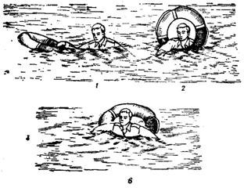 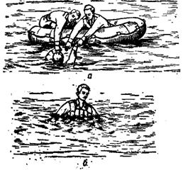
Рис. 32.1. Спасательные средства
судна:
а – спасательный
плот; б – спасательный нагрудник; в – спасательный круг и порядок
пользования им:
1 – надавить одной
рукой на круг; 2 – поставить
круг в вертикальное положение просунуть в него одну руку и голову; 3 – просунув вторую руку в круг, лечь
грудью на круг и, работая руками и
ногами, приближаться к берегу (шлюпке).
[1] В последующих статьях настоящего
Наставления железнодорожный, морской, речной и воздушный транспорт для
краткости будет именоваться транспортом.
[2] В последующих статьях
настоящего Наставления воинские части, учреждения, военно-учебные заведения,
предприятия, организации Министерства обороны, пограничных и внутренних войск
или их подразделения для краткости будут именоваться воинскими частями.
[3] Воинская команда
большой численности — команда, для
перевозки которой требуется предоставление одного и более пассажирских или
людских вагонов.
[4] В последующих статьях настоящего Наставления вооружение, военная техника, имущество и другие материальные средства для краткости будут именоваться вооружением и военной техникой.
[5] В последующих статьях настоящего Наставления железнодорожный подвижной состав, морские, речные и воздушные суда для краткости будут именоваться транспортными средствами.
[6] Аэродром постоянного места базирования гражданской авиации.
[7] Издается отдельно.
[8]
Длина условного вагона равна
[9]
Утверждена заместителем Министра путей сообщения СССР и начальником военных
сообщений Вооруженных Сил СССР
[10] Утверждены Министром путей сообщения в 1979г.
[11] Введены приказом Министра обороны СССР 1983г.
[12] Из расчета одна боковая платформа (аппарель) длиной в 5 шпал для погрузки 10 вагонов.
[13] Издается отдельно.
[14] Издается Министерством путей сообщения.
[15]
Ширина колеи железных дорог СССР-
[16]
Введены приказом Министра обороны СССР и
Министра гражданской авиации СССР
[17] В последующих статьях призванные на действительную
срочную военную службу и уволенные с действительной срочной службы в запас
военнослужащие будут именоваться призывниками и уволенными.
[18]
В последующих статьях настоящего
Наставления начальник поезда или механик-бригадир для краткости будут
именоваться механиком-бригадиром.
[19] В последующих статьях настоящего Наставления военные
коменданты железнодорожных (водных) участков и станций (портов, аэропортов)
для краткости будут именоваться военными комендантами.
[20] Письменное разрешение может выдаваться и дежурным
по станции.